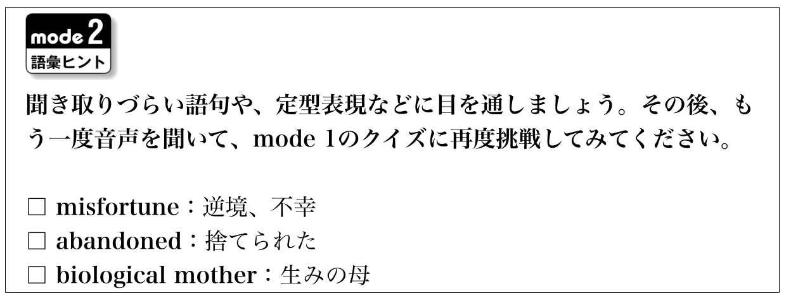
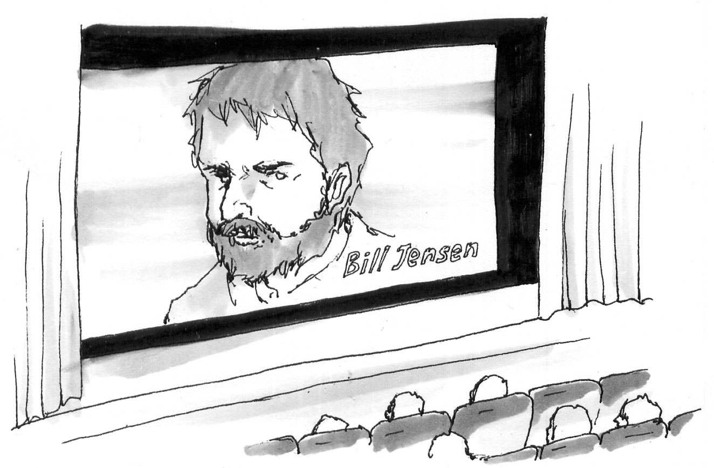

| [音声DL付]究極のイギリス英語リスニング Deluxe 究極のイギリス英語リスニングシリーズ | |
| アルク英語出版編集部 | |
| (2009) | |
※参照項目から元の箇所に戻るには、お使いのビューワーの仕様に従ってください。または一旦目次を表示し、戻りたい箇所の近くの見出しをタップして戻ってください。
Foreword
は じ め に
6000語レベルの英文でよりリアルに、よりディープにイギリス英語を味わおう！
『究極のイギリス英語リスニング Deluxe（デラックス）』は、アルクの「標準語彙水準12000」（Standard Vocabulary List、SVL 12000）をベースにしたリスニング教材、「究極のリスニング」シリーズの姉妹編であり、好評の既刊『究極のイギリス英語リスニング Standard（スタンダード）』の続編です。本書はイギリス英語の楽しさに目覚め、この言葉をさらに知りたい、極めたいとお望みの方のために編集されています。
本書の英文がカバーする英単語のレベルは、SVLのレベル1～6（初・中級レベル）です。イギリス英語ネイティブも多用する自然な表現がふんだんに盛り込まれているため、よりリアルで実践的なリスニングに取り組んでいただくことができます。英文の内容は、日常生活、ビジネス、観光、歴史、文化など、バラエティーに富んでおり、かの国独特のユーモア感覚にあふれています。また、プロのナレーターによる朗読は、イギリス国内外各地のアクセントを再現しています。ぜひ、彩り豊かで美しいイギリス英語の響きを楽しみながら、リスニング力を鍛えてください。
Contents
目 次
Features
本 書 の 特 徴
１ 中級6000語をカバーすれば、イギリス英語ネイティブに近づける！
標準語彙水準12000（SVL 12000）*1は、日本人英語学習者にとって有用な英単語1万2000語を12段階にレベル分けした語彙リストです。本書で扱っている英文は、主にSVL 12000の初級・中級レベルに相当するLEVEL 1～6の範囲内の単語を使用して書かれています*2。LEVEL 4～6の単語の中には難しいものもありますが、ネイティブスピーカーであれば日常生活でよく耳にする単語ばかりなので、この機会にぜひ覚えましょう。
また、よりリアルなイギリス英語に触れていただくために、イギリス英語特有の単語、イギリスの生活・文化に深く根ざした表現なども使用しています。何度も聞いて、ぜひご自分でも使えるようになってください。実際にイギリスに行ったときに、必ず役に立ちます。
*1 SVL収録単語については、既刊「究極の英単語」シリーズ、あるいは「標準語彙水準SVL12000単語一覧」（http://www.alc.co.jp/vocgram/article/svl/）をご参照ください
*2 SVL1～6外で使われている語：①イギリス英語・文化特有の語、②人名や地名などの固有名詞、③複合語（old-fashioned、long-distanceなど。ただし、複合語を構成する語がSVL6以下のもの）、④略語（DVD、CDなど）
２ 生活、文化、歴史も学べるバリエーション豊かな英文を収録！
本書に収録されている英文は全部で45本です。「日常生活」「ビジネス」「観光」「長文ナレーション」「パロディー」という５つのジャンルがあり、内容も構成もさまざまですから、飽きずに取り組んでいただけます。また、速さと長さにより３段階の難易度に分けられているので、ご自身の実力に合った英文から取り組むのもいいでしょう。
３ ３つのmodeでキッチリ聞き取り！
本書では１つの英文に対し、以下の３つのmodeを用意しています。
ヒントなしで英文を聞きます。何も見ずに英文を聞いて、内容が把握できるか確認しましょう。

語彙ヒントを見て、わからない語句を確認してから英文に取り組みます。

日本語訳を見て、内容を理解してから英文を聞きます。
一度で聞き取れなくても、あきらめずに繰り返し聞くことで、英語に耳が慣れ、少しずつ聞き取れる部分が増えてきます。最初は難易度が低い英文から取り組み、徐々にレベルを上げることで、英文の聞き取り能力をアップさせてください。
４ 容認発音（Received Pronunciation）だけでなくイギリス各地のアクセントに触れられる！
本書で学習する英文の音声は無料でダウンロードできます。音声は主に容認発音（Received Pronunciation、RP）のほか、イギリス国内で聞かれるさまざまなアクセントで読まれています。それぞれの英文には、イギリス英語の音声研究の第一人者である聖徳大学教授・小川直樹先生による解説が付属（イギリス英語の「音」レッスン）。イギリス英語の発音の特徴をしっかり学ぶことができます。この解説を読んで音声を聞き、音読やシャドーイングに取り組めば、あなたの発音もUK仕様に近づきます。
音声ファイルのダウンロードと再生方法、ダウンロード特典
アルクダウンロードセンターより無料でご利用いただけます！
※PC・スマートフォンアプリ「語学のオトモALCO（アルコ）」（無料）対応
アルクのメールアドレスIDをお持ちの方が対象です。
簡単なアンケートの記入をお願いしています。
＜入手方法＞
１）ダウンロードセンターにアクセスする
PCでダウンロードする場合：アルク ダウンロードセンター（http://www.alc.co.jp/dl/）にアクセスする。
スマートフォン上でダウンロードする場合：スマートフォンアプリ「語学のオトモ ALCO（アルコ）」（無料）をApp StoreもしくはGoogle Playダウンロードの上、ダウンロードセンターにアクセスする。
２）アルクのメールアドレスIDでログインする。
※お持ちでない方はhttp://www.alc.co.jp/dl/より登録の上、ご利用ください。
３）アンケートを記入する。
PCもしくは、アプリ（ダウンロードセンターボタンをクリック）より電子書籍版『究極のイギリス英語リスニング Deluxe』を選択し、アンケートを記入して送信する。コンテンツのダウンロード画面が表示されます。
※本書奥付に記載のPCコード（7桁）をご準備いただくと便利です。
※コンテンツのダウンロード画面に表示されているダウンロードボタンを押してください。ファイルは一部のPDFを除き圧縮（zip形式）されています。
４）コンテンツをダウンロードする。
＜パソコンでダウンロードする場合＞
ダウンロード後、圧縮ファイルは解凍ソフト（Lhaplusなど）で解凍の上ご利用ください。
＜スマートフォンアプリ「語学のオトモALCO（アルコ）」でダウンロードする場合＞
ダウンロード後、アプリ内で自動的に解凍され所定のフォルダに格納されます（PDFファイルは「ALCO」でご利用いただけません）。
◆PC上でダウンロードした音声ファイルについて
PCにダウンロードした圧縮ファイルを解凍ソフトで展開の上、iTunesなどの音声再生ソフトで取り込んでご利用ください。音声再生ソフトでのファイル取り込み方法や携帯音楽プレーヤーでの利用方法については、ソフトやプレーヤーに付属するマニュアルでご確認ください。
音声ファイルは、音声再生ソフトで次のように表示されます。
出版社名（アーティスト名）：「ALC PRESS INC.」と表示
書名（アルバム名）：『究極のイギリス英語リスニング Deluxe』
ダウンロードした音声はトラック番号が表示されます。
（2016年7月1日時点の情報。今後詳細が変更になる可能性があります）
How to use
本 書 の 使 い 方
音声のトラック番号
語数／難易度
①「ダウンロードした音声の03を再生してください」という意味です。
②取り上げる英文の総語数です。
③取り上げる英文の難易度です。３段階に分かれています。
★☆☆：易。130WPM（１分間に130語）未満のスピードで読まれている、200語未満の英文です。
★★☆：普通。130WPM以上、165WPM未満のスピードで読まれている、300語未満の英文です（130WPM未満でも、200語～300語の英文はここに分類されます）。
★★★：難。165WPM以上のスピードで読まれている英文です（165WPM未満でも、300語以上の英文は、ここに分類されます）。
状況
取り上げる英文の状況や背景を説明します。
mode 1
ヒントなし
何も見ずに英文を聞くmodeです。続いて、会話の内容に基づくクイズに挑戦してみましょう。答えはなるべく英語で書いてください（つづりがわからなければカタカナでもOK）。自信を持って解答できない場合は、次のmode 2に進みます。
mode 2
語彙ヒント

聞き取りにくい単語や、背景知識がなければ理解しにくい表現、定型表現などを紹介しています。mode 1で理解の妨げとなった語句を確認してから、もう一度英文を聞き、再びmode 1のクイズに挑戦しましょう。
イギリス英語の「音」レッスン
イギリス英語の音やリズムの特徴、話者の話し方のくせなどを解説したコラムです。
mode 3
和訳ヒント

mode 1と2では内容が理解できなった場合は、和訳を読んで英文の内容を理解します。その後もう一度英文を聞き、答えを導ける部分が聞き取れたら、mode 1のクイズの答えを書き込みましょう。
話されていた英文はコレだ！
音声トラックに収録されている英文のトランスクリプション（音声を文字で書き起こしたもの）です。各単語がどのように発音されていたのか、文字を見ながら音声を聞いて、確認しましょう。下線部はmode 1のクイズの答えを導ける部分です。
解答例
mode 1のクイズの解答例と訳です。
第１章
イギリス人の日常を聞いてみよう
語数：276／聞き取り難易度：★★☆
語数：247／聞き取り難易度：★★★
語数：123／聞き取り難易度：★☆☆
語数：290／聞き取り難易度：★★★
語数：178／聞き取り難易度：★☆☆
語数：209／聞き取り難易度：★★★
語数：258／聞き取り難易度：★★★
語数：269／聞き取り難易度：★★☆
語数：258／聞き取り難易度：★★★
語数：196／聞き取り難易度：★★☆
語数：198／聞き取り難易度：★★☆
第１章 イギリス人の日常を聞いてみよう
01 お勧めの物件ですよ
DL01
語数：276／難易度：★★☆

不動産屋の営業マンが、部屋を探している女性に、あるアパートを案内しています。どんな物件なのか聞いてみましょう
まずはヒントなしで会話の聞き取りにチャレンジ。
その後、会話の内容に基づく３つのクイズに答えて、聞き取れたかをチェックしてみましょう。
解答はできるだけ英語で書くこと。つづりがわからない場合はカタカナでもOKです
①キッチンにはどんな設備がある？
②外庭は誰と共有しなければならない？
③このあと、女性は何をする？
すべての質問に答えられなかった人は、mode 2へ ≫
聞き取りづらい語句や、定型表現などに目を通しましょう。その後、もう一度音声を聞いて、mode 1のクイズに再度挑戦してみてください。
□open-plan：自由な間取りの、オープン・プランの ※オープン・プランとは、内部を自由に使用できるよう間仕切りを最小限に留めた設計のこと。
□agreeable：好ましい、快い
□accommodation：居住するところ、家 ※イギリス英語。
□flat：アパート、共同住宅
□to your own preference：あなたの好みに合わせて
□armchair：ひじ掛けいす
□sideways：斜めに
□microwave：電子レンジ
□convenience：便利なもの
□I'm not big on ...：...はそれほど好きではない
□equipment：道具、設備
□more than I will ever need：必要になる以上のもの
□TV-dinners：TVディナー、冷凍ディナー ※１食分の料理が１つの容器に入った冷凍食品。テレビを見ながらでも簡単に温めて食べられる。
□take-aways：持ち帰り用の料理 ※アメリカ英語ではtakeouts。
□patio：中庭、テラス ※（SVL外）
□have a quick butcher's：ひと目見る、ちらっと見る ※元々はhave a quick butcher's hook（肉屋のフックに肉を引っ掛けて見る＝ちょっと見てみる）で、lookの押韻表現。＝ have a quick look
□unlock：解錠する
□down there：あちらに
□footy：サッカー ※（SVL外）＝football。イギリスの口語。
□greenhouse：温室
□exclusive：排他的な、唯一の、高級な
□round here：このあたりでは ※＝around here
□neighbouring：近隣の ※アメリカ英語ではneighboring。
□properties：地所、不動産
□are lacking ...：...が欠けている、...に乏しい
イギリス英語の「音」レッスン①
解説＝小川直樹（聖徳大学人文学部外国語学科教授）
尻上がりにならない疑問文のイントネーション
80秒のCan I ... butcher's?（こちら参照）は非常にイギリス英語的なイントネーションだ。アメリカ英語に慣れている人は、この文が上昇調ではないことに違和感を抱くかもしれない。しかし、イギリス英語のyes-no疑問文ではしばしばこのように下降調が用いられる。これが疑問文であることは、文脈や文法など、イントネーション以外の部分から判定しないといけない。
また、この同じ文の前半、Can I have aが極めて素早く発音されていることにも注意しよう。イギリス英語では、このように出だしが素早い疑問文はことのほか多い。少し慣れておくだけでも、聞き取りでまごつかずにすむ。
まだすべての質問に答えられない人は、mode 3へ ≫
和訳を読んで、話されている内容を確認しましょう。その後また音声を再生し、クイズの解答につながる部分を注意して聞いてみてください。
不動産業者：ご覧のとおり、こちらが居住スペースです。すべて完全にオープン・プランになっています。
客：ええ、とてもいい感じね。小さくて暗い部屋がたくさんあるより、こういうオープン・プランの間取りが好きだわ。
不：最近はどんな住居でもこの手の間取りが大人気なんです。すでにご説明しましたとおり、このアパートは家具つき賃貸なのですが、もちろんお客様のお好みで配置を変えてお使いいただけます。ひじ掛けいすをあの角に対して斜めに置くことで、ソファ周りがもう少し広くなりますよ。
客：そうね、想像できるわ。で、その奥がキッチン？
不：このすぐ奥です。これがキッチンで、オーブンや洗濯機、電子レンジ、そのほか、想像できる便利な家電はほとんど何でもそろっているんです。
客：私は料理はあまり好きじゃないんだけど、本当にこのキッチンはちゃんとした設備が全部そろっていて、私には十分過ぎるくらいね。私はTVディナーや中華のテークアウトで済ますことが多いし。
不：それでしたら、電子レンジが重宝ですよ！ そのドアを出ますと、小さな中庭につながっています。外庭もあるのですが、それはこの棟に住んでいるほかの３部屋の住人の方々と共有になります。
客：問題ないわ。ちょっと見てもいいかしら？
不：もちろんです。どうぞ。鍵を開けますね。はい、こちらです。
客：庭があそこまであるの？ すてき！ 夏場はここでサッカーしたい放題ね。
不：実際、クリケットだってできますよ。ただ、温室に気を付けてくださいね！ このあたりでは、外庭があるのはかなり珍しいんですよ。近所のほかの物件は、外に空間なんてありませんから。
客：決めたわ！ どこにサインしたらいいの？
次項でトランスクリプションと解答例を確認 ≫

最後に、トランスクリプションを確認しましょう。下線部がmode 1のクイズの解答を導ける部分です。
Estate agent: This, as you can see, is the living area. All very open-plan.
Customer: Yes, very agreeable. I much prefer this open-plan arrangement over a series of small, dark rooms.
E: It's a very trendy lay-out for all sorts of accommodation these days. Now, as we explained before, this flat is being rented out with furniture but you would be free, of course, to arrange everything to your own preference. You might want to move the armchair sideways into that corner to create a bit more space around the sofa.
C: Yes, I can see how that would look. And through there is the kitchen?
E: Just through here.①This is your kitchen, complete with oven, washing machine, microwave, and just about every other electronic convenience you can imagine.
C: I'm not big on cooking but it certainly is provided with all the right equipment and more than I will ever need. I'm more accustomed to TV-dinners and Chinese take-aways.
E: Then the microwave will be your best friend! That door there leads out onto a small patio area.②There's a garden too but you will be sharing it with the other people living in the three other flats in the house.
C: No problem. Can I have a quick butcher's?
E: Certainly. Go ahead. Let me just unlock the door. There you go.
C: The garden goes right the way down there? That's brilliant! I can imagine all the footy we can play here in the summertime.
E: Or a quick game of cricket, indeed. You just need to mind the greenhouse! The garden is pretty exclusive round here. The neighbouring properties are lacking any sort of outside space.
C:③I'll take it! Where do I sign?
解答例
① It has an oven, a washing machine, a microwave, etc.（オーブン、食器洗浄機、電子レンジなど）
② She will be sharing it with the other people living in the three other flats in the house.（同じ建物内のほかの３戸の住人たちと共有する）
③ She will sign the contract and rent the flat.（契約書にサインしてこのアパートを借りる）
02 もう１杯飲んで行こうよ
DL02
語数：247／難易度：★★★
パブでビールを楽しんでいる男性２人。そのうちの１人は、今日はだいぶご機嫌な様子です。なぜなのでしょう？
まずはヒントなしで会話の聞き取りにチャレンジ。
その後、会話の内容に基づく３つのクイズに答えて、聞き取れたかをチェックしてみましょう。
解答はできるだけ英語で書くこと。つづりがわからない場合はカタカナでもOKです
①「もう１杯」と勧められた男性（B）は何を飲む？
② 飲み物をおごる男性（A）は今日、なぜ気前がいい？
③ Bがダーツで勝ったらAは何をする？
すべての質問に答えられなかった人は、mode 2へ ≫
聞き取りづらい語句や、定型表現などに目を通しましょう。その後、もう一度音声を聞いて、mode 1のクイズに再度挑戦してみてください。
□I'll get the next round in.：次の１杯は僕がおごるよ。 ※roundは１人が全員の飲み物を注文し、代金を支払うこと。パブでは、roundで順番におごり合うのが習慣。
□Steady on!：慌てるな！、落ち着け！
□excessive：度を越した、過度の
□big day：大変な日、重要な日
□staggering：よろめいて、ふらついて
□half-pint：ハーフパイント ※イギリスでは１パイントは約0.57リットル。パブでは１パイント入るグラスでビールを出すことから、pintはビール自体を指すことも多い。＝half
□lager：ラガービール
□throw in ...：おまけとして...を添える
□a packet of crisps：ポテトチップ１袋 ※ポテトチップはアメリカでは（potato）chips。
□flavour：風味、味 ※アメリカ英語ではflavor。
□mate：友達、相棒 ※この会話のように、呼び掛けとしても用いられる。
□flush：興奮して ※（SVL7）
□if you're twisting my arm：どうしてもと言うなら ※「腕をねじって強いるなら」ということから。
□chips：フライドポテト ※＝（French）fries
□I'll have you know：言っておくが
□pal：（通例男同士の）仲間、相棒 ※呼び掛けにも使われる。
□Rubbish!：まさか！、うそだろ！ ※rubbishはイギリス英語で「ごみ、がらくた」。
□You wouldn't know one end of a saucepan from the other!：鍋の持ち方さえわからないだろう！、料理のことは何もわからないだろう！
□I kid you not.：冗談じゃないよ。、本当なんだ。 ※kidは動詞で「からかう」。
□tackle：取り組む、立ち向かう
□Blimey!：わあ！、とんでもない！ ※（SVL外）間投詞。イギリスの口語で、（God）blind meの変化形。
□Sunday dinner：サンデー・ディナー ※イギリスで、日曜午後１時ごろに家族そろって食べる食事。ローストビーフ、ヨークシャー・プディングなどが代表的なメニュー。
イギリス英語の「音」レッスン②
口語表現や独特のユーモアに慣れよう
イギリス英語の聞き取りの難しさは、（1）発音（なまり）の多様性、（2）イギリス人同士が使う、私たちにはなじみのない口語表現の多さ、が原因としてあげられる。この会話にはSteady on!、pal、Blimey!など口語表現が多く、まさに（2）のために聞き取りにくい典型例だ。これに効く即効薬というものはない。一つひとつ表現を覚えていくしかない。
ちなみに、イギリスのユーモアというのは、38秒の... if you're twisting my arm.（こちら参照、「そこまで勧めるなら」）とか、70秒の... how about me beating you ...（こちら参照、「僕が君を負かすってのはどう」）などのような、皮肉めいたもの言いや、相手の虚を突く言い方が多い。そのため、素直に聞いているとわからないことがしばしばである。
ところで、62秒のrestaurant（こちら参照）の発音は「レストロン」に近い。アメリカ英語では、語末の[t]を発音するのが普通だが、イギリス英語ではフランス語風に[t]を落とした発音もよく聞かれる。
まだすべての質問に答えられない人は、mode 3へ ≫
和訳を読んで、話されている内容を確認しましょう。その後また音声を再生し、クイズの解答につながる部分を注意して聞いてみてください。
A：あー！ 君も飲めよ。飲み干せ！ 次の１杯は僕がおごるから。何を飲む？
B：そう慌てるなよ！ 今夜は飲み過ぎるわけにはいかないんだ。明日は仕事が詰まっているんだよ。同僚が休暇中だから、仕事が２倍なのさ。頭痛でフラフラしながら出社するわけにはいかないんだよ。
A：まあ、いいじゃないか。もう１杯。
B：わかったよ、じゃあ、あと１杯だけ。でも、今度はハーフでいいよ。
A：そう言うならそうしよう。じゃあ、ラガーのハーフパイントでいいかい？ ポテトチップも１袋買ってこよう。何味がいい？
B：相棒、今日はやけに気前がいいな。何があったんだ？
A：ちょっと興奮しているんだ。競馬で少し当ててね。
B：それはおめでとう！ そういうことならいいよ。どうしてもって言うなら、チーズ・オニオン味を１袋頼もう。
＊ ＊ ＊
A：ほら、君のビールとポテトチップ。僕はフライドポテトを頼んだよ。２、３分かかるらしい。
B：ってことは、奥さんは今夜、夕飯を作ってくれないのか？
A：子どもたちを連れて実家に行ってるんだ。でも、言っておくけど、僕だって料理の腕はなかなかのもんなんだぜ。
B：うそつけ！ 鍋の持ち方さえろくにわからないくせに。
A：うそじゃないよ。学生時代、レストランの厨房でバイトしてたんだ。どんなレシピをリクエストされても立ち向かえる。
B：すごい！ 隠れた才能の持ち主だな。
A：そのとおり。才能といえば、フライドポテトを待つ間、ダーツでもひと勝負やろうか、君を打ち負かしてやるよ。
B：僕が勝ったら、来週、サンデー・ディナーをごちそうしてくれよな。
次項でトランスクリプションと解答例を確認 ≫
最後に、トランスクリプションを確認しましょう。下線部がmode 1のクイズの解答を導ける部分です。
A: Oh! Come on then. Drink up! I'll get the next round in. What are you having?
B: Steady on! I can't be too excessive tonight. Big day ahead tomorrow in the office. My colleague is off so I've twice the work. I can't be staggering in with a sore head.
A: Oh, come on. One more.
B:①OK, just the one. But make it a half this time.
A: If you're sure.①A half-pint of lager, then? I'll throw in a packet of crisps too. What flavour?
B: You're pretty generous tonight, mate. What's going on?
A: I'm feeling a bit flush.②Had a bit of luck on the horses.
B: Oh, congratulations! Go on, then. A packet of cheese and onion, if you're twisting my arm.
＊ ＊ ＊
A: There's your half, and your crisps. I've ordered a basket of chips for myself. They'll take a few minutes.
B: Is the wife not cooking for you tonight, then?
A: She's at her mother's with the kids. But I'll have you know, I'm a bit of a chef in the kitchen myself, pal!
B: Rubbish! You wouldn't know one end of a saucepan from the other!
A: I kid you not. I worked part-time in the kitchen of a restaurant when I was a student. I'll tackle any recipe you throw at me.
B: Blimey! A man of hidden talents.
A: That's me. Speaking of talents, how about me beating you at a round of darts while we're waiting for my chips?
B:③If I win, you can cook me Sunday dinner next week.
解答例
① A half-pint of lager.（ラガーのハーフパイント）
② Because he had a bit of luck on the horses.（競馬で少し勝ったから）
③ He will cook B Sunday dinner next week.（来週、Bのためにサンデー・ディナーを作る）
03 話題の映画、公開間近！
DL03
語数：123／難易度：★☆☆

話題の伝記映画がまもなく公開されるようです！
予告編を聞いて、主人公ビル・ジェンセンの人生を想像してみましょう
まずはヒントなしで予告編の聞き取りにチャレンジ。
その後、予告編の内容に基づく３つのクイズに答えて、聞き取れたかをチェックしてみましょう。
解答はできるだけ英語で書くこと。つづりがわからない場合はカタカナでもOKです
①ジェンセンの母親は何歳で彼を身ごもった？
②ジェンセンの父親はどんな人物だった？
③この映画は何を基に作られている？
すべての質問に答えられなかった人は、mode 2へ ≫
聞き取りづらい語句や、定型表現などに目を通しましょう。その後、もう一度音声を聞いて、mode 1のクイズに再度挑戦してみてください。
□misfortune：逆境、不幸
□abandoned：捨てられた
□biological mother：生みの母
□boyhood：少年時代
□consumed by ...：...（という感情）にとらわれた
□desperately：必死で
□hardship：困窮、苦難
□disapproval：不承認、不同意
□rags to riches story：立身出世物語 ※ragsは「ぼろ切れ、古着」。
□is characterised by ...：...に特徴づけられる、...を特徴とする ※アメリカ英語ではcharacterized by ...。
□bravery：勇敢さ、勇気
□dignity：威厳、気高さ
□brilliance：才気、明敏さ
□statesmen：政治家
□brutal：残酷な、容赦ない
□devotion：献身
□ nuns：修道女
□authorized：公認された
□controversial：物議を醸す
□charting ...：...を図表にする
□quest：探求、追求
□acceptance：容認、受け入れられること
□rise to prominence：傑出すること、出世すること ※prominenceは「傑出」。
イギリス英語の「音」レッスン③
「つなぎのｒ」が現れる場合
35秒のof our age（こちら参照）の３語は一気につながって「オヴァーレイヂ」。特に下線部に「つなぎのｒ」が現れているところに注意しよう。
RP（Received Pronunciation、「容認発音」）に代表される通常のイギリス英語では、母音後（語末や子音前）のｒは発音されない。例えば、21秒のfather（こちら参照）、44秒のfirst（こちら参照）ではそのためすっきりした「ア」に近い母音が使われる。しかし、our ageのように語末のｒの次に、母音で始まる単語が続くと、このｒは発音されるようになるのだ。58秒のfor acceptance（こちら参照）もつながって、「フレクセプテンス」のように聞こえる。
ところで、55秒のcontroversial（こちら参照）の名詞形はcontroversyだ。これは、イギリス英語では（1）[kəntr vəsi]、（2）[kntrəvə(ː)si]の２種類の強勢パターンがある。
vəsi]、（2）[kntrəvə(ː)si]の２種類の強勢パターンがある。
昔は（2）が好まれたようだが、今は（1）が主流のようだ。アメリカ英語では（2）に近い[kɑ́ntrəvəːrsi]のみ使われる。
まだすべての質問に答えられない人は、mode 3へ ≫
和訳を読んで、話されている内容を確認しましょう。その後また音声を再生し、クイズの解答につながる部分を注意して聞いてみてください。
ナレーション：不幸な境遇に生まれ、16歳で彼を身ごもった実母に捨てられた、ビル・ジェンセンは、その少年時代を、自分の居場所を求める強い思いにとらわれて過ごしました。困窮と、アルコール依存で暴力的な父親を認められない気持ちから必死に逃れようとしてきたのです。
この驚くべき立身出世物語は、一人の男を当代きっての偉大な政治家の一人にした、そのたぐいまれなる勇敢さ、尊厳、そして才気に彩られています。われわれが目にするのは、決意を秘めた男が、残酷な過去と、初めは教師であり後に家族となった修道女たちへの深い愛情によって形づくられていく物語なのです。
公認伝記を原作とするこの感動的な映画は、ジェンセンの承認への探求と立身出世の過程を描き、時に物議を醸してきた彼の人生を明らかにします。
次項でトランスクリプションと解答例を確認 ≫
最後に、トランスクリプションを確認しましょう。下線部がmode 1のクイズの解答を導ける部分です。
Narration: Born in misfortune, abandoned by①his biological mother who was pregnant at 16, Bill Jensen spent his boyhood consumed by a burning desire for a sense of belonging, desperately seeking an escape from hardship and the disapproval of②his violent, alcoholic father.
An astonishing rags to riches story, this story is characterised by one man's remarkable sense of bravery, dignity and the brilliance that made him one of the greatest statesmen of our age. We see a determined man shaped by a brutal past and a devotion to the Catholic nuns who were first his schoolteachers and then became his family.
③Based on the authorized biography, this emotional film illustrates Jensen's sometimes controversial life, charting his quest for acceptance and rise to prominence.
解答例
① She was pregnant at 16.（16歳で妊娠した）
② He was violent and alcoholic.（暴力的でアルコール依存症だった）
③ It's based on Jensen's authorized biography.（ジェンセンの公認の伝記をもとにしている）
04 何を注文しようか？
DL04
語数：290／難易度：★★★
カップルが初デートで、あるレストランを訪れました。男性は前にもこのお店に来たことがあるようですが、どんな機会だったのでしょう？
まずはヒントなしで会話の聞き取りにチャレンジ。
その後、会話の内容に基づく３つのクイズに答えて、聞き取れたかをチェックしてみましょう。
解答はできるだけ英語で書くこと。つづりがわからない場合はカタカナでもOKです
①男性は去年、このレストランで誰と何をした？
②男性の兄はどこに住んでいる？
③女性はなぜ前菜を注文しない？
すべての質問に答えられなかった人は、mode 2へ ≫
聞き取りづらい語句や、定型表現などに目を通しましょう。その後、もう一度音声を聞いて、mode 1のクイズに再度挑戦してみてください。
□mum：お母さん、ママ ※（SVL8）＝mother。アメリカ英語のつづりはmom。
□wedding anniversary：結婚記念日
□all in all：全部で、合計で
□double celebration：二重の祝い事
□tempting：魅力的な、心をそそる
□probability：確率、可能性
□fly out there：飛行機でそこに行く
□pretty slim：ほとんどない、非常にわずかな
□dear：高価な ※イギリス英語。
□student loans：学資ローン、奨学金
□sympathise：同情する、共感する ※アメリカ英語のつづりはsympathize。
□more or less：事実上
□penniless：無一文の ※penny（イギリスの最小通貨単位）+ -less（...のない）。
□You can't go wrong with ...：...は間違いない
□super：素晴らしい
□minute steak：ミニット・ステーキ ※薄切りの、すぐに焼けるステーキ。
□ruin：台無しにする
□appetite：食欲
□(are) stuffed：おなかいっぱいの
イギリス英語の「音」レッスン④
イギリス英語の母音の発音
17秒のaunt（こちら参照）は[ɑ́ːnt]だ。なおant（アリ）は[ǽnt]だ。ところが、アメリカ英語では両者ともに[ǽnt]となる。ただし、アメリカの[æ]は、実際はかなり「エ」に近く長い音だ。[ɛ́ːə]と表記してもよいくらいだ。一方、イギリスの[æ]は、「ア」に近く短い。[a]と表記されることすらある。そのため、antの発音は、辞書などの記号上では同じだが、実際は「アント」（英）と「エァーント」（米）のようになる。
55秒のloan（こちら参照）は、「ローン」ではなく「ルーン」と聞こえる。この単語の母音は[ə́U]。出だしの[ə]は口をあまり開けないので、「ウ」に聞こえることもある。その結果、「ルウン」と聞こえるわけだ。
66秒のhere（こちら参照）は「ヒー」のようにも聞こえる。現代イギリス英語ではhereやhairなどの母音[Íə] [ɛ́ə]などの母音が、[Íː] [ɛ́ː]のように長母音化する傾向がある。
76秒のspinach（こちら参照）の発音は、[spÍnɪdʒ]または[spÍnɪtʃ]。ここでは後者のようだ。
まだすべての質問に答えられない人は、mode 3へ ≫
和訳を読んで、話されている内容を確認しましょう。その後また音声を再生し、クイズの解答につながる部分を注意して聞いてみてください。
女性：どれから頼んだらいいか、迷ってしまうわ。どれもおいしそうで。ここには前にも来たことがあるの？
男性：うん、２、３回かな。去年ここで、両親の結婚記念日を家族みんなでお祝いしたんだ。
女：大きなパーティーだったの？
男：かなりね。祖父母も、おばも、おじも全員来たから......全部で、ええと、20人くらいはいたよ。兄弟も帰ってきていたから、お祝い事が２つあったんだ。
女：あなたに兄弟がいたなんて知らなかったわ！
男：うん、ジェーソンっていうんだよ。オーストラリアに移住して、もう５、６年になるんだけど、去年、初めて帰省したんだよね。
女：じゃあ、あなたより年上なのね？
男：うん。31歳で、今はオーストラリア人女性と結婚していて、小さい男の子もいるよ。
女：じゃあ、あなた、おじさんじゃない！ 素晴らしいわね。お兄さんの家族に会いに行ったことはあるの？
男：いや、まだないんだ。行ってみたいのはやまやまだけど、オーストラリアまで飛行機で行く資金がすぐにできる見込みはほとんどないな。航空券って、本当に高いからね。たぶん、来年か再来年、学資ローンを払い終えてもう少し貯金ができるようになったら、行くかもしれない。
女：よくわかるわ。私はありがたいことに、ローンはほぼ払い終えたんだけど、卒業して以来ほとんど無一文よ。ところで、このお店のおすすめは何？
男：魚料理は間違いないけど、ステーキも最高だよ。
女：そうね......じゃあ、サーモンのほうれん草クリーム・スパゲッティー添えにするわ。
男：じゃあ、僕は......僕は......ミニット・ステーキのガーリック・バター焼きとスパイシー・ポテトにするよ。前菜に何か頼もうか？
女：ああ、ええと......おなかがいっぱいになって、メーンコースが食べられなくなるのは嫌なのよね。あなたは何か頼むの？
男：君が食べないなら、僕もいらないよ。パスタを食べたあと、君がもう少し食べられそうなら、何かデザートを頼んでシェアすることもできるしね。
次項でトランスクリプションと解答例を確認 ≫
最後に、トランスクリプションを確認しましょう。下線部がmode 1のクイズの解答を導ける部分です。
Woman: I hardly know where to start. It all looks delicious. Have you been here before?
Man: Yes, a couple of times.①My mum and dad celebrated their wedding anniversary here last year with the whole family.
W: Big party?
M: Pretty big. All the grandparents, aunts, uncles ... we were about, hm, 20 people all in all. My brother was home too, so it was a double celebration.
W: I didn't even know you had a brother!
M: Yeah. Jason.②He went to live in Australia five or six years ago now and last year was the first time he'd been back.
W: He's older than you, then?
M: Yeah. He's 31, married to an Australian girl now and they have a little boy.
W: You're an uncle! That's fantastic. Have you been out to visit them?
M: No. Not yet. It's tempting but the probability of me having the cash to fly out there anytime soon is pretty slim. The flights are really dear, you know. Maybe next year or the year after, when I've finished paying off my student loans and can start saving a bit more.
W: I can sympathise with that. Thankfully, mine are almost paid but I've been more or less penniless since graduation. So. What can you recommend here?
M: You can't go wrong with the fish but the steaks are super too.
W: Let's see ... OK, I'm going to have the salmon with spaghetti in a spinach cream sauce.
M: And I'll have ... I'll have ... the minute steak in garlic butter with spicy potatoes. Should we have anything else first?
W: Oh. Umm ...③I don't want to ruin my appetite for the main course. Are you having anything?
M: Not if you aren't. Maybe we can share something from the dessert menu if you're not too stuffed after your pasta.
解答例
① He celebrated his parents' wedding anniversary with the whole family.（家族全員で両親の結婚記念日を祝った）
② He lives in Australia.（オーストラリアに住んでいる）
③ Because she doesn't want to ruin her appetite for the main course.（おなかいっぱいになってメーンコースが食べられないと嫌だから）
05 お得なセール、開催中！
DL05
語数：178／難易度：★☆☆
夏のセールにはお得な商品がいっぱい。家具店のテレビ・コマーシャルを聞いて、何がどれだけ安いのか情報収集しましょう！
まずはヒントなしでコマーシャルの聞き取りにチャレンジ。
その後、コマーシャルの内容に基づく３つのクイズに答えて、聞き取れたかをチェックしてみましょう。
解答はできるだけ英語で書くこと。つづりがわからない場合はカタカナでもOKです
①繊細な彫刻を施したドレッサーはいくら？
②ベッドや浴室用リネンを１組買うと、何がもらえる？
③購入金額がいくら以上になると送料無料になる？
すべての質問に答えられなかった人は、mode 2へ ≫
聞き取りづらい語句や、定型表現などに目を通しましょう。その後、もう一度音声を聞いて、mode 1のクイズに再度挑戦してみてください。
□Wilson's Home Furnishings：ウィルソンズ・ホーム・ファーニッシングス ※架空の店名。furnishingsは「家具、インテリア用品」。
□spectacular：目を見張るような
□be beaten：打ち負かされる
□tremendous：ものすごい
□exclusive：独占する、高級な
□home fittings：家庭用調度品
□solid pine：ソリッド・パイン材の、パイン無垢材の ※pineは「松の木」。
□finely carved：繊細な彫刻を施した
□two-drawer：引き出しが２段の
□vanity table：鏡台
□fitted：空間にぴったり合うように作られた
□oak：オーク材の、なら材の
□consultation：相談
□assembly：組み立て
□abundant：豊富な
□while stocks last：在庫がある限り
□recommended retail price：希望小売価格
□take advantage of ...：...を利用する
□interest-free：無利子の、無金利の
イギリス英語の「音」レッスン⑤
イントネーションで文の区切りがわかる
イントネーションを見てみよう。ここでは、主に２種類のトーンが使われている。１つは「下降調」だ。下降調は文などの終わりを示す。そのため、このトーンが現れると、その文は一区切りつくということがわかる。出だしで言えば、3秒のFurnishings（こちら参照）、6秒のon!（同）、8秒のprice（こちら参照）などがそう。ただ、声の上下の幅には多様性があって、Furnishingsなどは狭い。一方、セール価格を言うあたりでは、音域が広く使われている（声の高さが急降下する）。
一方、特徴的なのが、文の途中などに使われるトーンだ。まだ終わっていないことを示すには「上昇調」が使われる。5秒のsale（こちら参照）のように上がっていくものが代表だ。だが、プロの音読ではしばしば、高く平らなトーンが使われる。20秒の￡349（こちら参照）のpounds、26秒のbeautiful（こちら参照）のful、27秒のcarved（同）などがそれだ。特にcarvedは顕著だ。このトーンはアナウンサーなどのプロの朗読に多い。一方、一般庶民の会話などでは、下がって上がる「下降上昇調（降昇調）」がよく使われる。ここでは37秒のcharming（こちら参照）が降昇調だ。
まだすべての質問に答えられない人は、mode 3へ ≫
和訳を読んで、話されている内容を確認しましょう。その後また音声を再生し、クイズの解答につながる部分を注意して聞いてみてください。
テレビ・コマーシャル：ウィルソンズ・ホーム・ファーニッシングス。ただいま、大セール開催中！ 安さならどこにも負けません。スタイリッシュな家具や、高級な家庭用調度品が超お値引き価格です。寝室用家具がすべて20パーセントオフ。例えば、このエレガントなパイン無垢材のベッドが──349ポンドのところ、今ならたったの279ポンド。また、繊細な彫刻が施されたこの美しい引き出し２段のドレッサーが75ポンドオフ──破格の299ポンドでお求めになれます。はめ込み式のキッチンも驚きの価格です。例えばこのすてきなトラディショナル・スタイルのオーク材キッチンが、付属品すべて込みでたった999ポンドから。キッチンのご相談、プランニングや組み立ても無料で行います。豊富なラインナップを誇る当店のぜいたくなベッドや浴室用のリネンを１組お買い上げいただくと、もう１組、無料で差し上げます。多種多様なカーテンも、在庫が続く限り、半額でご提供。ソファ、いす、ダイニングテーブルも......希望小売価格の20パーセントオフでお求めいただけます。この最高にすてきな３人掛けの革張りソファは、驚きの399ポンドであなたのものになります。どの商品も、200ポンド以上のお買い上げで送料無料。当店の無利子のクレジットもご利用ください。１月まで何も払う必要はありません。急いで、今すぐお近くの店舗にお越しください。ウィルソンズ・ホーム・ファーニッシングスのセール。どうかお見逃しなく！
次項でトランスクリプションと解答例を確認 ≫
最後に、トランスクリプションを確認しましょう。下線部がmode 1のクイズの解答を導ける部分です。
TV ad: Wilson's Home Furnishings. Spectacular sale now on! We won't be beaten on price. Tremendous savings on stylish furniture and exclusive home fittings. 20 per cent off all bedroom furniture, such as this elegant solid pine bed --- was £349, now only £279. Or save £75 on①this beautiful, finely carved two-drawer vanity table --- exceptional value at only £299. Fitted kitchens at unbelievable prices. Such as this charming, traditional-style oak kitchen with all fittings, from only £999. Free kitchen consultation, planning and assembly service.②Choose one set from our abundant range of luxury bed and bath linens and get another of your choice absolutely free. Various curtains 50 per cent off, while stocks last. Sofas, chairs, dining tables ... you save 20 per cent on the recommended retail price. This fantastic three-seat leather sofa can be yours for an amazing £399.③With free delivery on all purchases over £200. Take advantage of our interest-free credit. Pay nothing until January. Hurry, visit your local branch now. Wilson's Home Furnishings Sale. You can't afford to miss it!
解答例
① It's only £299.（たったの299ポンド）
② You can get another of your choice absolutely free.（好きなものをもう１組、無料でもらえる）
③ On all purchases over £200.（合計200ポンド以上購入した場合）
06 イメチェンしたいんだけど
DL06
語数：209／難易度：★★★
髪を切りに来た女性が、ヘアスタイルについて美容師に相談しています。
彼はどんなアドバイスをするのでしょう？
まずはヒントなしで会話の聞き取りにチャレンジ。
その後、会話の内容に基づく３つのクイズに答えて、聞き取れたかをチェックしてみましょう。
解答はできるだけ英語で書くこと。つづりがわからない場合はカタカナでもOKです
①女性はどんな感じのヘアスタイルにしたい？
②女性は２週間後に何をする予定？
③女性は髪を染めるのをいつまで待つべき？
すべての質問に答えられなかった人は、mode 2へ ≫
聞き取りづらい語句や、定型表現などに目を通しましょう。その後、もう一度音声を聞いて、mode 1のクイズに再度挑戦してみてください。
□I'm not a hundred per cent sure.：100パーセントの確信がない。、はっきり決めていない。
□contemporary：現代の、最新の
□soften：やわらげる
□(are) accustomed to ...：...になじんでいる
□one length：ワンレングスの、切りそろえた
□trim：整える
□feather：先を薄く短くカットする
□downward：下の方へ、下向きに
□exposing your face a little more：顔をもう少し出して
□suit your bone structure：あなたの骨格に合う
□colour：色 ※アメリカ英語ではcolor。
□in a fortnight：２週間後に ※主にイギリスで使われる。
□go a bit more blonde：より明るい金髪にする
□freshly dyed：染めたばかりの
□bleached：脱色した
□enormously：とてつもなく
□a head full of ...：...だらけの頭
□seaweed-green：海藻のような緑色の
□light copper highlights：明るいコッパーカラーのハイライト ※copperは銅のような明るい茶。highlightは、髪の一部を違う色に染めたり脱色したりすること。
□transform：一変させる
□as a precaution：念のため
□hols：休暇 ※（SVL外）holidaysの短縮形。
□reception：受付
イギリス英語の「音」レッスン⑥
変わりつつある母音の発音
7秒のsure（こちら参照）が[ʃɔ́ː]となっている。[Úə]は現在、かなりの頻度で[ɔ́ː]と発音される。poorも典型で、かなりの頻度で[pɔ́ː]となる。また、45秒のhair（こちら参照）は「ヘー」（[hɛ́ː]）となっている。これも現代イギリス英語では欠かせない特徴だ。[ɛ]は口を最大限に開けた「エ」。whereやthereなどにもこの母音が使われることが多い。
22秒のbut I think we could just（こちら参照）は、目（耳？）にも止まらぬ速さで発音されている。イギリス英語＝はっきり発音する、などと思っていると、足をすくわれる。実はイギリス英語では、弱いところはアメリカ英語以上に弱く、短く、あいまいに発音されることが多い。
まだすべての質問に答えられない人は、mode 3へ ≫
和訳を読んで、話されている内容を確認しましょう。その後また音声を再生し、クイズの解答につながる部分を注意して聞いてみてください。
美容師：で、今日はいかがいたしましょうか？
客：はっきり決めてないの。いつもとは違う、今っぽい感じにしたいんだけど。
美：そうですねえ。この前側の髪が重たすぎると思うので、少しやわらかい感じにしてもいいんじゃないでしょうか。お客様は今のようなワンレングスのスタイルに慣れていらっしゃるかもしれないけど、後ろの髪を少し整えて長く残し、サイドの髪は下に向かって段を入れて、お顔をもう少し出すのもいいと思いますよ。すごく今風で、お客様のお顔の骨格にも合うと思います。
客：良さそうね。色はどうしたらいいかしら？ ２週間後に休暇旅行に出掛けるから、もう少し明るいブロンドにしても面白いかなと思うんだけど。
美：実を言いますと、カラーや脱色をしたばかりの髪で休暇に出掛けるのはおすすめしません。というのも、日光や海水でカラーがものすごく影響を受ける可能性があるんです。ワカメみたいな緑色の頭になって帰って来たくはないでしょう！ 明るいコッパーカラーのハイライトを入れると魅力的で、印象もガラッと変わると思うのですが、念のため、カラーを入れるのは休暇の後まで待った方がいいと思います。数週間後にお電話で次の予約をお入れください。今日、お帰りの際に受付で予約していただいても結構ですよ。
次項でトランスクリプションと解答例を確認 ≫
最後に、トランスクリプションを確認しましょう。下線部がmode 1のクイズの解答を導ける部分です。
Hairdresser: So what can I do for you today then?
Customer: I'm not a hundred per cent sure.①I want something different, something more contemporary.
H: Well, let's see. I think this at the front is too heavy so we might want to soften that a little. You're probably accustomed to having your hair all the one length like this but I think we could just trim the back, leaving it long, and feather the sides downward, exposing your face a little more. It's a very modern look and would really suit your bone structure.
C: I think that sounds good. What about the colour?②I'm going on holiday in a fortnight and I thought it might be fun to go a bit more blonde.
H: I wouldn't actually advise going on holiday with freshly dyed or bleached hair because the sun and sea can affect the colour enormously. You don't want to come back home with a head full of seaweed-green hair! I think some light copper highlights would be gorgeous and could really transform your look, but as a precaution,③you should wait until after your hols. Just call the salon in a few weeks and make a new appointment. Or you could make an appointment at reception on your way out today.
解答例
① She wants something different, something more contemporary.（今までとは違った、もっと今風のヘアスタイル）
② She is going on holiday.（休暇旅行に出掛ける）
③ She should wait until after her holidays.（休暇後まで待つべき）
07 一緒に鍛えませんか？
DL07
語数：258／難易度：★★★
男性が近所の商店で、顔なじみの店員と話をしています。若干メタボぎみの男性は、店員からのある誘いにどんな反応をするでしょうか
まずはヒントなしで会話の聞き取りにチャレンジ。
その後、会話の内容に基づく３つのクイズに答えて、聞き取れたかをチェックしてみましょう。
解答はできるだけ英語で書くこと。つづりがわからない場合はカタカナでもOKです
①男性はこの店で何を買う？
②店員は男性を何に誘っている？
③男性は金曜の夜、何をする予定？
すべての質問に答えられなかった人は、mode 2へ ≫
聞き取りづらい語句や、定型表現などに目を通しましょう。その後、もう一度音声を聞いて、mode 1のクイズに再度挑戦してみてください。
□till ...：...まで ※＝until
□loaf：一斤、ひと塊のパン ※パンを数える単位としてよく使われる。複数形はloaves。
□Daily Mail：デイリーメール ※イギリスのタブロイド紙。
□a copy：１部
□fruit-flavoured：フルーツ味の ※アメリカ英語ではfruit-flavored。
□(be) off the fags：禁煙中の ※ fagsは俗語で「巻きたばこ」。＝cigarettes
□(am) spending a fortune on ...：...に大金を費やしている ※a fortuneは「ひと財産」。
□agony：苦痛、苦悩
□burn off a few calories：カロリーを少し消費できる
□not to mention ...：...は言うまでもなく
□a sense of accomplishment：達成感
□the gym type：スポーツクラブに行くタイプの人間
□broke out in a sweat：汗が噴き出た
□the telly：テレビ ※＝television、TV。イギリスの口語。
□fetching：取りに行くこと
□refrigerator：冷蔵庫
□exhausted：疲れ果てた、へとへとの
□can't afford to ...：...する余裕がない
□bodily fluids：体液、体の水分
□exaggerating：誇張すること、大げさに言うこと
□lads：若者、青年
□I've already got a date with a documentary on Friday evening.：金曜の夜はもうドキュメンタリーを見る先約がある。 ※「テレビの前にすわってドキュメンタリーを見ることが、自分にとってのデートである」という自虐。
□literally：文字通り、本当に
□cope with ...：...に立ち向かう、...に対処する
□you know where to find me：いつでも連絡してください ※「私の居場所はご存じですよね」＝「私はここにいるので、いつでも連絡をください」という意味。
イギリス英語の「音」レッスン⑦
インドなまりの英語の特徴
イギリスにはインドやパキスタンなどからの移民が多い。この会話の設定のように、街のコンビニを兼ねたような食料品店や、飲食業やタクシーなどのサービス業に従事している人も多い。そのため、彼らの英語に接する機会はかなりある。その発音に慣れておくのは、イギリスで生活しようと思えば必要なことだ。
インドなまりの英語の特徴は、まず音節拍リズムだということ。日本語同様、各音節をほぼ同じ強さ、長さで発音するため、強弱がなくカタカナ英語のような響きだ。19秒のJust the milk and the loaf（こちら参照）、59秒のexaggerating（こちら参照）などはまさにそんな感じだ。
また、インドなまりでは、母音後（語末、子音前）のｒは発音しない。しかし、[t][d][s][z][l]などの子音は、舌を反らして発音される。そのため、ｒの響きがどことなく伴ってしまう。6秒のMichael（こちら参照）のｌがそうだ。
ナレーターは非インド系だが、このインドなまりはかなりリアルだ。ただし、実際のインドなまりはもっと強烈で、もっと聞き取りにくいことが多い。
まだすべての質問に答えられない人は、mode 3へ ≫
和訳を読んで、話されている内容を確認しましょう。その後また音声を再生し、クイズの解答につながる部分を注意して聞いてみてください。
店員：こんにちは、マイケル。調子はどうです？
男性：やあ。うん、悪くないね。君はどう？ 忙しい？
店：まあまあですね。今日は夜９時まで営業だから長い１日になりそうですけど。それで、マイケル、今日は何をご入り用ですか？
男：これをもらうよ。
店：牛乳と食パンだけ？
男：ええと......まだ残っているなら『デイリーメール』ももらおうかな、ああ、あとチューインガムも１つ。
店：いつものですか？
男：うん、あのフルーツ味のやつ。
店：ってことは、禁煙はまだ続いているんですね？
男：うん、これでもう４カ月間、たばこを吸ってないよ。ジャンクフードと甘いものには大枚をはたいているけどね。おかげでちょっと太ってきたよ。
店：金曜の夜に一緒にスポーツクラブに行きましょうよ。あそこで１時間も苦痛を味わえば、ちょっとはカロリーを消費できますから。言うまでもなく、達成感も味わえますしね。
男：おれはスポーツクラブに行くようなタイプじゃないと思うんだ。テレビでサッカーの大会を見てるだけで汗が噴き出してきたくらいだからね。冷蔵庫からビールを取ってくるだけでへとへとになったよ。ジムで汗をかいて体の水分が全部抜けちゃうと困るだろ！
店：もう、大げさな。苦痛っていうのは冗談ですよ！ やってみたら楽しいですよ。若い人もいっぱい来ています。何のプレッシャーもありません。私の彼女もたいてい一緒に来ますけど、救急処置の経験が豊富だから、何の危険もありませんよ！
男：誘ってくれるのはありがたいけど、金曜の夜はもうドキュメンタリー映画を見るっていう先約があるんだ。本当にそれが、今おれにできる精一杯の運動なのさ。
店：わかりましたよ、でも、もし気が変わったら、いつでも連絡してくださいね。
次項でトランスクリプションと解答例を確認 ≫
最後に、トランスクリプションを確認しましょう。下線部がmode 1のクイズの解答を導ける部分です。
Shop assistant: Hello, Michael. How's it going?
Man: Hi. Yeah, not bad. Yourself? Busy?
S: Not too bad. Though I'm open till 9:00 tonight though so it's going to be a long day. What can I get you then, Michael?
M: Here you are.
S:①Just the milk and the loaf?
M:①Umm ... I'll have a Daily Mail too if you still have a copy. Oh, and a packet of chewing gum.
S: The usual?
M: Yeah, the fruit-flavoured stuff.
S: Still off the fags then?
M: Yeah, haven't had a cigarette in four months now. I'm spending a fortune on junk food and sweets, though. Putting a bit of weight on, you know.
S:②You should come down to the gym with me on Friday night. An hour of agony down there will burn off a few calories, not to mention give you a sense of accomplishment.
M: I'm not sure I'm the gym type. I broke out in a sweat watching the football championship on the telly. Fetching a beer from the refrigerator left me exhausted. I can't afford to be losing all those bodily fluids!
S: Oh, quit exaggerating. I was only joking about the agony! You'd really enjoy it. There's a great bunch of lads down there. No pressure. My girlfriend is usually down there too and she's experienced in first aid so you'll be in no danger!
M: I appreciate the offer but③I've already got a date with a documentary on Friday evening. That's literally all the action I can cope with right now.
S: OK, but you know where to find me if you change your mind.
解答例
① Milk, a loaf, a copy of the Daily Mail and a packet of chewing gum.（牛乳、パン１斤、『デイリーメール』１部、チューインガム１パック）
② Going to the gym with him on Friday night.（金曜の夜に、一緒にスポーツクラブに行くこと）
③ He's going to watch a documentary.（ドキュメンタリーを見る予定がある）
08 このしみ、落ちるかしら？
DL08
語数：269／難易度：★★☆
クリーニング店に、かなりひどいしみのついたジャケットを持ち込んだ女性。はたして、しみを取り除くことはできるのでしょうか？
まずはヒントなしで会話の聞き取りにチャレンジ。
その後、会話の内容に基づく３つのクイズに答えて、聞き取れたかをチェックしてみましょう。
解答はできるだけ英語で書くこと。つづりがわからない場合はカタカナでもOKです
①アイボリー色のジャケットのしみは何のしみ？
②そのしみを抜くのは、なぜ難しい？
③女性は次にいつそのジャケットを着たい？
すべての質問に答えられなかった人は、mode 2へ ≫
聞き取りづらい語句や、定型表現などに目を通しましょう。その後、もう一度音声を聞いて、mode 1のクイズに再度挑戦してみてください。
□point out：指摘する、指し示す
□dreadful：ひどい、いやな
□stain：しみ
□ivory-coloured：アイボリー色の ※colouredはアメリカ英語ではcolored。
□quite substantial：かなりの量の、かなりの規模の
□(has) penetrated：しみ込んだ
□lining：裏地
□reckless：向こう見ずな、気に掛けない
□come out ...：...という結果になる
□manage to ...：なんとか...する
□eliminate：取り除く、除去する
□light-coloured：淡い色の
□complicates matters：問題を複雑にする
□cautious：用心深い、慎重な
□beforehand：あらかじめ、事前に
□deposit：手付金、前払い金
□(have) assembled：集めた
□abandoned：見捨てられた
□astonishing：驚くべき
□check ... in：...を預ける
□garments：衣服
□ample：充分な
イギリス英語の「音」レッスン⑧
イギリス英語がアメリカ英語より速く聞こえる理由
28秒のraspberry（こちら参照）の発音は[rɑ́ːzb(ə)ri]だ。日本語でも「ラズベリー」なので間違いにくいかもしれないが、スペリングと発音が一致していない語である。なお、アメリカ英語では[rǽzbèri]だ。このくらいの長さになると、アメリカ英語では第２強勢が付くことが多い（sécretàry、céremònyなど）が、イギリス英語では第１強勢だけだ。アメリカ英語はゆったり聞こえ、イギリス英語は素早いという印象を持つ人は多いだろうが、その理由の１つはこれなのだ。
raspberry juiceのようなジュース名の強勢パターンは、この録音のように先行する果物名が強い（cf. ápple jùice、órange jùice）。一方、fruit pieやapple pieなどpieで終わる語は、pieのほうが強い。pieに限らず材料名を冠する食べ物の名前は、後ろが強いのが普通だ（cf. pòrk píe、chèese sándwich、chìcken Kíev[kíːef]［キエフ風チキン］）。
74秒のeither（こちら参照）は[íːðə]と発音されているが、イギリス英語での主流は[áɪðə]だ。一方、アメリカ英語では[íːðə]が主流だ。
まだすべての質問に答えられない人は、mode 3へ ≫
和訳を読んで、話されている内容を確認しましょう。その後また音声を再生し、クイズの解答につながる部分を注意して聞いてみてください。
店員：おはようございます。どんなご用でしょう？
女性：こちらのジャケット２着のクリーニングをお願いします。
店：承知しました、では、こちらにお預かりいたしましょう。ありがとうございます。
女：あの、アイボリーのジャケットのひどいしみのことを伝えておきたいんだけど。あら、どこだったかしら？......えーと......あ、ここだわ。
店：ああ、はい、これはかなりひどいですね。裏地までしみこんでしまっています。何のしみか、おわかりになりますか？
女：ラズベリーの果汁よ。フルーツパイを食べているとき不注意で付けてしまったのね、たぶん！ ちゃんと取れると思う？
店：果汁のしみはたいてい、かなりきれいに落とせるんですけどね。でも、この生地はとても淡い色ですし、しかもデリケートなシルク混素材ですから、ますます難しいですね。慎重にやらなきゃいけませんが、できるだけのことはやってみます。
女：まあ、試してみましょう。ジャケット２着で、おいくらになるかしら？
店：12ポンド80ペンスになります。
女：全額前払いですか、それとも、前金をいくらかお支払いするとか？
店：通常は前払いでお願いしています、よろしければですが。
女：ええ、問題ないわ。
店：当店には置き去りにされた洋服が山ほどあるんです。クリーニングのためにわざわざ洋服を持ってきたのに、取りに来るのを忘れたり、また単に面倒で取りに来なかったりする人がこんなにたくさんいるなんて、本当に驚きです。
女：まあ、私は取りに来るわよ。２、３週間後の結婚式にそのジャケットを着たいと思っていたの。いつ取りにくればいい？
店：２着とも３日後には仕上がっているはずです......ですから、金曜ですね。
女：十分、間に合うわね。12ポンド80ペンスって言ったかしら？ じゃあ、これで。
店：どうもありがとうございます。こちらがレシートと、ジャケットそれぞれの受取票です。
次項でトランスクリプションと解答例を確認 ≫
最後に、トランスクリプションを確認しましょう。下線部がmode 1のクイズの解答を導ける部分です。
Shop assistant: Morning. How can I help you?
Woman: I've got two jackets here for cleaning.
S: OK, I'll just take those off you. Thanks.
W: I just want to point out a dreadful stain here on the ivory-coloured jacket. Where is it again? ... Um ... yes, there it is.
S: Oh, yes, that is quite substantial, isn't it? It's penetrated right through to the lining. Do you have any idea what it is?
W:①It's raspberry juice. I was a bit reckless with a fruit pie, I'm afraid! Do you think it will come out OK?
S: We usually manage to eliminate juice stains quite well but②this is a very light-coloured material and the fact that it's a delicate silk mixture complicates matters. We'll have to be cautious but will do our best for you.
W: OK, let's see what happens. How much will it be for the two jackets?
S: That'll be £12.80.
W: Do I pay that in full beforehand or do I leave a deposit, or what?
S: We generally ask for payment in advance, if that's OK with you.
W: No, no that's fine.
S: We have assembled quite a collection of abandoned clothes here. It's astonishing how many people check their garments in for cleaning and then either forget about them or just don't bother coming back.
W: Oh, I'll be back.③I was hoping to wear that jacket to a wedding in a few weeks. When can I collect them?
S: They should be ready for you in three days ... so Friday.
W: Ample time. £12.80 you said? Here you are.
S: Thank you very much. There's your receipt and there's a ticket for each of the jackets.
解答例
① It's raspberry juice.（ラズベリー果汁）
② Because it's a very light-coloured material and also a delicate silk mixture.（とても淡い色の生地で、しかもデリケートなシルク混素材だから）
③ She is hoping to wear it to a wedding in a few weeks.（２、３週間後の結婚式に着ていきたいと思っている）
09 それは災難だったわね
DL09
語数：258／難易度：★★★
道でばったり会った友人は、なんだかげっそりしていて、元気がない様子。
彼女に一体、何があったのでしょうか？
まずはヒントなしで会話の聞き取りにチャレンジ。
その後、会話の内容に基づく３つのクイズに答えて、聞き取れたかをチェックしてみましょう。
解答はできるだけ英語で書くこと。つづりがわからない場合はカタカナでもOKです
①友人はなぜ家から出られなかった？
②友人にとって最悪だったのはどんなこと？
③友人が払ったお金はなぜ戻ってくる？
すべての質問に答えられなかった人は、mode 2へ ≫
聞き取りづらい語句や、定型表現などに目を通しましょう。その後、もう一度音声を聞いて、mode 1のクイズに再度挑戦してみてください。
□Hiya.：やあ。、こんちは。 ※カジュアルなあいさつ。＝How are you?
□barely：ほとんど...ない
□in ages：長い間
□barely：ほとんど...ない
□the last fortnight：この２週間
□flu：インフルエンザ ※＝influenza
□peaky：やつれた、やせた ※（SVL外）イギリス口語。＝peaked
□dizzy：目まいがする、ふらふらする
□properly：きちんと
□living on aspirin：アスピリンに頼って生きている ※aspirinは鎮痛・解熱剤のこと。
□had the week booked off：その週は休む予定にしていた
□inevitably：必然的に
□(was) annoyed：いらいらした
□Poor you.：かわいそうに。
□was insured：保険に入っていた
□(am) entitled to ... days：...日の休暇取得資格がある
□moaning and groaning：うなったりうめいたりして、不平不満を言って
□look on the bright side：物事の明るい面を見る
□(have) saved a fortune：大金を節約した
□faraway：遠い
□envious：うらやましい
イギリス英語の「音」レッスン⑨
長い単語は一部省略されることもある
出だしのHiya.の声の高さに注目したい。「ハイテンション」と言ってもいいくらいの高さだ。イギリス英語は出だしを高く始めることが多い。特に女性の場合、声が裏返らんばかりの高さで始めることが多いのだ。
21秒のproperly（こちら参照）は、本来の[prpəli]ではなく、くだけた発音の[prpli]に近い。イギリス英語では、長い単語では一部の音を落として発音することが多い。particularlyやprobablyなどが代表例だ。それぞれ本来は[pətÍkjUləli]、[prbəbli]だが、実際は[pətÍk(j)əli]、[prbli]と発音されることも多い。一方、アメリカでは長い単語には第２強勢を付けるため、このようなことは起こりにくい。
47秒のwhile（こちら参照）では、出だしの音が[w]であることに注意。イギリス英語では、what、where、whyなどのwhは[w]と発音される。しかし、アメリカ英語やスコットランド、アイルランドなどでは[hw]と発音される。
まだすべての質問に答えられない人は、mode 3へ ≫
和訳を読んで、話されている内容を確認しましょう。その後また音声を再生し、クイズの解答につながる部分を注意して聞いてみてください。
A：ハーイ！ ずいぶん久しぶりじゃない！ どこに隠れてたのよ？
B：この２週間、家からほとんど出られなかったのよ。インフルエンザにかかっちゃって。
A：少しやつれたような気がしたんだけど、言わないほうがいいかと思ったのよ。
B：そうなの、１週間ベッドから出られなくて、それ以来、なんだか元気が出ないし頭がふらふらするのよね。そういう感じ、わかるでしょ。食べられないし、よく眠れないし、アスピリンで生きてる、みたいな......。
A：ええ、完全に普通に戻るまではしばらくかかると思うわ。じゃあ、仕事も休んでいるのね。
B：会社には丸２週間行っていないんだけど、最悪なことに、本当は先週、休暇に出掛ける予定で、そのために休みを取っていたのよ。だから必然的に旅行はキャンセルせざるを得なくなって。もう本当にムカついたわよ。
A：かわいそうに。それは災難だったわね。
B：まあ、少なくとも保険に入っていたから、お金は戻ってくるんだけどね。でも、これじゃあ休暇はまたしばらくお預けだわ。年に30日しか休みを取れないのに、５日も苦痛でうなったりうめいたりしているうちに終わっちゃったんだから。信じられない。もう、がっかり。
A：悔しい気持ちはわかるけど、ポジティブに考えましょうよ。ベッドに横になって何も食べずに２週間過ごしたおかげで、すごいお金が節約できたじゃない。休暇を取って旅行に行ったあかつきには、そのお金を思う存分カクテルやステーキに使えるし、今度こそはベッドじゃなくて、はるか遠いビーチに寝そべることができるのよ！ 本当にうらやましい限りだわ。
次項でトランスクリプションと解答例を確認 ≫
最後に、トランスクリプションを確認しましょう。下線部がmode 1のクイズの解答を導ける部分です。
A: Hiya. Haven't seen you in ages! Where have you been hiding?
B: I've barely been out of the house for the last fortnight.①I had the flu.
A: I thought you looked a bit peaky but I didn't like to say anything.
B: Yeah, I didn't get out of bed for a week and I've been feeling a bit weak and dizzy ever since. You know what it's like. You can't eat, you can't sleep properly, living on aspirin ...
A: Yeah, it'll take a good while for you to get back to normal. You've been off work too, then, I assume.
B: I haven't been in the office for the whole two weeks but②the worst thing is I was supposed to go on holiday last week so I had the week booked off anyway. Inevitably, I had to cancel the holiday. I was really annoyed, I can tell you.
A: Poor you. That's awful.
B: At least③I was insured so I got my money back. It will be a while, now, though, before I can get any more time off work. I'm only entitled to 30 days per year and I spent five of them moaning and groaning in agony. Unbelievable. I'm so disappointed.
A: I can imagine your frustration but look on the bright side. You've saved a fortune by lying in bed and not eating for two weeks. When you do finally get to go on holiday, you'll be able to spend it all on cocktails and steaks, only this time you'll be lying on a faraway beach! I'm really quite envious.
解答例
① She had the flu.（インフルエンザにかかっていたから）
② She had to cancel the holiday.（休暇に出掛けるのを取りやめなければならなくなった）
③ Because she was insured.（保険に入っていたから）
10 返却期限を過ぎていますが...
DL10
語数：196／難易度：★★☆
図書館に本を返しにやってきた男性。
返却期限を過ぎると、どんなペナルティーがあるのでしょうか
まずはヒントなしで会話の聞き取りにチャレンジ。
その後、会話の内容に基づく３つのクイズに答えて、聞き取れたかをチェックしてみましょう。
解答はできるだけ英語で書くこと。つづりがわからない場合はカタカナでもOKです
①男性はなぜ本を返却するのが遅れた？
②本の延滞金は全部でいくら？
③男性は今日はどんな本を借りるつもり？
すべての質問に答えられなかった人は、mode 2へ ≫
聞き取りづらい語句や、定型表現などに目を通しましょう。その後、もう一度音声を聞いて、mode 1のクイズに再度挑戦してみてください。
□apologise：謝る、謝罪する ※アメリカ英語ではapologize。
□irresponsible：無責任な
□repeatedly：繰り返し、何度も
□remind：思い出させる、念を押す
□modest：控え目な、少量の
□fine：罰金
□owe ...：...に借りがある、...に支払う義務がある
□20 p：20ペンス ※pはpenceの略で[piː]と発音する。100ペンスで１ポンド。20ペンスは約30円（2009年９月現在）。
□Just kidding.：冗談ですよ。
□cheque：小切手 ※アメリカ英語ではcheck。
□definitely：もちろん、当然
□DIY：日曜大工 ※（SVL外）do-It-your-self の略。
□aisle：通路 ※sは発音しないことに注意。
□doorway：出入り口
□theme：テーマ
□end up leaving without ...：...なしで帰ることになる
イギリス英語の「音」レッスン⑩
イギリス英語＝はっきり・すっきりとは限らない！
12秒のone of them（こちら参照）は一気につなげて、[wʌ́nəvðəm]だ。themは「ヅム」に近いあいまいな発音だ。イギリス英語ははっきり発音すると思いこんでいる人がいるが、そうでもないのだ。
19秒のisn't it（こちら参照）では[t]が聞こえるが、現実には、be動詞や助動詞の否定形＋itの組み合わせなどでは、否定形側の[t]が落ちることが多い。isn't it なら[íznɪt]となるのだ。このような発音はアメリカ英語的に感じられるかもしれないが、イギリス英語でもかなり普通だ。
70秒のthere on（こちら参照）では、「つなぎのｒ」が現れている。この人の場合、アメリカ英語のようなこもった[r]である。イギリス英語だからといって、すべてがすっきりしているわけではない。
まだすべての質問に答えられない人は、mode 3へ ≫
和訳を読んで、話されている内容を確認しましょう。その後また音声を再生し、クイズの解答につながる部分を注意して聞いてみてください。
男性：こんにちは。これらの本を返したいんですが。
図書館員：ありがとうございます。利用者カードはお持ちですか。
男：はい。これです。１冊だけ、返却期限を少し過ぎてしまっていると思うのですが。
図：えーと、そうですね、こちらです。これは......返却が２週間遅れていますね？
男：はい、すみません。無責任なんですが、その本を借りていたことを完全に忘れていて、ほかの本を返そうと思ってかばんに入れていたとき、初めて気づいたんです。
図：よくあることですよ。返却をお願いする手紙を何度も送らないと返ってこないこともあります。延滞の罰金として、少額、お支払いただかないといけないのですが。
男：ええ、もちろんです。それは予想していましたから。いくら払えばいいですか？
図：延滞１日につき20ペンスですから、全部で２ポンド80ペンスになります。
男：カード払いでもいいですか？ アハハ、冗談ですよ。はい、これ。
図：あなたは冗談のつもりかもしれないですが、もっと少ない額を小切手で払った人もいたんですよ！ ありがとうございます。それで、今日は何か借りますか？
男：ええ、もちろん。日曜大工の手引き書みたいなものを探しているんです。
図：それでしたら、そちらの２列目の通路の、出入口から数えて３列目の棚を見てみてください。そのテーマの本がたくさんあるはずですよ。では、カードをお返ししておきますね、忘れて帰るようなことがないように。
男：はい。ありがとうございます。
次項でトランスクリプションと解答例を確認 ≫
最後に、トランスクリプションを確認しましょう。下線部がmode 1のクイズの解答を導ける部分です。
Man: Hello. I'm returning these books.
Library assistant: Thank you. Do you have your card there?
M: Yes. Here you are. I'm afraid I'm a bit late in returning one of them.
L: Let me see. Oh yes, this one. It's ... two weeks over, isn't it?
M: Yes, I apologise about that. It's irresponsible of me but①I completely forgot I had it until I was packing up the others to bring back.
L: It happens all the time. We repeatedly have to send out letters to remind people. I'm afraid we charge a modest fine for bringing books back late.
M: Yes, of course. I was expecting that. How much do I owe you?
L:②It's 20p per day so it's £2.80 altogether, please.
M: Do you take credit card? Ha-ha. Just kidding. Here you are.
L: You're joking but we've had people write a cheque for less! Thank you. Now are you borrowing any books today?
M: Definitely.③I'm looking out for some sort of DIY handbook.
L: Try over there, second aisle, third shelf from the doorway. There should be plenty there on that theme. And I'll give you your card back now so you don't end up leaving without it.
M: OK. Thank you.
解答例
① Because he completely forgot he had it.（借りていたことをすっかり忘れていたから）
② It's £2.80 altogether.（全部で２ポンド80ペンス）
③ Some sort of DIY handbook.（日曜大工の手引き書のようなもの）
11 朝のワイドショー
DL11
語数：198／難易度：★★☆
朝の人気番組、『サンシャイン・ショー』の始まりです。夏に役立つ情報やゲストコーナーなど、盛りだくさんのラインナップに注目！
まずはヒントなしでオープニングトークの聞き取りにチャレンジ。
その後、トークの内容に基づく３つのクイズに答えて、聞き取れたかをチェックしてみましょう。
解答はできるだけ英語で書くこと。つづりがわからない場合はカタカナでもOKです
①アンドレア・ナッシュは何を教えてくれる？
②アナ・フリードマンは娘の出産後、どうした？
③この紹介のあと、最初に登場するのは誰？
すべての質問に答えられなかった人は、mode 2へ ≫
聞き取りづらい語句や、定型表現などに目を通しましょう。その後、もう一度音声を聞いて、mode 1のクイズに再度挑戦してみてください。
□the Sunshine Show：『サンシャイン・ショー』 ※架空のテレビ番組。
□with a bang：勢いよく、華々しく
□wrinkled：しわくちゃの
□avoid the chaos：混乱を避ける
□in style：さっそうと、立派に
□feast your eyes：目を楽しませる
□Have you had your fill of ... ?：...にうんざりしましたか？
□bangers：ソーセージ ※イギリス口語。
□half-cooked：生焼けの
□ribs：スペアリブ
□grill：焼き網で焼く、直火で焼く
□to perfection：完璧に、申し分なく
□in the headlines：大ニュースになっている、知れ渡った ※headlineは「（新聞・雑誌などの）大見出し」。
□high-profile：注目を集める、目立つ
□two and a half stone：2.5ストーン ※stoneは主に人の体重に使われるイギリスの重量の単位で、約6.35キログラムに当たる。2.5ストーンは約15.8キログラム。
□dig out：掘り出す、探し出す
□wellies：ゴム製長靴 ※イギリス英語。＝Wellington boots。ウェリントン公爵が履いたことから。
イギリス英語の「音」レッスン⑪
welliesが「ワリーズ」!?
イギリス英語は強弱のメリハリが大きいのが特徴だ。弱いところは極端に弱く、短くあいまいになる。7秒のfor you（こちら参照）は「フォーユー」ではない。非常に存在感の薄い[fə ju]といった感じだ。また、54秒のto perfection（こちら参照）の下線部も[təpə]といった具合で、油断していると聞き取れないくらいだ。
72秒のwellies（こちら参照）は「ワリーズ」と聞こえるが、本来の発音は[wéliz]。アメリカ英語も含め、英語の[e]はかなり口を開く（そのため、より口を開く[ɛ]で表記することも多い）。しかも、このナレーターのRachelさんはリバプール出身だが、北イングランドでは特に[e]の口の開きが大きい。なので、welliesがよけいに「ワリーズ」に聞こえるのである。ちなみに、前のトラックの図書館員もRachelさん。54秒のcheque for less（こちら参照）でも[e]の口の開きはかなり大きい。
まだすべての質問に答えられない人は、mode 3へ ≫
和訳を読んで、話されている内容を確認しましょう。その後また音声を再生し、クイズの解答につながる部分を注意して聞いてみてください。
司会者：おはようございます。『サンシャイン・ショー』へようこそ。今朝は、夏を華やかに始めるために必要な情報をすべてお届けします。今日のラインナップは......
10時15分からはアンドレア・ナッシュが完璧にスーツケースを詰める秘訣をお教えします。リゾート地に着いたらバッグの中はしわくちゃのシャツや左右ちぐはぐの靴、シャンプーまみれの水着でぐちゃぐちゃ、なんてことはもうありません。アンドレアと一緒なら、混乱にはもうサヨナラ、さっそうとリゾート地に降り立つことができます。
それから目の保養をひとつ。10時30分には、バーベキュー・シーズンの始まりです。今週の連日特集のテーマはアウトドア・クッキング、その初回をお届けします。黒コゲのソーセージや生焼けのスペアリブにうんざりした経験はありませんか？ わが『サンシャイン・ショー』専属シェフ、ピーター・ホプキンスの新しいアイデアや新たなレシピ、コツやヒントがあれば、完璧に焼き上げることができますよ。
10時50分からはアナ・フリードマンをこのソファにお迎えし、ニュースを賑わす彼女の人生について、あの世間の注目を集めた離婚劇について、そして、娘さんを出産した後、どうやってカロリーを制限し2.5ストーン以上もやせたのかについてもお聞きします。
その前に、まずはゴム長靴を引っ張り出してください......アナベルが、あなたのお庭を見違えるように美しくする、夏のガーデニングのアドバイスを教えてくれます。
次項でトランスクリプションと解答例を確認 ≫
最後に、トランスクリプションを確認しましょう。下線部がmode 1のクイズの解答を導ける部分です。
Host: Good morning and welcome tothe Sunshine Show. We've got a show for you this morning packed with everything you need to start the summer with a bang. Coming up ...
At 10:15①Andrea Nash will be telling us the secrets of how to pack the perfect suitcase. No more arriving at the resort with a bag of wrinkled shirts, shoes that don't match and swimsuits covered in shampoo. Avoid the chaos and arrive in style with Andrea.
And feast your eyes on this: At 10:30 we'll be opening the barbecue season with the first of our daily series this week on cooking outdoors. Have you had your fill of burned bangers and only half-cooked ribs? Our ownSunshine Show chef, Pete Hopkins, has new ideas, new recipes, tips and hints to make sure you grill to perfection.
At 10:50②Anna Friedman will be here on the sofa to talk about her life in the headlines, that high-profile divorce and how②she cut the calories to lose two and a half stone after the birth of her daughter.
③But first, dig out your wellies ... it's Annabel with summer gardening advice to have your garden looking gorgeous.
解答例
① She will be telling us the secrets of how to pack the perfect suitcase.（スーツケースを完璧に詰めるコツを教えてくれる）
② She lost two and a half stone.（2.5ストーンやせた）
③ Annabel.（アナベル）
第２章
イギリスのビジネスシーンを疑似体験！
語数：255／聞き取り難易度：★★★
語数：167／聞き取り難易度：★★☆
語数：271／聞き取り難易度：★★★
語数：187／聞き取り難易度：★★★
語数：243／聞き取り難易度：★★☆
語数：270／聞き取り難易度：★★☆
語数：239／聞き取り難易度：★★☆
語数：246／聞き取り難易度：★★☆
語数：220／聞き取り難易度：★★☆
語数：206／聞き取り難易度：★★☆
第２章 イギリスのビジネスシーンを疑似体験！
12 入社面接のために来ました
DL12
語数：255／難易度：★★★
マーケティング部長職のため面接にやってきたクラークさん。張り切って早めにやって来たものの、肝心の面接官は手が離せないようです
まずはヒントなしで会話の聞き取りにチャレンジ。
その後、会話の内容に基づく３つのクイズに答えて、聞き取れたかをチェックしてみましょう。
解答はできるだけ英語で書くこと。つづりがわからない場合はカタカナでもOKです
①ライト氏は今、何をしている？
②この後、受付はライト氏に何を伝える？
③ビジターカードはどこに返却すればいい？
すべての質問に答えられなかった人は、mode 2へ ≫
聞き取りづらい語句や、定型表現などに目を通しましょう。その後、もう一度音声を聞いて、mode 1のクイズに再度挑戦してみてください。
□... from personnel：人事部の...
□will be conducting ...：...を行うことになる
□urgent call：緊急の電話
□pressing：急を要する
□allowed myself abundant time：時間に十分な余裕を見た
□worthwhile：価値のある
□rushing in：急いで駆け込むこと
□at the last minute：ぎりぎりに、土壇場で
□corridor：廊下
□accompany ...：...に付き添う
□help yourself to ...：自由に...をお取りください
□refreshments：軽食、スナック
□likewise：同様に
□publications：印刷物、出版物
□tucked into ...：...に押し込まれた、しまい込まれた
□terrific：素晴らしい
□rack：ラック、棚
□It'll be safe enough.：それは十分安全だ。、（盗難などの）心配がない。
□visitor's identity card：ビジターカード、入館証明カード
□drop it off here：それをここに置いていく
□via ...：...経由で、...を通って
イギリス英語の「音」レッスン⑫
母音[ɑː]で出身地がわかる
5秒のClarke（こちら参照）の母音は[ɑː]だ。この母音は、のどの奥から出す「アー」で、奥まった感じが特徴。RPとイングランド南部（特に東側）で使われる。イングランドの北半分以北や西側などでは、この奥まった[ɑː]が使われず、代わりに[aː]（[æ]に近い、口の前のほうで出す「ア（ー）」）が使われる。
男性ナレーターDavidさんは、非常に歯切れのよいきれいなRP話者なのだが、１つだけ出身地をほのめかす特徴がポロリと現れている。66秒のcard（こちら参照）がそれだ。「キャード」のようだ。これは、彼がイングランド南東部以外の出身地であることを示している。彼はウェールズ出身で、この地域も、[ɑː]ではなく[aː]が使われるのだ。
ちなみに、[aː]はオーストラリアでも使われる。[ɑː]の代わりの[aː]は、オーストラリア英語を見抜く際の大きな手掛かりになる。
まだすべての質問に答えられない人は、mode 3へ ≫
和訳を読んで、話されている内容を確認しましょう。その後また音声を再生し、クイズの解答につながる部分を注意して聞いてみてください。
クラーク：おはようございます。ジャネット・クラークと申します。面接を受けに来たのですが。
受付：ああ、はい。クラークさんですね。マーケティング部長職募集の面接ですよね？
ク：そうです。
受：人事部のライトという者が面接をさせていただきますが、あいにく、ただいま急ぎの電話に出ておりまして、まだあなたをお迎えする準備ができていないと思うのですが。
ク：そうですか、大丈夫です。こういう仕事では急を要することも起きるものですからね。私が早く来すぎたんです。ここまでどうやって来ればいいか、あまり自信がなかったので、時間にかなり余裕をみて来たものですから。
受：ギリギリの時間に大慌てで到着するより、早めに着く方がいいに決まっていますよ。廊下を右に進むと応接室がございます。そちらでいすにお掛けになって、少しお待ちいただけますか？ 長くはかからないと思いますので。ライトにあなたがお見えになっていることをお伝えしますね。そうすれば彼は、すぐに誰かをよこして、面接を行うセミナー室にあなたをご案内するでしょう。茶菓をご用意しておりますのでご自由にお召し上がりください。また、弊社の会社案内やニュースレターが入ったフォルダーもテーブルの上に置いてありますので、そちらもどうぞ。
ク：はい、それはいいですね。ありがとう。
受：よろしければ、コートはそこのラックに掛けてください。なくなる心配はありませんので。ビジターカードをお渡ししますね。お帰りの際、こちらにご返却いただいてもいいですし、第２ビルディングからお帰りになる場合は、インフォメーションデスクにお渡しください。
ク：わかりました。ありがとうございます。
＊ ＊ ＊
受：クラーク様？ ライトの準備が整いました。こちらはライトの秘書です。彼女がセミナールームにご案内いたします。
次項でトランスクリプションと解答例を確認 ≫
最後に、トランスクリプションを確認しましょう。下線部がmode 1のクイズの解答を導ける部分です。
Mrs Clarke: Good morning. Janet Clarke. I'm here for an interview.
Receptionist: Ah, yes. Mrs Clarke. It's for the marketing manager position, isn't it?
C: That's right.
R: Mr Wright from personnel will be conducting your interview but unfortunately①he's presently dealing with an urgent call and I'm afraid he's not quite ready for you yet.
C: Oh, that's fine. I know how pressing these things can be. I'm far too early. I was a little uncertain of how to get here and allowed myself abundant time.
R: It's always worthwhile arriving sooner rather than rushing in at the last minute in a panic. There's a reception room just down the corridor there to the right. May I ask you to take a seat in there for a little while? It's unlikely to take long.②I'll let Mr Wright know that you're here. He'll send someone up shortly to accompany you to the seminar room where the interview will be conducted. Please help yourself to the refreshments provided and likewise to the company information publications and newsletters you'll find tucked into a folder on the table.
C: OK, terrific. Thanks.
R: You can hang your coat on the rack there if you want. It'll be safe enough. I'll just give you this visitor's identity card.③You can drop it off here later as you leave or at the information desk if you happen to leave via Building 2.
C: I see. Thank you.
＊ ＊ ＊
R: Mrs Clarke? Mr Wright is ready for you now. This is Mr Wright's secretary. She'll take you down to the seminar room.
解答例
① He is dealing with an urgent call.（緊急の電話に対応している）
② He will let Mr Wright know that Mrs Clarke is here.（クラーク氏が来ていることを伝える）
③ She can drop it off at the reception or at the information desk.（受付かインフォメーションデスクのいずれかに返却すればよい）
13 この金額、おかしくない？
DL13
語数：167／難易度：★★☆
競合企業、モーガン・タナー社の買収計画書を見て、首をかしげる女性社員。買収額について疑問があるようですが......
まずはヒントなしで会話の聞き取りにチャレンジ。
その後、会話の内容に基づく３つのクイズに答えて、聞き取れたかをチェックしてみましょう。
解答はできるだけ英語で書くこと。つづりがわからない場合はカタカナでもOKです
①財務部はこれから何を回覧する？
②執行委員会が当初の買収計画遂行を見直す理由は？
③モーガン・タナー社は何を呼び込むと思われていた？
すべての質問に答えられなかった人は、mode 2へ ≫
聞き取りづらい語句や、定型表現などに目を通しましょう。その後、もう一度音声を聞いて、mode 1のクイズに再度挑戦してみてください。
□arithmetic：算数、計算
□my strong point：私の強み、私の得意
□Morgan Tanner：モーガン・タナー社 ※架空の会社名。
□acquisition：買収
□That's funny.：それは妙だね。、それは奇遇だね。
□just this minute：たった今
□apparently：どうやら
□be sending round a circular：回覧板を回す、書面を回覧する
□owing to ...：...のおかげで、...のせいで
□market ups and downs：市場の変動、株価の変動
□executive committee：執行委員会
□unwise：愚かな、損な
□proceed with ...：...を進める
□in an effort to ...：...する目的で
□compromise：妥協、歩み寄り
□competitive：競争力のある
□was anticipated：予想されていた
□embarrassment：きまり悪さ、困惑
□from our perspective：われわれの観点からいえば
□perspective：観点
□financially：財務的に、財政的に
□rumour：うわさ ※アメリカ英語のつづりではrumor。
□offshore investors：海外投資家
イギリス英語の「音」レッスン⑬
強勢の位置に注目しよう
16秒のfinance（こちら参照）は、第１音節fi-に強勢を置く発音と、第２音節-nanceに強勢を置く発音とがある。英米の多くの人は、この録音のようにfi-に強勢を置くようだ。fi-の発音は、強勢がある場合はいわば「本名」の[faɪ]。強勢がない場合は略称の[fɪ]、[fə]もたまに使われる。
なお、形容詞形のfinancial、副詞形のfinanciallyでは、第２音節-nan-に強勢が付く。また、この-nan-の母音は常に[æ]である。
ここに出てくる会社名、Morgan Tannerの強勢は、後のTannerが強くなる。人名などの名前は後ろ側の語に第１強勢が来るものなのだ。
この会話のように専門的な内容を含んだ英語は、その知識がないと聞き取れない。上級レベルの聞き取りは、英語以外の力も問われることになる。
まだすべての質問に答えられない人は、mode 3へ ≫
和訳を読んで、話されている内容を確認しましょう。その後また音声を再生し、クイズの解答につながる部分を注意して聞いてみてください。
A：ねえ、ポール。確かに私、算数はずっと得意じゃなかったけど、それにしても、このモーガン・タナー社の買収額は本当に理解できないわ。
B：奇遇だね。たった今まで財務部の同期と同じことを話していたんだ。どうやら最新の見積もりがまた回ってくるらしい。この前の報告書を見て混乱したのは君だけじゃなかったようだよ。市場の変動のせいで、執行委員会はこのまま買収を進めるのは賢明ではないと判断したんだ。それで、何らかの妥協案を成立させるために、モーガン・タナー社と交渉中なんだよ。
A：きっと、モーガン社には期待されたほどの競争力がなかったということなのね。最初からそんな高額を提示する必要がなくなったんでしょう。
B：うん、先方は少し体裁が悪いだろうけど、うちの会社としては、財務的にいいニュースだよ。
A：じゃあ、先方が海外投資家を引き込むってうわさは単にまったくの誤解だったってわけ？
B：そのようだね。それではとても足りないし、遅すぎたってところじゃないかな。
次項でトランスクリプションと解答例を確認 ≫
最後に、トランスクリプションを確認しましょう。下線部がmode 1のクイズの解答を導ける部分です。
A: Hey, Paul. You know, arithmetic has never been my strong point but these figures on the Morgan Tanner acquisition have me really confused.
B: That's funny. I've just this minute been talking about them with a colleague over in finance.①Apparently they're going to be sending round a circular with the latest calculations. You weren't the only one to find the last report confusing.②Owing to market ups and downs, the executive committee have judged it unwise to proceed with the acquisition and we're in negotiations with Morgan Tanner in an effort to work out some sort of compromise.
A: I suppose Morgan just isn't as competitive as it was anticipated to be. There's less need for us to go in with such a high offer.
B: Yeah, it's a bit of an embarrassment for them but from our perspective, it's good news financially.
A: So③that rumour of them bringing in offshore investors was just all a misunderstanding?
B: Looks like it. Looks like a case of too little, too late.
解答例
① They're going to be sending round a circular with the latest calculations.（最新の見積もりを回覧する）
② Owing to the market ups and downs, they have judged it unwise to proceed with the acquisition.（市場の変動により、買収を進めることが賢明でないと判断した）
③ There was a rumour that they were going to bring in offshore investors.（海外投資家を呼び込むとうわさされていた）
14 在庫のことでご相談が
DL14
語数：271／難易度：★★★
資材会社の営業マン、ジョーが、得意先の担当者であるトムに、ある商品の納入について提案しています。どんな提案でしょうか
まずはヒントなしで会話の聞き取りにチャレンジ。
その後、会話の内容に基づく３つのクイズに答えて、聞き取れたかをチェックしてみましょう。
解答はできるだけ英語で書くこと。つづりがわからない場合はカタカナでもOKです
①ジョーは今後、何が難しくなると言っている？
②注文量を4.5倍にしたら、商品の価格はどうなる？
③このあとジョーはトムに何を送る？
すべての質問に答えられなかった人は、mode 2へ ≫
聞き取りづらい語句や、定型表現などに目を通しましょう。その後、もう一度音声を聞いて、mode 1のクイズに再度挑戦してみてください。
□(am) ringing to ...：...するために電話している ※ring（電話する）はイギリス英語。
□have a quick chat：手短かに話し合う
□favour：親切な行為、世話 ※アメリカ英語ではfavor。
□That'll make a refreshing change!：それはいい気分転換になるね！
□ownership：所有権
□primary source：（商品の）供給源、仕入れ先
□(are) reluctant to ...：...したくない
□conclude：（取引を）結ぶ
□transactions：取引
□paper goods：紙の製品、用紙
□consequently：結果的に
□remaining：残りの
□storage facilities：資材倉庫、貯蔵施設
□accommodating ...：...を置くスペースを確保すること、...を収容すること
□bulk order：大量注文、大口注文
□troublesome：煩わしい
□nuisance：迷惑、やっかいなこと
□knock 20 per cent off the price：価格の20パーセントを割り引きする
□proposition：提案
□consequences：結果、影響
□comparable：匹敵する、同等の
□do our utmost：できるかぎりのことをする
□ensure：確かにする
□satisfactory：満足いく
□replacement：代替品、代用品
□give you a bell：君に電話をする ※イギリス英語。口語。
イギリス英語の「音」レッスン⑭
ロンドンなまりの特徴
トムにはロンドンなまり（いわゆるコックニー）がある。12秒のyou（こちら参照）を[jə]と発音しているところから、なまりを隠さない気さくな態度がうかがえる。
21秒からのfavourやchange（こちら参照）の母音がすっきりした[éɪ]ではなく、[ə́ɪ]のようなあいまいな母音が使われている。コックニーというと、[éɪ]が[áɪ]となると言われるが、実際にはそれほどはっきりした音にはならないものだ。
75秒のhaving（こちら参照）の[h]が落ちているのもポイント。コックニーでは、スペリングにあるｈを発音しないのである。
80秒のline（こちら参照）も見逃せない。[aɪ]は「オイ」に近くなる。ただ、実際ははっきりした[ɔ́ɪ]ではなく、口を大きく開けた[ɑ́ɪ]や[ɪ]などが使われる。音質自体は素人耳（?）には微妙な違いだ。しかし、鼻に掛かっていることも大事な特色である。
トムは全体的に弱々しい話し方をしている。コックニー話者にはこのような話し方をする人がかなりいるようだ。
まだすべての質問に答えられない人は、mode 3へ ≫
和訳を読んで、話されている内容を確認しましょう。その後また音声を再生し、クイズの解答につながる部分を注意して聞いてみてください。
ジョー：やあ、トム。ジョー・コナーだけど。
トム：ジョーじゃないか。何か用かい？
ジ：君が先週よこした注文についてちょっと話したいと思って電話したんだ、君の役に立てるかもしれないと思って。
ト：君が僕の役に立ってくれるって？ それはいい気分転換になるね！
ジ：あのさ、こういうことなんだ。仕入先のオーナーが変わってしまったんで、そことはもう新しい取引はしたくないんだけど、そうなると、残念なことに、君の会社がいつも使っている用紙とまったく同じものを納品することが難しくなってしまうんだよ。そういうわけで、この前の注文数を増やしてはどうかと思って。うちに残っているDX534eの在庫をすべて譲るよ。
ト：なるほど。で、それ全部でいくらなんだい？ うちの資材倉庫のスペースも無限とは言いがたいし、大量の注文品を置いておくのはちょっとやっかいだからね、わかるだろう。
ジ：確かに少し煩わしいかもね。元の注文量の4.5倍になるけど、定価の20パーセント割り引きさせてもらうつもりだよ。
ト：なるほど、もちろん君のオファーに興味はあるよ。ただ、そんなにたくさんの在庫をここに置いたらどういうことになるか確認しておかないと。で、つまり今後は同じ商品は調達してもらえないってことかい？
ジ：それは難しくなるけれど、うちにはそちらのニーズに合った同等品がたくさんあるよ。ちょうど新しいカタログが納品されたところだったんだ。君のところにも１部送るよ。満足してもらえる代替品が見つかるよう、こちらはベストを尽くすから。
ト：わかったよ、ジョー。じゃあ、注文に関しては今日の午後に電話するから。
ジ：了解、トム。じゃあ、また後で。
次項でトランスクリプションと解答例を確認 ≫
最後に、トランスクリプションを確認しましょう。下線部がmode 1のクイズの解答を導ける部分です。
Joe: Hello, Tom. Joe Connor, here.
Tom: Joe. What can I do for you?
J: I'm ringing to have a quick chat regarding the order you put in last week and to see if I can maybe do you a favour.
T: You do me a favour? That'll make a refreshing change!
J: Look, it's like this. Owing to a change in ownership at our primary source, we're reluctant to conclude any new transactions there and unfortunately①we're going to find it tough to get you the exact same paper goods as you're accustomed to. Consequently, I wanted to ask if you would be interested in increasing your order. I can offer you all of the remaining DX534e stock.
T: I see. And how much exactly is that altogether then? Our storage facilities are far from unlimited here and accommodating a bulk order could be a bit troublesome, you see.
J: I understand that could be a bit of a nuisance.②It would be four and a half times your original order but we're prepared to knock 20 per cent off the price.
T: Well, I'm interested in your proposition, definitely. I'll just have to check out the consequences of having all that stock lying around here first. And you won't be able to supply us with the same line, you say?
J: It's unlikely but we have plenty of comparable products that match your requirements.③We've just had our new catalogues delivered. I'll have one sent over to you. We'll do our utmost to ensure you find a satisfactory replacement.
T: OK, Joe. Listen, I'll give you a bell this afternoon about the order.
J: Right, Tom. Talk to you later.
解答例
① To get Tom the exact same paper goods as his company is accustomed to.（トムの会社に今までとまったく同じ用紙を供給すること）
② 20 per cent will be knocked off the price.（20パーセントの割り引きになる）
③ He will have a new catalogue sent over to Tom.（新しいカタログをトムに送る）
15 わが社の業績を報告します
DL15
語数：187／難易度：★★★
ある企業の株主総会で、業績に関するプレゼンテーションが始まりました。
その導入部分を聞いてみましょう
まずはヒントなしでプレゼンテーションの聞き取りにチャレンジ。
その後、プレゼンテーションの内容に基づく３つのクイズに答えて、聞き取れたかをチェックしてみましょう。
解答はできるだけ英語で書くこと。つづりがわからない場合はカタカナでもOKです
①プレゼンテーションをしている女性の役職は？
②プレゼンテーションでは最初に何をする？
③質疑応答の時間はいつとれる？
すべての質問に答えられなかった人は、mode 2へ ≫
聞き取りづらい語句や、定型表現などに目を通しましょう。その後、もう一度音声を聞いて、mode 1のクイズに再度挑戦してみてください。
□managing director：最高経営責任者 ※略称MD。イギリス英語。アメリカのChief Executive Officer（CEO）に当たる。
□Sunrise Tourism：サンライズ・ツーリズム ※架空の会社名。
□take you briefly through ...：...を手短かに紹介する、...を少々案内する
□initially：最初に
□be analysing：分析する※アメリカ英語ではanalyzing。
□financial year：会計年度 ※イギリス英語。＝fiscal year
□predictions：予測
□I've equipped you with ...：皆さんに...を用意した
□statistics：統計
□inspect：調べる、確認する
□insight：見識、見解
□initiatives for expansion：拡大戦略、拡大構想
□inspire：ヒントを与える、やる気にさせる
□a glimpse of ...：...をちらりと見ること
□destinations：（旅の）目的地
□on offer：売り出し中の
□do feel free to ...：どうぞご自由に...してください
□interrupt：割り込む、話を遮る
□outlining：概説すること
□as well as ...：と同時に...も
□summary：要約
イギリス英語の「音」レッスン⑮
tourは「ツアー」でなく「トー」
歯切れ良い発音で、かなり長めの文がテキパキと発音されている。聞く側としては、消化しきれない情報量かもしれない。このような英語を聞く場合は、返り読みしないで理解できる読解力の養成が何よりも大切だ。
6秒のTourism（こちら参照）の母音に[ɔː]が使われている。sureやpoorでは今や[ɔː]が主流だが、tourとその派生語では[Úə]のほうが多い。日本語でも「ツアー」なので、[tɔː]と聞いてわかるようにしておきたい。
また、9秒のI'll（こちら参照）は弱く短い「アウ」だ。これはRPやアメリカ英語でもよく現れるごく普通の発音だ。I'llは機能語*の一種であり、通常強く発音されない。それだけに手を抜いた発音が使われるのだ。
50秒のfurther（こちら参照）は[fə́ːðə]。[ə́ː]は口をあまり開けない。なお、イギリス英語ではfatherとfartherはともに[fɑ́ːðə]だ。
＊機能語...代名詞・助動詞・冠詞・前置詞・接続詞など、意味の伝達より、文の中で主に文法構造上の関係を示す役割を果たす語群のこと
まだすべての質問に答えられない人は、mode 3へ ≫
和訳を読んで、話されている内容を確認しましょう。その後また音声を再生し、クイズの解答につながる部分を注意して聞いてみてください。
女性：おはようございます。私はオードリー・ヒース、サンライズ・ツーリズムの最高経営責任者です。まずは本日のこのプレゼンテーションで何をお話しするか、簡単に説明させていただきたいと思います。
まず、当社の昨年度の業績を分析し、次年度の予測を見ていきます。皆さんにご確認いただきたい統計資料をご用意しております。その後、向こう３年間の当社の拡大戦略について私の見識を述べたいと思います。そして最後に、売り出し中の目新しくエキサイティングな観光地を少しご紹介することで、皆さんに旅のヒントをご提供したいと考えております。プレゼンテーションの最後にお好きなだけ質問をしていただける時間を設けますが、もし、途中でもっと詳しい説明がほしい部分がありましたら、いつでも止めてくださって結構です。
それでは、まず、過去12カ月の業績の要約と現況のご説明をいたします。私の後ろに映っているグラフをご覧いただけますでしょうか......
次項でトランスクリプションと解答例を確認 ≫
最後に、トランスクリプションを確認しましょう。下線部がmode 1のクイズの解答を導ける部分です。
Woman: Good morning. My name is Audrey Heath and①I'm the managing director of Sunrise Tourism. I'd like to take you briefly through what I'll be talking to you about in my presentation today.
②Initially, I'm going to be analysing company performance throughout the last financial year and looking at predictions for the next. You'll see I've equipped you with some statistics for you to inspect. After that I would like to provide some insight on our initiatives for expansion over the period of the next three years and finally I hope to inspire you all by presenting a glimpse of some of the new and exciting destinations on offer.③You'll have the opportunity to ask as many questions as you want at the end of the presentation but do feel free to interrupt at any point if there is something you would like me to explain further.
So, I'd like to begin, then, by outlining the current situation as well as giving you a summary of the company's business over the past twelve months. If you'd all like to take a look at the graph behind me ...
解答例
① She's the managing director of Sunrise Tourism.（サンライズ・ツーリズムの最高経営責任者）
② She's going to be analysing company performance throughout the last financial year and looking at predictions for the next.（昨年度の業績を分析し次年度の予測数値を見ていく）
③ At the end of the presentation.（プレゼンテーションの最後）
16 何か変わったことは？
DL16
語数：243／難易度：★★☆
昼食から戻った上司が、不在の間の出来事について秘書に尋ねています。
秘書の報告を聞き取りましょう
まずはヒントなしで会話の聞き取りにチャレンジ。
その後、会話の内容に基づく３つのクイズに答えて、聞き取れたかをチェックしてみましょう。
解答はできるだけ英語で書くこと。つづりがわからない場合はカタカナでもOKです
①メラニー・メーソンの用件は？
②ニコル氏のこの上司への依頼内容は？
③上司は今年の結婚記念日に、奥さんに何を贈る？
すべての質問に答えられなかった人は、mode 2へ ≫
聞き取りづらい語句や、定型表現などに目を通しましょう。その後、もう一度音声を聞いて、mode 1のクイズに再度挑戦してみてください。
□developments：進展、変化
□I've a few messages here.：伝言が２、３件あります。 ※I've＝I have
□FreshWays：フレッシュウェーズ ※架空の会社名。
□alternative：代わりの
□disturb：邪魔をする
□be in touch：連絡する
□rang：電話した
□has been forced to withdraw：身を引かざるを得なくなった
□engagement：約束、用事
□restructure：再構成する、編成し直す
□annual conference：年次会議
□banking：銀行取引、銀行業務
□budget：予算
□(is) substituting：代わりを務めることになる
□(have) axed：やめにした、カットした
□altogether：まとめて、まるごと
□Good grief!：やれやれ。、なんてことだ。 ※嫌悪・驚きを表す間投詞。
□barely ...：...するのがやっと、かろうじて...
□let alone ...：...は言うまでもなく ※通例、否定文の後で使われる。
□unreasonable：理不尽な
□at such short notice：こんなに直前に
□perfume：香水
□assume ...：...と思う
□divorce lawyer：離婚弁護士
イギリス英語の「音」レッスン⑯
ちょっとの違いで聞きとれなくなる、イギリス英語の音の変化
6秒のdevelopments while I was out（こちら参照）の部分は、-ts以下が一気につながって、「ツワイライワザウト」のように聞こえる。まず、-ts[ts]が強く響き、そこにwhile[wáɪl]がつながっている。イギリス英語では、wh-は[w]とだけ発音するため、[tswáɪl]というつながりができやすいのだ。
29秒のdue（こちら参照）に注意。[dʒúː]と発音している。現代イギリス英語では、[djuː]は[dʒuː]に変わりやすい。特に短い単語の語頭でこの変化が現れると、単語の印象がガラッと変わる。知らないと、別の単語かと思ってしまうだろう。
63秒のschedule（こちら参照）はイギリス英語らしい[ʃédʒuːl]が使われている。ただ、イギリスでもアメリカ式の[skédʒuːl]が使われることもある。また、-du-部分には[djuː]、[dʒuː]いずれも使われる。
また、87秒のpoor（こちら参照）は現代的な[pɔ́ː]で発音されている。突然聞くとわからない場合があるので、注意したい。
まだすべての質問に答えられない人は、mode 3へ ≫
和訳を読んで、話されている内容を確認しましょう。その後また音声を再生し、クイズの解答につながる部分を注意して聞いてみてください。
上司：ただいま、ジョアン。私がいない間に何か変わったことはあったかい？
秘書：はい、２、３件伝言があります。ええと、まず、フレッシュウェーズ社のメラニー・メーソンさんからお電話がありました。急ぎではないとのことですが、配達日の変更について相談したいそうです。ランチのお邪魔はしたくないので、また午後にかけ直すとのことです。
上：わかった。ほかには？
秘：ええと、アンドリュー・ニコルさんから電話がありました。どうやらスティーブ・ジョンストンさんが別の用件でどうしても辞退せざるを得なくなったようで、金曜の年次総会のプログラムを少し変更しないといけないとか。
上：ああ、そうか。スティーブはイントロダクションと、銀行取引と予算管理のセミナー、あとは社員研修を担当するはずだったな。誰が代わりを務めるんだい？
秘：ニコルさんが社員研修をやって、銀行取引と予算管理の方はばっさりカットするらしいです。それで、何とかあなたにイントロダクションを担当してもらえないかとおっしゃっていました。
上：私が？ やれやれ！ 総会に出席する時間をひねりだすのもやっとなのに、プレゼンテーションの準備をする時間なんてあるわけないじゃないか。そんな急な話はとても無理だよ。
秘：ニコルさんから新しいスケジュールが書かれたファクスが来ました。
上：まったく......いま電話してどういうことか確認するよ。ほかには？
秘：仕事のことでは必ずしもありませんが、木曜日はあなたのご結婚記念日だということをお忘れにならないよう、いま申し上げておいた方がいいかと。
上：そうだ。おかげで思い出したよ。去年は妻に何を送ったんだっけ？
秘：香水です。
上：気に入ってたかい？
秘：......と、思いますけど。
上：そりゃよかった。じゃあ、今年も同じものを頼むよ、ジョアン。
秘：......かわいそうな奥さん。香水は特大サイズのボトルにして、腕の立つ離婚弁護士の電話番号も同封してあげようっと！
次項でトランスクリプションと解答例を確認 ≫
最後に、トランスクリプションを確認しましょう。下線部がmode 1のクイズの解答を導ける部分です。
Boss: I'm back, Joanne. Any developments while I was out?
Personal assistant: Yes, I've a few messages here. Uh, first of all, Melanie Mason from FreshWays called. She says it's not urgent but①she wants to discuss an alternative delivery date. She didn't want to disturb your lunch and will be in touch again this afternoon.
B: OK. What else?
P: Er, Andrew Nichol rang. Apparently Steve Johnston has been forced to withdraw due to another engagement so②they're having to restructure Friday's annual conference a bit.
B: Oh, right. Steve was doing the introduction, the banking and budget seminar and the staff training, wasn't he? Who's substituting?
P: Mr Nichol is going to do the staff training himself and they've axed banking and budget altogether.②He was wondering if he might bother you to do the introduction.
B: Me? Good grief! I barely have the time to attend the conference, let alone prepare a presentation. It's unreasonable at such short notice.
P: He sent this fax through with the new schedule.
B: Ugh ... I'll call him now and see what this is all about. Anything else?
P: Not concerning business, necessarily, but I should remind you now that it's your wedding anniversary on Thursday.
B: Oh. Good you reminded me.③What did I get my wife last year?
P:③Perfume.
B: Did she like it?
P: ... I assume so.
B: Great. Then③same again this year, please, Joanne.
P: ... Poor wife. I'll get her an extra big bottle and will include the telephone number of a good divorce lawyer!
解答例
① She wants to discuss an alternative delivery date.（配達日の変更について相談したい）
② He wants him to do the introduction at the annual conference.（年次総会でイントロダクションを行うこと）
③ A bottle of perfume.（香水を贈る）
17 昇給のお願い
DL17
語数：270／難易度：★★☆
上司に昇給のお願いをしようと入念にリハーサル中。
どんな自己アピールをすれば、要求を聞き入れてもらえるのでしょうか
まずはヒントなしでモノローグの聞き取りにチャレンジ。
その後、モノローグの内容に基づく３つのクイズに答えて、聞き取れたかをチェックしてみましょう。
解答はできるだけ英語で書くこと。つづりがわからない場合はカタカナでもOKです
①この男性はアドベンチャー社に何年勤めている？
②この男性が週末に働いたのはどんな場合？
③彼の今の給料はどのくらい？
すべての質問に答えられなかった人は、mode 2へ ≫
聞き取りづらい語句や、定型表現などに目を通しましょう。その後、もう一度音声を聞いて、mode 1のクイズに再度挑戦してみてください。
□sell myself a bit：自分自身をちょっとアピールする
□Adventure Inc.：アドベンチャー社 ※架空の会社名。
□asset：役に立つ人、資源、資産
□details：詳細
□punctual：時間を厳守する
□industrious：勤勉な
□worked voluntary overtime：自ら進んで残業をした
□without hesitation：積極的に、躊躇することなく
□humble：謙虚な
□I have applied myself eagerly to ...：...に熱心に取り組んできた
□cultivating new clients：新しい顧客を開拓すること
□triple the number of ...：３倍の...
□new recruits：新入社員
□administrative duties：管理的な職務
□organisation：計画・準備すること ※アメリカ英語ではorganization。
□trade fairs：展示会、見本市
□take all that in：それらすべてを理解する
□in light of ...：...を考慮して
□rise：昇給 ※アメリカ英語では主にraise。
□be boosted：増える、アップする
□assess：評価する、判断する
□That'll do.：それでいいだろう。、それでうまくいくだろう。
□resist my charms：私の魅力に抗う
イギリス英語の「音」レッスン⑰
変化しつつある[djuː]の音
18秒のfor four（こちら参照）の発音はここでは同じ[fɔ́ː]だ。しかし、前置詞forは通常は弱く発音されるため[fə]となる。ここでは、forで１回言い淀んでいるため、はっきりした音形になった。forとfourは通常は違う発音だと覚えておいてほしい。
61秒のadministrative（こちら参照）は、イギリス英語では[ədmÍnɪstrətɪv]と強勢が１つだけの形が普通。アメリカ英語では、[ədmÍnəstrèɪtɪv]と第２強勢が付いて、ゆっくりした発音になる。
次のdutiesも興味深い。[dʒúːtɪz]となっている。⑯で述べたように、現代イギリス英語では、[djuː]は[dʒuː]に変わりやすい。また、-ie-の部分が「エ」に近い[ɪ]という点は伝統的なRPの響きだ。つまり、このdutiesには、イギリスの新旧の発音が混在しているのだ。
まだすべての質問に答えられない人は、mode 3へ ≫
和訳を読んで、話されている内容を確認しましょう。その後また音声を再生し、クイズの解答につながる部分を注意して聞いてみてください。
男性：よし、こうしよう。入ったら、こんなふうに言うんだ、「マーティンさん、ご多忙な中を私のためにお時間を割いてくださってありがとうございます」。
その後、少し自己アピールしないといけない。「ご存じのとおり、私はアドベンチャー社に来てもう４年になりますし、会社にとって貴重な人材ととらえていただけていることを願っております」。それから、もう少し細かく説明してみよう。「常に時間には正確ですし、勤勉で、残業もためらうことなく進んでやってきましたし、守るべき締め切りがある場合には、週末も働きました」。うーん、もう少し謙虚さが必要かな。「私の自発性や責任感の強さ、それに加えて柔軟性やスキルの向上を十分に示すことができていたらうれしいです」。でも、謙虚になりすぎないように、「新しい顧客を獲得するよう熱心に取り組んできましたし、今では入社当時の３倍の顧客を抱えています。新入社員の研修にも大いにかかわっていますし、マイケル・キャンプさんが辞めてからは、特に年次会議や定期展示会の開催準備といった、より管理的な職責も担ってきました」。
そして、ボスが話を理解しようとしているところで、ついに本題に入る。「これらを踏まえ、昇給をご検討いただければ幸いです。私の給料はいまだに入社時の３万1500ポンドのままですので、これまでの貢献度と、新たに増えた責任を反映して上げていただければと思います。もちろんすぐにお返事をいただけるとは思っていません。ご判断はすべておまかせします」。
素晴らしい！ これでうまくいくだろう。マーティンさんは僕の魅力に抗うことなどできないはずさ！ しかも、言ったことのいくつかは本当のことなんだから！
次項でトランスクリプションと解答例を確認 ≫
最後に、トランスクリプションを確認しましょう。下線部がmode 1のクイズの解答を導ける部分です。
Man: OK, let's see. I'll go in and say something like, "Mr Martin, I know you're very busy, so I appreciate you giving me the time."
Then I'll have to sell myself a bit: "As you know,①I've been with Adventure Inc. now for four years and I hope I'm considered an asset to the firm." Maybe then I'll add some details: "I've always been punctual, industrious, worked voluntary overtime without hesitation and②have even worked weekends when there's been a deadline to meet." Mm, perhaps I should be a bit humble. "I hope that I have been able to demonstrate my initiative and commitment, combined with flexibility and a growth in my skills." But not too humble, "I have applied myself eagerly to cultivating new clients and now handle triple the number of accounts I had on joining the firm. I am very much involved in the training of new recruits and, since Michael Camp left, have taken on more administrative duties, particularly regarding the organisation of the annual conference and regular trade fairs."
Then when he's trying to take all that in I'll finally get to the point: "In light of this, I would like to ask if you would consider giving me a rise.③I'm still on my starting salary of £31,500 and hope that this could be boosted to reflect the contribution I've made and extra responsibility I now have. I don't expect an answer immediately of course. I'll leave you to assess everything."
Excellent! That'll do. Mr Martin won't be able to resist my charms! And what's more, some of that stuff is actually true!
解答例
① He's been with Adventure Inc. for four years.（４年）
② When there has been a deadline to meet.（守るべき締め切りがあった時）
③ He's still on his starting salary of £31,500.（入社当時の３万1500ポンドのまま）
18 なぜ転職したいのですか？
DL18
語数：239／難易度：★★☆
クラークさんが、転職の面接を受けています。彼女の経歴や志望の理由を、注意深く聞いてみましょう
まずはヒントなしで会話の聞き取りにチャレンジ。
その後、会話の内容に基づく３つのクイズに答えて、聞き取れたかをチェックしてみましょう。
解答はできるだけ英語で書くこと。つづりがわからない場合はカタカナでもOKです
①クラークさんは現在、何という会社に勤めている？
②クラークさんの部署には何人いる？
③クラークさんは、できればどの地域で働きたい？
すべての質問に答えられなかった人は、mode 2へ ≫
聞き取りづらい語句や、定型表現などに目を通しましょう。その後、もう一度音声を聞いて、mode 1のクイズに再度挑戦してみてください。
□application：応募書類
□Johnston Electrics Corporation：ジョンストン・エレクトリクス社 ※架空の会社名。
□Bristol：ブリストル ※イギリス西部の港湾都市。
□essentially：本質的に、基本的に
□(have been) working my way up in ...：...で地位を築き上げてきた
□I was made ...：...に任命された
□duties：職務、責務
□temporary：臨時雇いの
□ensuring ...：...を確保すること
□efficiency：効率性
□accounts：顧客
□multimedia broadcasting：マルチメディア放送
□marketing strategies：マーケティング戦略
□(are) well established at ...：...で地位を確立している
□took up a new position：新しい職に就いた
□ideally：理想的に、理想を言えば
□take into consideration ...：...を考慮に入れる
□consequently：従って、結果的に
□probability：可能性、見込み
□slim：ほんのわずかな、低い
□opening：（仕事の）空き
□fitting：適切な、ふさわしい
□be right up my street：私にうってつけである
イギリス英語の「音」レッスン⑱
柔らかく響く「階段型下降調」
40秒のbroadcast（ing）（こちら参照）の発音に注目したい。[brɔ́ːdkɑ̀st]だ。アメリカ発音では、[brɑ́ːdkæ̀st]となる。また、broadcastingのイントネーションにも注目。
階段のような、段差のある平らなイントネーションだ。これは下降調の一種だ。通常の下降調は、男性ナレーターによる8秒のBristol（こちら参照）のように、音域を広く使い一気に下がる。これだとかなり歯切れよい。しかし、階段型下降調は、柔らかく単調に響く。女性ナレーターは、ここでは、ほとんどこのタイプの下降調を使っている。
このような階段状の下降調は、アメリカ英語では使われない。そのために、極めてイギリス的な印象を与えるイントネーションだ。
まだすべての質問に答えられない人は、mode 3へ ≫
和訳を読んで、話されている内容を確認しましょう。その後また音声を再生し、クイズの解答につながる部分を注意して聞いてみてください。
ライト：では、クラークさん。応募書類を拝見すると、現在はブリストルのジョンストン・エレクトリクス社にお勤めとのことですが。
クラーク：そうです。ジョンストン・エレクトリクスにはビジネスアカデミーを卒業後すぐに就職しまして、それからは基本的にマーケティング部門でキャリアを積み重ねてきました。３年前にはマーケティング部の副部長になりました。
ラ：そこではどのような職責を負っているのですか？
ク：ええと、部署には15人の正社員と４人のパート、それに臨時の事務員が２人います。基本的に、私は部署全体の効率性を確保する責任を負っていますが、私自身もマルチメディア放送分野に特化した、広告クライアントをいくつか担当していましたし、もちろん、部長の補佐として、新しいマーケティング戦略の開発に協力したりしています。
ラ：間違いなく、ジョンストン・エレクトリクスで確固とした地位を築いていらっしゃるようですね。なぜ退職を考えているのか、伺ってもよろしいですか？
ク：主に２つ理由があります。まず、夫が最近ここロンドンで新しい職に就きまして、理想を言えば私もロンドン市内か近郊で働ければと思っているんです。もう１つの要因としては、ジョンストンで10年を過ごしてみて、自分では行けるところまでは行ったなと感じており、何かもっとやりがいのある、ダイナミックなことをやってみたくなったんです。また、部長がほんの少し年上なだけですので、昇進の見込みがかなり低いということも考慮しなければいけませんし。
ラ：なるほど。では、この職があなたにとってとても都合がいいわけですね。
ク：ええ、本当にそうなんです。この職は私にぴったりだと思います。
次項でトランスクリプションと解答例を確認 ≫
最後に、トランスクリプションを確認しましょう。下線部がmode 1のクイズの解答を導ける部分です。
Mr Wright: So, Mrs Clarke. I see from your application that①you are currently with the Johnston Electrics Corporation in Bristol.
Mrs Clarke:①That's correct. I joined Johnston Electrics straight after graduation from the Business Academy and have essentially been working my way up in the marketing department since then. I was made assistant marketing manager three years ago.
W: And what sort of duties do you have there?
C: Well,②the department has 15 full-time members of staff, four part-time and two temporary secretaries. Basically, I'm responsible for ensuring the efficiency of the department, but I also have my own advertising accounts concentrated on multimedia broadcasting, and of course I support the department manager, cooperating with him in developing new marketing strategies.
W: You're obviously well established at Johnston Electrics. Can I ask why you are considering leaving?
C: For two reasons, mainly. First of all,③my husband recently took up a new position here in London and, accordingly, I would ideally like to be working in, or closer to, the city too. But another factor is that, after a decade, I feel as if I've gone as far as I can with Johnston and want something more challenging and dynamic. I have to take into consideration the fact that the department manager is barely older than myself and consequently the probability of promotion is slim.
W: I see. So the opening here would be very fitting.
C: Oh, absolutely. This position would be right up my street.
解答例
① The Johnston Electrics Corporation.（ジョンストン・エレクトリクス社）
② There are 21 people in her department.（21人いる）
③ She'd like to be working in or closer to London.（ロンドン市内かその近郊）
19 キャンペーンの問題点
DL19
語数：246／難易度：★★☆
社内会議でのやりとりを聞いてみましょう。新しいキャンペーンの方向性について、どんな認識のずれがあるのでしょうか
まずはヒントなしで議論の聞き取りにチャレンジ。
その後、議論の内容に基づく３つのクイズに答えて、聞き取れたかをチェックしてみましょう。
解答はできるだけ英語で書くこと。つづりがわからない場合はカタカナでもOKです
①女性はなぜキャンペーンの構想に加わらなかった？
②このキャンペーンでどの年齢層を顧客に加えたい？
③女性は何を読みたがっている？
すべての質問に答えられなかった人は、mode 2へ ≫
聞き取りづらい語句や、定型表現などに目を通しましょう。その後、もう一度音声を聞いて、mode 1のクイズに再度挑戦してみてください。
□how the new ad campaign is going to look：新キャンペーンがどんな感じになるのか
□contribute to ...：...に貢献する
□be worth elaborating a bit on ...：...について少し詳しく説明する価値がある
□target audience：ターゲット層
□I, for one：私個人としては
□have been hammering away at ...：...にせっせと取り組んできた
□conception：構想、着想
□boosting ...：...を増やすこと
□"silver pound" revenue：中高年層からの収益
□big break：大きな変化
□exploit：（市場を）開拓する、（チャンスを）有効に使う
□yawning gap：大きな隔たり、ぽっかり空いたすき間
□representing a massive opportunity：非常に大きなチャンスとなる
□extend our customer base to ...：顧客層を...に広げる
□core business：コアビジネス、中核事業
□ad trends：広告傾向
□(are) committed to ...：...に尽力する、...に取り組む
□relevant：今日も有効な、実際的な価値を持つ
□I wouldn't mind ...：...させていただきたい ※ていねいな言い方。
イギリス英語の「音」レッスン⑲
出だしの発声は裏返るほどに高く
18秒からの女性の出だしの声の高さに注目したい。I think it mightあたりまでは、声が裏返らんばかりの高さである。イギリス英語では、出だしでかなり高い声を使うことが多い。特に女性は本当に裏声になっているのではないかと思うこともしばしばだ。
英語話者は腹式呼吸で低めの声で話すとよく言われるが、イギリス英語では必ずしもこれは当たらない。実際、育ちの良い人は、声が小さくなるし、口もあまり動かさない。女性アナウンサーには、キンキンと高い声の人も多いのである。
一方、この男性ナレーターは、出だしもあまり高くなく、声の高低差が小さい。そのため、落ち着いた話し振りに聞こえる。それだけに、音声的に鍛えたプロっぽい発音に聞こえ、イギリス英語らしさが少なくなっているともいえよう。
まだすべての質問に答えられない人は、mode 3へ ≫
和訳を読んで、話されている内容を確認しましょう。その後また音声を再生し、クイズの解答につながる部分を注意して聞いてみてください。
男性：というわけで、これが新しい広告キャンペーンの概要だ。サイモン、この時点で何か付け加えたいことはあるかい？ ない？ よし、じゃあ、質問がある人は？ テリー、まだ発言していなかったね。何か議論に貢献できることは？
女性：このキャンペーンのターゲット層をもう少しはっきりさせておいてもいいのではないでしょうか。私自身、マーケティングの年次報告書にかかりっきりで、このキャンペーンの構想には加わっていなかったものですから。
男：何か具体的な質問があるのかい？
女：ええと、例えば、今朝のプレゼンテーションによると、「シルバー世代」からの収益を増やすことに力点が置かれていますよね。これはわが社がこれまでやってきたこととは大きな隔たりがあるんじゃないでしょうか？
男：そうなんだ。われわれは市場調査に基づいて、市場の大きなすき間を開拓することにしたんだよ、それは顧客基盤を50代より上の層に拡大できる非常に大きなチャンスとなりそうだからね。
女：おっしゃっていることがよく理解できないんです。もちろん、わが社のコアビジネスは失いたくないですよね？ 明らかに効果があった従来の広告傾向を捨ててしまうのですか？
男：いや、今までの広告の中でまだ効果があるという数字が出ているものは、もちろん続けていくよ。新しいキャンペーンは、最近までインターネットのようなメディアになじみのなかった潜在的な消費者に訴求することがねらいなんだ。
女：なるほど、わかりました。市場リポートを１部いただければ、あとで目を通したいのですが。
男：もちろん、渡すよ。
次項でトランスクリプションと解答例を確認 ≫
最後に、トランスクリプションを確認しましょう。下線部がmode 1のクイズの解答を導ける部分です。
Man: And that's basically how the new ad campaign is going to look. Simon, would you like to add anything at this point? No? OK, well, does anybody have any questions? Terri, we haven't heard from you yet. Have you anything to contribute to the discussion?
Woman: I think it might be worth elaborating a bit on our target audience for this campaign.①I, for one, have been hammering away at the annual marketing reports and wasn't involved much in the conception of the campaign.
M: Do you have any specific questions at all?
W: Well, for one example, according to this morning's presentation, the focus seems to be on boosting our "silver pound" revenue. Surely this is a big break from what we've been doing up until now?
M: You're right.②Based on the market research, we've decided to exploit a yawning gap in the market representing a massive opportunity for us to extend our customer base to the over-50s.
W: I don't quite get you. Surely we don't want to lose our core business, though? Are we just going to abandon the previous ad trends which were obviously working?
M: No, we're committed to running the old ads where the statistics suggest that they're still relevant. This new campaign is aimed at reaching potential consumers who were, until recently, unfamiliar with media such as the Internet.
W: Ah, right. I can see that.③I wouldn't mind reading over the market report later if you can get me a copy.
M: I will indeed.
解答例
① Because she has been hammering away at the annual marketing reports.（マーケティングの年次報告書にかかりきりだったから）
② They want to extend their customer base to the over-50s.（50歳を超える人たちを顧客層に加えたい）
③ The market report.（市場リポート）
20 ビジネスリポートです
DL20
語数：220／難易度：★★☆
世界的な不況は自動車産業にも大きなダメージを与えましたが、ここではある自動車メーカーのリストラ策について聞いてみましょう
まずはヒントなしでニュースの聞き取りにチャレンジ。
その後、ニュースの内容に基づく３つのクイズに答えて、聞き取れたかをチェックしてみましょう。
解答はできるだけ英語で書くこと。つづりがわからない場合はカタカナでもOKです
①サンダーランド工場は何人の人員削減を行う見込み？
②ダンヴィル社の昨年度の自動車販売台数は？
③マカダム氏はなぜ明るい兆しを感じている？
すべての質問に答えられなかった人は、mode 2へ ≫
聞き取りづらい語句や、定型表現などに目を通しましょう。その後、もう一度音声を聞いて、mode 1のクイズに再度挑戦してみてください。
□Dunville：ダンヴィル社 ※架空の会社名。
□Sunderland assembly plant：サンダーランドの組み立て工場 ※サンダーランドはイングランド北東部の港湾都市。
□net losses：純損失
□less severe than anticipated：予想されていたほど厳しくない
□job cuts：人員削減
□approximately：およそ
□Cumbria plant：カンブリアの工場 ※カンブリアはイングランド北西部の州。
□Dunville saw market share decline by 4.4 per cent：ダンヴィル社の市場占有率は4.4パーセント下落した
□blame the global economic recession：世界的な不況を理由にする
□shrinking：縮小しつつある
□we see some light at the end of this tunnel：トンネルの先に光が見えてきた、回復の兆しが見えてきた
□stimulus packages：景気刺激策、緊急経済対策
□have an impact on ...：...に効果をもたらす、...に影響が出る
□profit margins：利益幅
□restoring consumer confidence：消費者の信頼を回復すること
□riding out this crisis：この危機を乗り切ること
□elaborating on ...：...を詳しく説明する
□all indications are that ...：すべての状況を勘案すると...である
□is due ...：...することになっている
イギリス英語の「音」レッスン⑳
planとplantは違う母音！
形のよく似たplan（s）とplant（s）が何度も出てくる。これらの母音は、アメリカ英語なら同じ[æ]でよい。しかし、イギリス英語では話は別だ。
planには[æ]が使われる。ただし、アメリカ英語に比べ、かなり短く、「エ」の成分も弱く[a]に近い。31秒のexpansion（こちら参照）、その動詞形expandの強勢母音も[æ]だ。
一方のplantは[ɑː]だ。喉の奥から出す奥まった「アー」（「ォアー」）だ。can'tの母音も同じである。11秒、41秒のlast（こちら、こちら参照）もこの母音だ（アメリカ英語なら[æ]）。
イギリス英語で困るのは、スペリングから発音が予測できないことだ。単語を調べたら発音も見ておくようにしよう。
まだすべての質問に答えられない人は、mode 3へ ≫
和訳を読んで、話されている内容を確認しましょう。その後また音声を再生し、クイズの解答につながる部分を注意して聞いてみてください。
キャスター：自動車メーカーのダンヴィルは、サンダーランドの組み立て工場を含むヨーロッパの製造工場の半分を閉鎖する計画を発表しました。同社は昨年、純損失を出したと報告しましたが、その損失が予想されていたほど深刻ではなかったにもかかわらず、全部で３つの工場を閉鎖する決定が下されました。サンダーランド工場では約550人の人員削減が行われる見込みですが、ダンヴィルの発表では、削減される従業員のうち約200人は、財政難にもかかわらず拡張計画が進んでいるカンブリア工場での雇用をオファーされているとのことです。
ダンヴィルは、昨年度自社の市場占有率が4.4パーセント減少し、自動車販売台数は統計で120万台に落ち込んだのは世界的な景気後退に起因していると主張しています。「これからの１年間が厳しいものになることは必至であり、縮小しつつある経済においていかに競争力を増すかが重要である」と最高経営責任者のロナルド・マカダム氏は言います。「しかし、政府の重要な景気刺激策の効果が市場に現れ始め、トンネルの先にはいくばくかの光が見えてきた。今われわれがやらなければならないのは、利益率を改善し、当社製品に対する消費者の信頼を回復し、この危機を乗り切ることだ」ということです。
マカダム氏は新しい出資者のうわさについて詳細を明かすことには慎重でしたが、すべての状況を勘案すれば、同社には大きな関心が寄せられており、近日中に発表があると見られます。
次項でトランスクリプションと解答例を確認 ≫
最後に、トランスクリプションを確認しましょう。下線部がmode 1のクイズの解答を導ける部分です。
Presenter: Car makers Dunville have announced plans to close half of their manufacturing plants in Europe, including the Sunderland assembly plant. The company have reported net losses for the last year, but despite those losses being less severe than anticipated, the decision has been made to shut down three factories in total.①Job cuts in Sunderland are expected to be about 550 but Dunville say that approximately 200 of those employees are being offered positions at the Cumbria plant, where plans for expansion are going ahead despite their financial difficulties.
Dunville saw market share decline by 4.4 per cent and②total car sales drop to 1.2 million in the last financial year and blame the global economic recession. "The next twelve months will be challenging and we need to look at how we can be more competitive in a shrinking economy," said chief executive Ronald McAdam, "but③we see some light at the end of this tunnel, with crucial government stimulus packages beginning to have an impact on the market. We need to concentrate now on improving our profit margins, restoring consumer confidence in our products and riding out this crisis."
Mr McAdam was cautious about elaborating on rumours of new investors but all indications are that there has been significant interest in the company and an announcement is apparently due very soon.
解答例
① Job cuts in Sunderland are expected to be about 550.（約550人を削減する見込み）
② Total car sales dropped to 1.2 million in the last financial.（120万台に落ち込んだ）
③ Because the government stimulus packages are beginning to have an impact on the market.（政府の景気刺激策の効果が市場に現れつつあるから）
21 ベーツは出張中です
DL21
語数：206／難易度：★★☆
ベーツの秘書と電話で話すロバーツ。メールで書類を送ろうとしているのですが、なぜかうまくいかないようです
まずはヒントなしで会話の聞き取りにチャレンジ。
その後、会話の内容に基づく３つのクイズに答えて、聞き取れたかをチェックしてみましょう。
解答はできるだけ英語で書くこと。つづりがわからない場合はカタカナでもOKです
①ベーツは今、どこにいる？
②ロバーツはメールで何を送ろうとしていた？
③メールを送れなかったのはなぜ？
すべての質問に答えられなかった人は、mode 2へ ≫
聞き取りづらい語句や、定型表現などに目を通しましょう。その後、もう一度音声を聞いて、mode 1のクイズに再度挑戦してみてください。
□I'm awfully sorry.：誠に申し訳ありません。
□Geneva：ジュネーブ ※スイスの都市。
□May I be of any assistance?：何かお役に立てることはありますか？
□manuscripts：原稿、草稿
□(are) bounced back：戻ってくる、跳ね返ってくる
□extensive：大量の
□grasp：理解、把握
□all things electronic：電子機器関係のものすべて、IT関係のものすべて
□less than impressive：決して感動するようなものではない、素晴らしいとは言い難い
□consult ...：...に相談する
□size restriction：容量制限
□all one word：１語で
□that's straightened that out：それで問題が解決した ※that's＝that has
□c dot j dot bates：※dotは.（ピリオド）。男性はcjbatesでなくc.j.batesと入力してしまっていたということ。
□pressing：緊急の
□It'll be time enough：時間は十分にある
□nonetheless：とはいえ
□should you encounter ...：もし...に直面したら、もし...ということになったら ※＝if you should encounter ...
イギリス英語の「音」レッスン㉑
-tlyは、[t]を落とすのがコツ
18秒のcurrent（ly）（こちら参照）は英米で発音が違う。イギリス英語では[kʌ́rənt]だが、アメリカ英語では[kə́ːrənt]で、強勢母音にｒが響く。英[ʌ]、米[əː]と区別するほかの例には、curry、hurry、worry、courage、flourish、thorough、boroughなどがある。終わりの２つは語末も違う。英[θʌ́rə]、[bʌ́rə]、米[θə́ːroU]、[bə́ːroU]となる。
ところで、currentlyの語末の-tly[tli]の発音に注意したい。日本人学習者はここを[tri]と発音する人が驚くほど多い。recentlyなどはその代表例だ。[tli]では、むしろ[t]を落とすように発音すると感じが出る。[kʌ́rən(t)li]、[ríːsən(t)li]だ。ちなみに、recentlyの[ə]は落としてもよい。
なお、69秒のIt'll（こちら参照）は弱いため、柔らかく「イウ」となっている。
まだすべての質問に答えられない人は、mode 3へ ≫
和訳を読んで、話されている内容を確認しましょう。その後また音声を再生し、クイズの解答につながる部分を注意して聞いてみてください。
A：ベーツのオフィスです。
B：こんにちは。クリス・ロバーツですが。ベーツさんをお願いできますか？
A：あら、ロバーツさん。大変申し訳ないのですが、ベーツは会議のため現在ジュネーブに行っておりまして。来週月曜の朝まで戻らないのですが。何か承りましょうか？
B：お願いできますか。ベーツさんに頼まれたハンドブックの原稿をメールしようとしているのですが、何度送ってもメールが戻ってきてしまうんです。もしかしてファイルが大きすぎるか、メールアドレスを間違えていたりするのではと思ったんです。正直言って、ITに関する僕の理解力はあまり自慢できたものではないんですよ！ 専門家に相談しようと思ったのですが。
A：弊社のシステムにメールの容量制限があるとは聞いてませんね。アドレスのつづりが正しいか確認させてください。cjbates、これで１語で、@planetmedia.comです。
B：ああ、それでわかりました。私はc.j.batesだと思っていたんです。
A：お急ぎでしたら、私に送っていただければ、その書類をベーツの滞在しているホテルにファクスいたしますが。
B：いえ、緊急ではないので結構です。来週ご覧いただければ十分に間に合いますので。
A：それでもほかに何かお困りのことがございましたら、またご遠慮なくお電話くださいね。
B：そうさせていただきます。お手数をお掛けしました。さようなら。
次項でトランスクリプションと解答例を確認 ≫
最後に、トランスクリプションを確認しましょう。下線部がmode 1のクイズの解答を導ける部分です。
A: Ms Bates' office.
B: Good afternoon. Chris Roberts here. Would it be possible to speak to Ms Bates at all?
A: Ah, Mr Roberts. I'm awfully sorry.①Ms Bates is currently in Geneva for a convention. She won't be back before next Monday morning. May I be of any assistance?
B: I hope so.②I've been trying to mail Ms Bates with the handbook manuscripts she requested but my mails are repeatedly bounced back to me. I was wondering if the files were maybe too extensive or if I'd got the e-mail address confused or something. Honestly, my grasp of all things electronic is sometimes less than impressive! I thought I should consult an expert.
A: I'm unaware of any size restriction for mails on our system.③Let me just check if you are spelling the address correctly. It's cjbates, all one word, @planetmedia.com
B:③Ahh, that's straightened that out. I had c dot j dot bates.
A: If it's urgent, you can send it to me and I'll have the documents faxed to her at her hotel.
B: No, it's not pressing. It'll be time enough if she gets them next week.
A: Nonetheless, please don't hesitate to call again, should you encounter any further difficulties.
B: I will. I appreciate your help. Bye.
解答例
① She is in Geneva for a convention.（会議のためジュネーブにいる）
② He's been trying to mail Ms Bates with the handbook manuscripts she requested.（ベーツに頼まれたハンドブックの原稿をメールで送ろうとしていた）
③ He had the wrong e-mail address.（メールアドレスが間違っていた）
第３章
イギリス観光案内
語数：241／聞き取り難易度：★★☆
語数：232／聞き取り難易度：★★☆
語数：196／聞き取り難易度：★★☆
語数：178／聞き取り難易度：★★☆
語数：159／聞き取り難易度：★★★
語数：188／聞き取り難易度：★★☆
語数：142／聞き取り難易度：★★☆
語数：187／聞き取り難易度：★★★
語数：114／聞き取り難易度：★★☆
語数：169／聞き取り難易度：★★☆
第３章 イギリス観光案内
22 イギリス地方都市ガイド
DL22
語数：241／難易度：★★☆
イギリスにはロンドンのほかにも魅力的な都市がいっぱい！
ここでは、主な地方都市の見どころを聞き取ってみましょう
まずはヒントなしでナレーションの聞き取りにチャレンジ。
その後、ナレーションの内容に基づく３つのクイズに答えて、聞き取れたかをチェックしてみましょう。
解答はできるだけ英語で書くこと。つづりがわからない場合はカタカナでもOKです
①ケンブリッジ大学は何年の歴史がある？
②バーミンガムの運河はどこの運河より長い？
③ベルファストはどんな都市として選ばれた？
すべての質問に答えられなかった人は、mode 2へ ≫
聞き取りづらい語句や、定型表現などに目を通しましょう。その後、もう一度音声を聞いて、mode 1のクイズに再度挑戦してみてください。
□(are) familiar with ...：...になじみがある
□distinguished：有名な
□Cardiff：カーディフ ※ウェールズ南部の都市。
□historic castle：歴史のある城 ※カーディフ城のこと。
□impressive：印象的な
□elaborate：精巧な
□Cambridge：ケンブリッジ ※イングランド東部の都市。名門ケンブリッジ大学がある。
□home to ...：...の所在地である
□has witnessed ...：...に立ち会ってきた
□the university at Oxford：オックスフォードにある大学 ※オックスフォードはイングランド中南部の都市。
□academic establishments：学術機関
□Birmingham：バーミンガム ※イングランド中部にある工業都市。
□the Midlands：イングランド中部地方
□the UK's second city by population：イギリスで２番目に人口が多い都市
□was at the heart of ...：...の中心にあった
□Britain's industrial revolution：イギリスの産業革命 ※18世紀半ばから19世紀初頭にかけてイギリスで起きた工業技術革新と社会構造の変革。
□has more miles of canals than ...：運河が...より何マイルも長い
□the title of second city：第２の都市の座
□wet climate：じめじめした気候
□Edinburgh：エジンバラ ※スコットランド東岸にある同国の首都。
□combining ...：...を合体させる
□is dominated by ...：...に見下ろされている
□imposing hilltop castle：高台に建つ堂々とした城 ※エジンバラ城のこと。
□spectacular：壮観な、華々しい
□Hogmanay：ホグマニー ※スコットランドの大みそかを祝う伝統的な祭り。
□Glasgow：グラスゴー ※スコットランド西岸の都市。
□UNESCO City of Music：ユネスコの音楽都市 ※グラスゴーは国連教育科学文化機関（UNESCO）のクリエイティブ・シティーズ・ネットワーク音楽部門の指定都市である。
□European City of Culture：欧州文化都市 ※欧州連合が加盟国の都市から毎年指定する。各種文化事業が営まれる。
□Belfast：ベルファスト ※北アイルランドの首都。
□flourishing：繁栄している
イギリス英語の「音」レッスン㉒
注意したい強勢母音
7秒のLondon（こちら参照）の発音は[lʌ́ndən]。見落としがちだが強勢母音は[ʌ]だ。
25秒のCambridge（こちら参照）の強勢母音は[éɪ]。change同様、日本語では「エ」が当てられているので、間違えないようにしたい。
34秒のuniversity（こちら参照）ではu-が強く長いが、これはリズムの関係だ。もともとùnivérsityなのだが、その後に強勢で始まるOxfordが来る。英語では、強弱リズムを保つため、強勢はほかの強勢とできるだけ離れていたがるという性質がある。その結果、universityでは-ver-よりも前のu-に、自らの強勢の居場所を見つけることになる。
ちなみに、Oxfordの発音は[ksfəd]で、-fordは極めて短く弱い。決して「フォード」ではない。
84秒のCountless（こちら参照）の強勢母音は[áU]。直前のcastleの強勢母音[ɑː]と比べるとわかるが、[áU]の出だしは[æ]に近いため、count-は「キャウント」になる。
まだすべての質問に答えられない人は、mode 3へ ≫
和訳を読んで、話されている内容を確認しましょう。その後また音声を再生し、クイズの解答につながる部分を注意して聞いてみてください。
皆さんはおそらくロンドンや、ロンドンの有名な観光地についてはよくご存じのことと思いますが、イギリスのほかの大きな都市についてはいかがでしょうか？
カーディフはウェールズの首都であり、歴史的な城で有名です。城の印象的で精巧な内装は、裕福な商人が花嫁に与えた結婚の贈り物でした。
ケンブリッジは世界有数の歴史ある大学の所在地で、800年以上にわたって学生たちの卒業に立ち会ってきました。オックスフォードにある大学はさらに古く、この２つの学術機関の間には友好的なライバル関係があります。
イングランド中部地方にあるバーミンガムは、イギリスで人口が２番目に多い都市で、イギリス産業革命の中心地でした。驚かれるかもしれませんが、実はバーミンガムにある運河はベニスの運河より何マイルも長いのです！
第２の都市の座をバーミンガムと競っているのは、イングランド北西部のマンチェスターです。その評判は比較的じめじめした気候と産業の歴史のために低迷してきましたが、現在では活気があって刺激的な町であり、いくつかの有名なロックバンドにもひらめきを与えてきました。
スコットランドの首都エジンバラは、古代と現代がミックスされた独特な雰囲気があり、丘の上に堂々と立つ城に見下ろされています。毎年夏に開催される芸術祭や年末の華々しい「ホグマニー」のお祝いには数え切れない観光客が訪れます。スコットランド最大の都市であるグラスゴーは、ユネスコの音楽都市であり、1990年に欧州文化都市に認定されています。
ベルファストは北アイルランドの首都です。武力衝突に苦しんだ過去がありながらも、現在は繁栄し平和を享受しており、最近ではイギリスで最も安全な都市に選ばれました。
次項でトランスクリプションと解答例を確認 ≫
最後に、トランスクリプションを確認しましょう。下線部がmode 1のクイズの解答を導ける部分です。
You are probably familiar with London and its distinguished sights, but how about Britain's other major cities?
Cardiff is the capital of Wales and is famous for its historic castle. The impressive and elaborate interior of the castle was a honeymoon gift by a wealthy trader to his new bride.
①Cambridge, home to one of the world's oldest universities, has witnessed student graduations for more than 800 years. The university at Oxford is even older and there is friendly competition between the two academic establishments.
Birmingham in the Midlands is the UK's second city by population and was at the heart of Britain's industrial revolution. You may be surprised to learn that②Birmingham has more miles of canals than Venice!
Birmingham's rival for the title of second city is Manchester in the north-west. Manchester's reputation has suffered owing to its comparatively wet climate and industrial history, but nowadays the city is lively and exciting, and has inspired some very famous rock bands.
Edinburgh, capital of Scotland, enjoys a unique atmosphere combining ancient and modern, and is dominated by its imposing hilltop castle. Countless tourists visit Edinburgh's annual summer arts festival and spectacular year-end "Hogmanay" celebrations. Scotland's largest city is Glasgow, a UNESCO City of Music and European City of Culture in 1990.
③Belfast is the capital of Northern Ireland. Despite a troubled history of violence, the city is now flourishing and enjoying peace, and③was recently named the UK's safest city.
解答例
① More than 800 years.（800年以上）
② It has more miles of canals than Venice.（ベニスの運河より何マイルも長い）
③ It was named the UK's safest city.（イギリスで最も安全な都市に選ばれた）
23 ベッド・アンド・ブレックファスト
DL23
語数：232／難易度：★★☆
観光客が、リバプールのベッド・アンド・ブレックファスト（B＆B）に予約の電話をかけています。どんな宿なのでしょう？
まずはヒントなしで会話の聞き取りにチャレンジ。
その後、会話の内容に基づく３つのクイズに答えて、聞き取れたかをチェックしてみましょう。
解答はできるだけ英語で書くこと。つづりがわからない場合はカタカナでもOKです
①男性がこのB＆Bに泊まりたいのはいつ？
②B＆Bの朝食は何時から何時まで提供される？
③B＆Bのシングルルームの１泊あたりの宿泊料金は？
すべての質問に答えられなかった人は、mode 2へ ≫
聞き取りづらい語句や、定型表現などに目を通しましょう。その後、もう一度音声を聞いて、mode 1のクイズに再度挑戦してみてください。
□lodgings：滞在場所、宿
□vacant：空いている
□accommodation：宿泊設備
□en suite：バス・トイレ付きの ※（SVL外）「一連の、一続きの」という意味のフランス語由来の語だが、B＆Bなどの宿泊施設では「その部屋にバス（シャワー）・トイレが付いている」ということ。
□utilize：利用する ※イギリスではutiliseとつづることもある。
□light refreshments：軽食、茶菓子
□tea-making facilities：お茶を入れる道具
□delightful：感じのよい、快適な
□approximately：おおよそ
□50 yards：50ヤード ※ヤードは長さの単位。１ヤードは0.9メートル。
□full English：イングリッシュ・ブレックファスト ※ベーコン、ソーセージ、焼きトマト、目玉焼き、ベークド・ビーンズなどを盛り合わせたイギリス風の朝食。
□... and the like：...など
□Where are you situated exactly?：そちらの宿の場所は正確にいうとどこにありますか？
□(am) not acquainted with ...：...をよく知らない、...に不案内な
□outskirts of town：町はずれ、郊外
□promenade：散歩道 ※（SVL10）イギリスではしばしば海岸遊歩道を指す。
□handy：便利な
□midday：正午
□rates：料金
□(are) moderately priced：手頃な価格である
□in comparison to ...：...と比較して
□competition：競合相手（の商品）、ライバル
□book the single：シングルルームを予約する
イギリス英語の「音」レッスン㉓
まだすべての質問に答えられない人は、mode 3へ ≫
和訳を読んで、話されている内容を確認しましょう。その後また音声を再生し、クイズの解答につながる部分を注意して聞いてみてください。
旅行者：もしもし。６月22日と23日に宿泊したいのですが。
宿主：お調べしますね......はい、シングルもダブルもご用意できます。
旅：施設についてもう少し教えていただけますか？
宿：ええと、各部屋ともバス・トイレ付きで、一面、あるいは部分的に海が見えます。ご宿泊のお客様は、テレビや茶菓子、それにお茶を入れる設備があるラウンジもご利用いただけます。昼食と夕食はお出ししませんが、通りを50ヤードほど行ったところに、居心地のいい小さい喫茶店がありますよ。朝食は毎朝６時から10時までとなっております。トーストやシリアル、新鮮なフルーツなどといったもの以外に、イングリッシュ・ブレックファストもご用意しております。
旅：場所は正確にいうとどこですか？ そのあたりの地理には詳しくなくて、持っているガイドブックもわかりにくいんです。
宿：こちらは郊外にありまして、中央バス停から遊歩道を歩いて10分ほど、フェリー乗り場からタクシーに乗ればせいぜい５分で着きます。
旅：それは便利ですね。チェックインとチェックアウトの時刻は？
宿：チェックインはできれば午後５時までにお願いできればと思いますが、遅くなるようでしたら前もって電話していただければ大丈夫です。チェックアウトは正午までとなっております。
旅：わかりました。料金はいくらですか？
宿：シングルは１泊40ポンド、ダブルは１人あたり１泊32ポンドです。ほかと比べていただいてもお手頃な料金かと思います。
旅：ええ、断然安いですね！ ではシングルの予約をお願いします。
次項でトランスクリプションと解答例を確認 ≫
最後に、トランスクリプションを確認しましょう。下線部がmode 1のクイズの解答を導ける部分です。
Tourist: Hello.①I'm looking for lodgings for the 22nd and 23rd of June.
B＆B: I'll just check for you ... yes, we have both a single room and a double vacant.
T: Can you tell me a bit more about the accommodation, please?
B: Well, every room is en suite and has a full or partial sea-view. Guests can utilize the lounge, where a TV, light refreshments, and tea-making facilities are provided. Er, we don't offer lunch or dinner but there's a delightful little coffee house approximately 50 yards down the road.②Breakfast is served from 6 a.m. till 10 a.m. daily and we offer full English as well as toast, cereal, fresh fruit and the like.
T: Where are you situated exactly? I'm not acquainted with the area and this guidebook is confusing.
B: We're located on the outskirts of town, 10 minutes walk along the promenade from the central bus station and five minutes at the most by taxi from the ferry terminal.
T: That's handy. What time is check-in and check-out?
B: Check-in is ideally before 5 p.m. but you can call beforehand if you're going to arrive later. Check-out is by midday.
T: I see. And③what are your rates?
B:③£40 per night for the single, £32 per person per night for the double. I think you'll find we're moderately priced in comparison to the competition.
T: Oh absolutely! I'd like to book the single, then, please.
解答例
① The 22nd and 23rd of June.（６月22日と23日）
② From 6 a.m. till 10 a.m.（午前６時から10時まで）
③ £40 per night for the single.（１泊40ポンド）
24 せっかくだから観光していこう
DL24
語数：196／難易度：★★☆
ハネムーン旅行の帰り、車で道に迷った揚げ句、思いもよらぬ場所にたどり着いた夫婦。これからのプランを話し合っています
まずはヒントなしで会話の聞き取りにチャレンジ。
その後、会話の内容に基づく３つのクイズに答えて、聞き取れたかをチェックしてみましょう。
解答はできるだけ英語で書くこと。つづりがわからない場合はカタカナでもOKです
①夫は何のおかげでこの場所に来られたと言っている？
②妻はこの地でどんな観光をしたいと言っている？
③夫婦は結局、今日の午後に何をする？
すべての質問に答えられなかった人は、mode 2へ ≫
聞き取りづらい語句や、定型表現などに目を通しましょう。その後、もう一度音声を聞いて、mode 1のクイズに再度挑戦してみてください。
□get out and about：外を出歩く
□stretch our legs：足をほぐす、散歩する
□in all fairness：公平に言えば
□splendid：見事な、素晴らしい
□sense of exploration：探究心
□strictly speaking：厳密に言えば
□I've heard everything now.：（今までいろいろな話を聞いたけど）そんな話は聞いたことがない。
□if it wasn't for me ...：もし私がいなければ...
□roundabout：ラウンドアバウト、環状交差点 ※（SVL7）イギリス英語。アメリカ英語ではrotaryとも言う。
□A46：A46号線 ※バースからクリーソープスを走るイギリスの幹線道路。
□Jane Austen walking tour：ジェーン・オースティンをめぐるウォーキング・ツアー ※ジェーン・オースティン（1775-1817）は『高慢と偏見』などで有名な小説家。
□do me in：僕をへとへとにさせる、僕を殺す ※口語。
□poetic：詩的な
□Stop exaggerating.：大げさに言うのはやめて。
□if anything：どちらかといえば
□bore me to death with ...：...で退屈させられて死ぬ、...に飽き飽きだ
□nonstop moaning：延々と続く愚痴
□caring：思いやりのある
□otherwise：そうしなければ
□compromise：妥協案
イギリス英語の「音」レッスン㉔
イングランド北部なまりの特徴とは
北部なまりを再現した会話である。マンチェスターなどのイングランド北部の特徴があちこちに盛り込まれている。
（1）husband（58秒・こちら参照）、otherwise（60秒・こちら参照）、luxury（65秒・こちら参照）の母音が[ʌ]でなく[U]。
（2）after（3秒・こちら参照、40秒・こちら参照）、baths（35秒・こちら参照、66秒こちら参照）の母音が[ɑː]でなく[a]（もしくは[æ]）。
（3）hot（34秒・こちら参照）、husband（58秒・こちら参照）のｈが発音されない。
（4）roundabout（26秒・こちら参照）の語末のｔが「ッ」になっている。
（5）exercise（10秒・こちら参照）のイントネーションが上昇調。
（6）But I（39秒・こちら参照）のｔがアメリカ英語のように[d]のようになっている。
まだすべての質問に答えられない人は、mode 3へ ≫
和訳を読んで、話されている内容を確認しましょう。その後また音声を再生し、クイズの解答につながる部分を注意して聞いてみてください。
妻：昨日は１日中車でうろうろ迷っていてストレスがたまったから、今日はちょっと外に出て歩きましょうよ。足をほぐさなきゃ。運動しないと。
夫：公平を期すのであれば、そもそもここに着くことができたのは僕の素晴らしい探究心のおかげなわけだ。だから、厳密に言えば、何をするかは僕が決めるべきなんだよ。
妻：探究心ですって？ そんなこと、よく言えるわね。私がいなかったらいまだにA46号線の環状交差点をぐるぐる回っていたところよ。あなたが「恥ずかしくて道なんて聞けない」せいで。
夫：今日は温泉でセラピーを受けてのんびり１日過ごすべきだよ。
妻：私はジェーン・オースティンゆかりの地をめぐるウォーキング・ツアーがいいと思うわ。
夫：でも、昨日の運転でへとへとなんだ。君は僕を殺そうってつもりなんじゃないか。ハネムーンで死ぬなんて、なんて詩的なんだ！
妻：やめてよ、大げさに言うの。どっちかって言ったら私の方が、あなたの延々と続く愚痴に飽き飽きして死んじゃうわよ。
夫：離婚するよりは安くつくかもね！ わかった、わかった、僕は優しい夫の手本だからね。そうしないと君ががっかりするだろうから、ツアーの方にしよう。
妻：こっちも妥協するわ──ツアーの後、午後は温泉で優雅に過ごしましょう......それに、明日は私が運転するから！
次項でトランスクリプションと解答例を確認 ≫
最後に、トランスクリプションを確認しましょう。下線部がmode 1のクイズの解答を導ける部分です。
Wife: After spending a frustrating day yesterday driving around lost, I think we should try to get out and about today. We need to stretch our legs. We need some exercise.
Husband: In all fairness,①it was my splendid sense of exploration that got us here in the first place. Strictly speaking, I should decide what we're gonna do.
W: Sense of exploration? I've heard everything now. If it wasn't for me we might still be going round the roundabout on the A46. You and your "too embarrassing to ask for directions."
H:③I say we should have a relaxing day of therapy at the hot spring baths.
W: And②my nomination is the Jane Austen walking tour.
H: But I'm exhausted after all that driving. I have the impression you're trying to do me in. How poetic to die on your honeymoon!
W: Stop exaggerating. If anything, you're gonna bore me to death with your nonstop moaning.
H: It would be cheaper than a divorce! OK, OK, I'm the model of a caring husband. I know you'd be disappointed otherwise so we'll do the tour.
W: A compromise ---③we'll have an afternoon of luxury at the baths after the tour ... and tomorrow, I drive!
解答例
① Because of his splendid sense of exploration.（自分の素晴らしい探検心のおかげ）
② She wants to go on the Jane Austin walking tour.（ジェーン・オースティンゆかりの地をめぐるウォーキング・ツアーに行きたい）
③ They'll relax at the hot spring baths after the walking tour.（ウォーキング・ツアーの後、温泉でのんびりする）
25 世界遺産の街、バース
DL25
語数：178／難易度：★★☆
ローマ帝国時代からの歴史を持つ、イギリス随一の保養地バース。
この魅力的な街のオーディオガイドを聞いてみましょう
まずはヒントなしでオーディオガイドの聞き取りにチャレンジ。
その後、オーディオガイドの内容に基づく３つのクイズに答えて、聞き取れたかをチェックしてみましょう。
解答はできるだけ英語で書くこと。つづりがわからない場合はカタカナでもOKです
①バースを訪れた有名な小説家とは？
②地下から湧き出る天然温泉の温度は？
③ローマ人が建設した浴場はいつ復旧された？
すべての質問に答えられなかった人は、mode 2へ ≫
聞き取りづらい語句や、定型表現などに目を通しましょう。その後、もう一度音声を聞いて、mode 1のクイズに再度挑戦してみてください。
□Bath：バース ※イングランド南西部の都市。ローマ帝国時代に開かれた温泉地。作家のジェーン・オースティンが一時期滞在していたことでも知られる。
□UNESCO World Heritage：ユネスコの世界遺産 ※1972年、ユネスコ総会で採択された世界遺産条約に基づき登録された文化・自然遺産。バース市街は1987年に登録。
□drawn by ...：...に引かれて
□healing waters：治癒効果のある湯
□architectural treasures：重要な建築物 ※treasuresで「重要品」の意味。
□amongst ...：...の中に ※＝among
□Jane Austen：ジェーン・オースティン ※オースティンは1801年から'06年までバースに滞在し、同地を舞台に長編小説『ノーサンガー僧院』と『説得』を執筆した。
□high society：上流社会
□in the company of ...：...と同行して、...と一緒に
□the wealthy：裕福な人々、富裕層
□superior to ...：...より優れた
□issues from ...：...から湧き出る
□at a continuous rate of ...：連続して...というペースで
□a quarter of a million gallons：25万ガロン ※ガロンはここでは液量の単位。英１ガロンは約4.5リットル。
□the Romans：ローマ人
□were not restored until ...：...まで修復されなかった
イギリス英語の「音」レッスン㉕
日本人には難しい母音[ɑː]
Bathの母音に注目したい。これは[ɑː]だ。⑫や⑳などでも触れた、口を大きく開けて出す非常に奥まった「アー」だ。「ォアー」と発音すると感じが出る。この母音に関しては何度も扱っている。それは、この母音がRPや南部を象徴する母音でありながら、日本人は見落としがちだからだ。類例には、can't、dance、sample、ask、castle、last、laughなどがある。
RPと南部以外では、Bathの母音は[a]もしくは[æ]が使われる。アメリカやオーストラリアもこの仲間に含まれる。
実は、日本人には[ɑː]は難しい。日本語の「ア」は[a]に近い。そのため、Bathが[báːθ]になってしまう。筆者の知り合いのイギリス英語の達人にもこの癖があった。彼は南部なまりを目指していたのだが、この母音だけは南部なまりに聞こえなかった。
日本人には非常にささいな問題に感じられるが、ネイティブにとっては、出身やなまりを知る大きな手掛かりとなる母音である。
まだすべての質問に答えられない人は、mode 3へ ≫
和訳を読んで、話されている内容を確認しましょう。その後また音声を再生し、クイズの解答につながる部分を注意して聞いてみてください。
音声ガイド：こんにちは、1987年にユネスコ世界遺産に指定されたバースへようこそ。癒やしの湯や重要な建築物に魅了され、何千年もの昔から多くの人々がこの長い歴史を持つ美しい都市を訪れてきました。ご存じのとおり、ジェーン・オースティンもその１人でした。彼女はこの地に数年間滞在し、バースを舞台とする２作の小説を書いたのです。18世紀には、バースは、イギリスのどこよりも素晴らしい宿泊施設を備えた、上流階級の人たちが資産家たちとともにくつろいで過ごせる快適な場所であるという評判を得ていました。
しかし、当然ながら、この街を最初に有名にしたものは、毎日25万ガロンというペースで、50度弱という一定した温度で湧き出す天然温泉でした。当初はローマ人がその地に小さな町をつくり、最初の浴場を建設しました。それから約300年後に、その浴場は見捨てられ、1800年代後半にようやく復旧されました。現在では、ご存じのように、これらの温泉は一般に公開されています。
次項でトランスクリプションと解答例を確認 ≫
最後に、トランスクリプションを確認しましょう。下線部がmode 1のクイズの解答を導ける部分です。
Audio guide: Hello and welcome to Bath, a UNESCO World Heritage Site since 1987. Visitors have been coming to this historic and beautiful city for thousands of years, drawn by its healing waters and architectural treasures.①Amongst those visitors was, of course, Jane Austen, who lived here for a number of years and set two of her novels in Bath. In the eighteenth century, the city had a reputation as an agreeable place for high society to spend time relaxing in the company of the wealthy, with accommodation superior to that of anywhere else in Britain.
But of course the city originally became famous for its natural hot spring water which issues from the earth at a continuous rate of a quarter of a million gallons per day at②a constant temperature of just under 50 degrees. Initially, the Romans built a small town on the site, constructing the first system of baths. After approximately 300 years,③the baths were abandoned and were not restored until the late 1800s. They are now open to the public, as you can see.
解答例
① Jane Austen.（ジェーン・オースティン）
② A constant temperature of just under 50 degrees.（50度弱の定温）
③ The baths were restored in the late 1800s.（1800年代後半に復旧された）
26 友を訪ねてアイルランドへ
DL26
語数：159／難易度：★★★
アイルランドの首都、ダブリンにいる友達を初めて訪ねてきた男性。
感動の再会の後、２人は何をするのでしょうか
まずはヒントなしで会話の聞き取りにチャレンジ。
その後、会話の内容に基づく３つのクイズに答えて、聞き取れたかをチェックしてみましょう。
解答はできるだけ英語で書くこと。つづりがわからない場合はカタカナでもOKです
①友人がダブリンになかなか来られなかったのはなぜ？
②２人はこの日、これから何をする？
③Floozy in the Jacuzziとは何？
すべての質問に答えられなかった人は、mode 2へ ≫
聞き取りづらい語句や、定型表現などに目を通しましょう。その後、もう一度音声を聞いて、mode 1のクイズに再度挑戦してみてください。
□grand：素晴らしい、すてきな
□broke：文無しの
□scholarship：奨学金
□Aye.：ああ、わかるよ。 ※アイルランド、スコットランド、イングランド北部でよく使われる。
□sympathise：同情する、同調する ※アメリカ英語ではsympathize。
□keep you in suspense：君に気をもませる、君をじらす
□exploration of the city：街の探索
□a pint or two of ...：...を１、２杯 ※pintはここでは「１パイント入るグラス」。
□naturally：当然ながら、もちろん
□by far：はるかに、断然
□the Republic：共和国 ※ここではthe Republic of Ireland（アイルランド共和国）のこと。
□roam around：歩き回る、うろつく
□hop on ...：...に飛び乗る
□DART：ダブリン近郊電車 ※＝Dublin Area Rapid Transit
□Splendid!：素晴らしい！、いいね！
□Floozy in the Jacuzzi：「泡風呂に入った娼婦」 ※ジェームズ・ジョイスの小説『フィネガンズ・ウェイク』に登場する川の精霊、アナ・リヴィアの銅像の俗称。ダブリン中心部のオコンネル通りにあったが、移転のため2001年から一時撤去されている。
□sculpture：銅像、彫像
イギリス英語の「音」レッスン㉖
アイルランドなまりの特徴とは
ダブリンは南アイルランド（アイルランド共和国）の首都だ。イギリス領の北アイルランドとは地続きながら、違うなまりがある。
南アイルランドのなまりの特徴は、まず何といってもよく響く[r]だ。聞き慣れない人には、アメリカ英語に聞こえるだろう。
また、ｏは[ɑ]で発音される。35秒のhop（こちら参照）がそうだ。これもアメリカ英語同様の特徴。実は、アメリカ人の先祖の多くがアイルランド出身である。発音もその影響を受けているのだ。
ただ、すべてアメリカ英語と同じわけではない。イングランド中部・北部と同様、[ʌ]が[U]で発音される。busが「ブス」になってしまうのだ。また、地方の人だと、イングランド北部やスコットランド同様、平叙文に上昇調のイントネーションを使う。ここでも７秒のvisit（こちら参照）、25秒のnaturally（こちら参照）がそれに近い、アイルランド風のイントネーションを示している。
まだすべての質問に答えられない人は、mode 3へ ≫
和訳を読んで、話されている内容を確認しましょう。その後また音声を再生し、クイズの解答につながる部分を注意して聞いてみてください。
A：とうとう君とここで会えて本当にうれしいよ。君が訪ねて来てくれるなんて期待するのはもうやめようと思っていたところだったんだ。
B：事情はわかるだろ、新しい奨学金をもらうまで本当に貧乏だったんだよ。
A：ああ、よくわかるよ。でも、君は今ここにいるんだから、これ以上じらしたくないし、観光に出掛けようよ。まずは何が見たい？
B：君が勧めてくれるプランに従うよ。
A：今日は市内をゆっくりと散策して、その後、ギネスビールを１、２杯やるっていうのはどうかな、当然の成り行きだけど。
B：それは外せないね！ ところで、ダブリンはアイルランドでダントツに大きい都市だよね？
A：うん、でも市街地はそんなに大きくないから快適に散策できるし、必要ならいつでもDARTに飛び乗ればいいからね。
B：最高だな！ まずどこに連れて行ってくれるんだい?
A：泡風呂の娼婦へ直行さ。
B：有り難いことに、それが彫像だってことはガイドブックで読んで知ってるよ。
次項でトランスクリプションと解答例を確認 ≫
最後に、トランスクリプションを確認しましょう。下線部がmode 1のクイズの解答を導ける部分です。
A: It's grand to see you here at last. I had just about abandoned all hope of ever getting you over here for a visit.
B: You know how it is.①I was completely broke before I got that new scholarship.
A: Aye, I sympathise. But sure you're here now and I don't want to keep you in suspense so let's get out and do some sightseeing. What do you want to see first?
B: I'm depending on your recommendations.
A:②I think we'll have a nice relaxed exploration of the city today, followed by a pint or two of Guinness, naturally.
B: Naturally! So Dublin's by far the biggest city in the Republic, isn't it?
A: It is, but the city centre is small enough for us to roam around comfortably and we can always hop on the DART if necessary.
B: Splendid! Where are you taking me first?
A: Straight to the③Floozy in the Jacuzzi!
B: Thankfully I know from my guidebook that③it's a sculpture.
解答例
① He was completely broke.（お金がなかったから）
② They'll have a nice relaxed exploration of the city, and then have a pint or two of Guinness.（市内をのんびり散策してからギネスを１、２杯飲む）
③ It's a sculpture.（彫像）
27 スコットランドの見どころは？
DL27
語数：188／難易度：★★☆

エジンバラの案内所で情報収集をする観光客。
スコットランドにはほかにどんな見どころがあるのでしょうか
まずはヒントなしで会話の聞き取りにチャレンジ。
その後、会話の内容に基づく３つのクイズに答えて、聞き取れたかをチェックしてみましょう。
解答はできるだけ英語で書くこと。つづりがわからない場合はカタカナでもOKです
①旅行者は何日間、車を借りた？
②車にはどんな装置が付いている？
③案内所の係員はネッシーについてどう思っている？
すべての質問に答えられなかった人は、mode 2へ ≫
聞き取りづらい語句や、定型表現などに目を通しましょう。その後、もう一度音声を聞いて、mode 1のクイズに再度挑戦してみてください。
□I'm keen to ...：とても...したい、...することに乗り気だ
□flee ...：...を逃れる
□acquaint myself with ...：...を知る
□Scottish countryside：スコットランドの田園地帯
□(have) hired a car：車をレンタルした ※イギリス英語。＝（have）rented a car
□have no objection to ...：...して差し支えない、...することに異存がない
□minor roads：補助道路、支線道路
□head up north：北へ向かう
□the Highlands：スコットランド高地地方 ※スコットランド北部に位置する。
□motorway：（イギリスの）高速道路、自動車専用道路 ※アメリカではhighwayまたはfreeway。
□Perth：パース ※スコットランド中部の都市。エジンバラの北西に位置する。
□mainland Britain：イギリス本島
□further：さらに遠くへ ※アメリカ英語では通例、farther。
□Loch Ness：ネス湖 ※スコットランド高地に位置する湖。
□(are) due back in ...：...に戻る予定である
□Edinburgh：エジンバラ ※スコットランドの首都。
□chances of catching a glimpse of ...：...を一目見られる可能性
□between you and me：ここだけの話、内緒で
□Nessie：ネッシー ※ネス湖にいると言われる怪獣の名前。
イギリス英語の「音」レッスン㉗
スコットランドなまりの特徴とは
案内係の女性はスコットランドなまりがある。大きな特徴はまず、母音後（語末や子音前）のｒを発音するということだ。24秒のPerth（こちら参照）が典型で、[pérθ]とスペリングどおりに発音している。birdも[bÍrd]のように発音する。
また、特殊な上昇調のイントネーションを多用することも特徴。13秒のprovided（こちら参照）やobjection、17秒のHighlands（こちら参照）、20秒のimpressive（こちら参照）などはややトーンが違うが、その一種とみていい。ただ、このような特徴は、ウェールズ、アイルランド、北イングランドなどでも聞かれる。
また、[éɪ]が[ɪː]（「イ」に近い「エ」を伸ばしたもの）のようになってしまう。49秒のstay（こちら参照）や67秒のsay（こちら参照）がそれ。さらに[ə́U]が[oː]となる。68秒のso（こちら参照）がそうだ。
まだすべての質問に答えられない人は、mode 3へ ≫
和訳を読んで、話されている内容を確認しましょう。その後また音声を再生し、クイズの解答につながる部分を注意して聞いてみてください。
観光客：エジンバラの街を出て、スコットランドの田園地帯をぜひ見てみたいんです。それで、４日間車を借りたのですが、何を見たらいいと思いますか？
案内係：そうですね、細い道を運転するのが嫌でなければ、北上してスコットランド高地に行ってみてはいかがでしょう。きっと景色に感動なさると思いますよ。でも、残念ながら、高速道路ではパースまでしか行けないんです。
観：問題ありません。借りた車にはイギリス本島全域をカバーするカーナビゲーションが付いているので、迷うことはないと思います。
案：北部は春でも突然激しい吹雪に見舞われることがあるので、気を付けてくださいね。土曜にはエジンバラへ戻る予定なら、ネス湖より先まで行くのは賢明ではないでしょう。
観：予定を延長してネス湖の辺りに宿を予約する価値はありますか？
案：長く滞在すればするほど、あの怪物を目撃できるチャンスが高くなりますよ、もちろん！
観：あの怪物のことを本当に信じているわけじゃないですよね？
案：コホン。ええと、ここだけの話、ネッシーが存在するなんて、かなり疑わしいと思っているんですが、仕事上、そう言うわけにもいかないんですよ。
次項でトランスクリプションと解答例を確認 ≫
最後に、トランスクリプションを確認しましょう。下線部がmode 1のクイズの解答を導ける部分です。
Tourist: I'm keen to flee the city and acquaint myself with the Scottish countryside. Accordingly,①I've hired a car for four days. What do you recommend I see?
Tourist information officer(O): Well, provided you have no objection to driving on minor roads, you could head up north to the Highlands. I'm sure you'll find the scenery quite impressive but unfortunately the motorway only takes you as far as Perth.
T: No problem.②The car has a navigation system covering all of mainland Britain so I'm unlikely to get lost.
O: You should be aware that even though it's springtime, you can experience sudden and severe snowstorms in the north. It would be unwise to drive further than Loch Ness if you're due back in Edinburgh on Saturday.
T: Would it be worthwhile extending the trip and booking accommodation at Loch Ness?
O: The longer you stay, the greater your chances of catching a glimpse of the monster, of course!
T: You don't actually believe all that stuff about the monster, do you?
O: Ahem. Well, between you and me,③I doubt very much that Nessie does exist but in my job I'm not really supposed to say so.
解答例
① For four days.（４日間）
② It has a navigation system covering all of mainland Britain.（イギリス本土全域を網羅するナビゲーションシステムが付いている）
③ She doubts very much that it exists.（その存在をかなり疑っている）
28 空港の搭乗案内
DL28
語数：142／難易度：★★☆
空港で搭乗案内のアナウンスが流れています。
注意事項や搭乗の順番を聞き逃さないようにしましょう
まずはヒントなしでアナウンスの聞き取りにチャレンジ。
その後、アナウンスの内容に基づく３つのクイズに答えて、聞き取れたかをチェックしてみましょう。
解答はできるだけ英語で書くこと。つづりがわからない場合はカタカナでもOKです
①アナウンスされている便名と行き先は？
②最初に飛行機に搭乗できるのはどんな人？
③離陸と着陸の前に必ずしておくべきことは？
すべての質問に答えられなかった人は、mode 2へ ≫
聞き取りづらい語句や、定型表現などに目を通しましょう。その後、もう一度音声を聞いて、mode 1のクイズに再度挑戦してみてください。
□Glasgow：グラスゴー ※スコットランド西岸の都市。
□apologise：わびる ※アメリカ英語ではapologize。
□short delay：少々の遅れ
□boarding：搭乗
□despite ...：...にもかかわらず
□anticipate：予期する、見込む
□departure：出発、離陸
□be on time：時間どおりに
□travelling：旅をしている ※アメリカ英語ではtraveling。
□infants：幼児
□rows：列
□come forward：名乗り出る、前に出る
□eliminate：なくす、解消する
□boarding cards：（飛行機の）搭乗券 ※＝boarding pass
□inspection：点検、検査
□furthermore：さらに、その上
□commence：開始する
□ensure that ...：...を確実にする、確かに...する
□electronic devices：電子機器
□on behalf of ...：...を代表して
□enjoyable flight：快適な空の旅
□British Airlines：ブリティッシュ・エアラインズ ※架空の航空会社名。
イギリス英語の「音」レッスン㉘
スペリングと音が一致しないイギリスの地名
9秒のGlasgow（こちら参照）は日本語では「グラスゴー」となるが、標準的な発音は、[glɑ́ːzgəU]だ。イギリスの地名はスペリングと発音が一致しないものが多い。一部の地名は『究極のイギリス英語リスニングStandard』で紹介したが、さらに別の地名を紹介しよう。
・Inverness[Ìnvənés]...スコットランド北部。ネス湖観光の拠点。
・Windermere[wÍndəmÌə]...イングランド北西部、イングランド最大の湖。
・Cheltenham[tʃélt(ə)nəm]...イングランド南西部、コッツウォールド丘陵地帯の町。
・Reading[rédɪŋ]...ロンドンとオックスフォードの中間地点。
・Slough[sláU]...ロンドンとレディングの中間地点。
・Penzance[penzǽns]...イングランド南西端の港町・リゾート地。
実は、InvernessとWindermereは、筆者が昔、列車の切符を買おうとしたが、発音（特に強勢位置）がわからず苦労した地名である。
まだすべての質問に答えられない人は、mode 3へ ≫
和訳を読んで、話されている内容を確認しましょう。その後また音声を再生し、クイズの解答につながる部分を注意して聞いてみてください。
搭乗アナウンス：グラスゴー国際空港行きBA453便にご搭乗の皆様にご案内申し上げます。ご搭乗時刻が少々遅くなり、ご迷惑をおかけしておりますが、いましばらくお待ちください。ご搭乗は遅れておりますが、出発は定刻を予定しております。まず、お子様をお連れのお客様、また15列から30列目のお席のお客様をご案内いたしますので、どうぞ前方にお進みください。さらなる遅延を防ぐためにも、確認させていただく搭乗券とパスポートをお手元にご用意の上、お待ちください。また、搭乗開始にあたり、離陸と着陸の際は、携帯電話を含むすべての電子機器の電源をお切りくださいますよう、お願い申し上げます。
それでは15列目から30列目のお客様、前にお進みいただきご搭乗ください。BA乗務員一同、皆様に快適な空の旅をお楽しみいただけますよう願っております。本日はブリティッシュ・エアラインズをお選びいただき、ありがとうございます。
次項でトランスクリプションと解答例を確認 ≫
最後に、トランスクリプションを確認しましょう。下線部がmode 1のクイズの解答を導ける部分です。
Announcement: Ladies and gentlemen, this is an announcement for①Flight BA 453 to Glasgow International. We thank you for your patience and apologise for the short delay in boarding. Despite the delay, we anticipate departure to be on time and②now invite passengers travelling with infants as well as all passengers seated in rows 15 back to 30 to come forward. In order to eliminate any further delays, we ask you to please have your boarding cards and passports ready for inspection. Furthermore, as we commence boarding,③we would like to remind passengers to ensure that all electronic devices, including mobile phones, are switched off for take-off and landing.
So that's passengers in rows 15 to 30, please come forward now for boarding. On behalf of myself and your BA crew, we wish you an enjoyable flight and thank you for choosing British Airlines.
解答例
① Flight BA 453 to Glasgow International.（グラスゴー国際空港行きのBA453便）
② Passengers travelling with infants as well as all passengers seated in rows 15 to 30.（幼児を連れている乗客と15列目から30列目の席の乗客）
③ That all electronic devices, including mobile phones, are switched off.（携帯電話を含むすべての電子機器の電源を切ること）
29 ベルファスト今むかし
DL29
語数：187／難易度：★★★
北アイルランド最大の都市、ベルファスト。かつて政変に揺れたこの街も今は平和なたたずまいを見せています
まずはヒントなしで会話の聞き取りにチャレンジ。
その後、会話の内容に基づく３つのクイズに答えて、聞き取れたかをチェックしてみましょう。
解答はできるだけ英語で書くこと。つづりがわからない場合はカタカナでもOKです
①バーの客は、ベルファストのどういう点に驚いた？
②タイタニック・ブームで起きた変化は？
③この客のこれからの観光の予定は？
すべての質問に答えられなかった人は、mode 2へ ≫
聞き取りづらい語句や、定型表現などに目を通しましょう。その後、もう一度音声を聞いて、mode 1のクイズに再度挑戦してみてください。
□What'll you be having?：何をお飲みになりますか？ ※What'll＝What will
□spoils the taste：味を台無しにする
□positively：前向きに、いい意味で
□civilised：文明化した、洗練された ※アメリカ英語ではcivilized。
□agreeable：心地いい、快適な
□Belfast：ベルファスト ※北アイルランドの首都。北アイルランド紛争時（1960年代後半から1998年）にはたびたび過激派によるテロが起きていた。
□half expected：半ば予想していた
□gunmen：殺し屋、ガンマン
□every corner：あらゆる場所
□vitality：活力
□hospitality：温かいもてなしの心
□exceptional：ひときわ優れた
□hostilities：戦闘、交戦状態 ※この意味では複数形。単数形では「敵意」。
□more or less：おおよそ、事実上
□(have) ceased：終わった、やんだ
□game：仕事
□the whole Titanic thing：例のタイタニック・ブーム ※映画『タイタニック』（1997）のモチーフとなった豪華客船は、ベルファストで建造された。
□has generated a lot of employment：多くの雇用を生んだ
□(has) transformed：一変させた
□make an excursion：小旅行する
□docks：波止場、埠頭
□ocean liner：遠洋船
□whiskey on the rocks：オン・ザ・ロックのウイスキー
イギリス英語の「音」レッスン㉙
北アイルランドなまりの特徴とは
北アイルランドのなまりの特徴は、まず母音後のｒが発音されること。これは南アイルランド、スコットランド、アメリカと共通だが、全体的にはスコットランドなまりに似ている。イントネーションはスコットランド同様、平叙文で上昇調を使うが、その上昇は急激だ。25秒のdrinking it（こちら参照）、46秒のTitanic thing（こちら参照）、64秒のtropical（こちら参照）などが典型例だ。
43秒のnow（こちら参照）の母音は「エイ」となっている。また、39秒のchanged（こちら参照）、42秒からのmain、game（こちら参照）、51秒のplace（こちら参照）などの母音は、二重母音ではなく長母音[eː]。[áɪ]も[éɪ]に近い。62秒のmyself（こちら参照）ではmy-は弱いため「メ」程度になっている。
まだすべての質問に答えられない人は、mode 3へ ≫
和訳を読んで、話されている内容を確認しましょう。その後また音声を再生し、クイズの解答につながる部分を注意して聞いてみてください。
バーテンダー：こんばんは。何になさいます？
客：ウイスキーをもらいます。氷を入れてもらってもいいですか？ 氷を入れるとせっかくの味が損なわれると言う人もいるみたいですが。
バ：いえ、別に構いませんよ。お好きなように飲んでいただいて──飲むのはお客さんですから。
客：本当のところ、ベルファストがあまりにも洗練されていて快適なので、いい意味で驚いているんですよ。あちこちに殺し屋がいるんじゃないかと思っていたものですから。それどころか、町の活気にも感心しましたし、人の温かさも素晴らしいですね。
バ：時代は変わって、紛争も事実上終わったんです。今では観光に一番力を入れていますからね。あのタイタニックのブーム以来、大勢の人が訪れて、雇用もたくさん生まれたんです。おかげでこの街はガラリと変わりました。
客：そうでしょうね。それもすごいことですよね。私も埠頭まで足を延ばしてみようと思っているんです。昔から古い船を見て回るのが好きなんですよ。
バ：私も遠洋船に乗って周遊してみたいとは思うんですけどね......でも、暖かいところがいいですね。氷に近づくのはこのオン・ザ・ロックの氷までで十分ですよ！
次項でトランスクリプションと解答例を確認 ≫
最後に、トランスクリプションを確認しましょう。下線部がmode 1のクイズの解答を導ける部分です。
Barman*: Good evening, sir. What'll you be having?
Tourist: I'll have a whiskey. Is it OK to have ice with that? I've heard that some people say it spoils the taste.
B: Ah, I wouldn't worry about that. You can have it any way you like --- you're the one who's going to be drinking it.
T: I must say,①I'm positively surprised at how civilised and agreeable Belfast is. I had half expected gunmen on every corner. Instead, I'm impressed by the vitality of the city and the hospitality is exceptional.
B: Times are changed and hostilities have more or less ceased, you know. Tourism is our main game now.②There's loads of visitors coming now because of the whole Titanic thing and it has generated a lot of employment as well. It has really transformed the place.
T: Oh yes. I find that fascinating too.③I plan to make an excursion out to the docks myself. I've always liked looking around at old ships.
B: I wouldn't mind taking a cruise on an ocean liner myself ... but somewhere tropical. This whiskey on the rocks is as close as I wanna come to ice!
*Barman：主にイギリス英語。アメリカ英語ではBartender。
解答例
① He's surprised at how civilised and agreeable Belfast is.（ベルファストがあまりにも洗練されていて快適であること）
② Loads of visitors come and it has generated a lot of employment.（多くの人が訪れるので、たくさんの雇用が生まれた）
③ He plans to make an excursion out to the docks.（波止場まで足を延ばす予定）
30 ビートルズをめぐる旅
DL30
語数：114／難易度：★★☆
ビートルズの故郷リバプールを旅行するカップル。"ビートルマニア"の彼氏の旅行プランに、彼女はちょっと不満のようです
まずはヒントなしで会話の聞き取りにチャレンジ。
その後、会話の内容に基づく３つのクイズに答えて、聞き取れたかをチェックしてみましょう。
解答はできるだけ英語で書くこと。つづりがわからない場合はカタカナでもOKです
①男性はビートルズのどのメンバーの足跡をたどりたい？
②ビートルズ関連以外のリバプールの見どころは？
③男性が最初に行きたい場所は？
すべての質問に答えられなかった人は、mode 2へ ≫
聞き取りづらい語句や、定型表現などに目を通しましょう。その後、もう一度音声を聞いて、mode 1のクイズに再度挑戦してみてください。
□condense：凝縮する
□footsteps：足跡、歩み
□concentrate on ...：...に専念する、...に集中する
□tackle ...：...に取り組む、...に対処する
□remainder：残り
□(is) not associated with ...：...とは関係のない、...とはゆかりのない
□the Mersey：マージー川 ※＝River Mersey。河口はリバプールにある。
□UNESCO World Heritage Site：ユネスコ世界遺産 ※リバプールは2004年に海商都市として登録。
□the Fab Four：ファブ・フォー ※ビートルズの別称。Fabはfabulous（素晴らしい）の略。
□get priority：優先権を得る、優先だ
□the Cavern Club：キャバーン・クラブ ※ビートルズのデビュー前の活動拠点。
□(am) grateful：感謝している、ありがたい
イギリス英語の「音」レッスン㉚
「スタッフ」はstaff? それともstuff?
2秒のIt'll（こちら参照）は「イトゥ」に近い発音だ。また、直後のtourはここでは[tɔ́ː]だ。この発音にももう慣れただろうか。
19秒のstuff（こちら参照）の発音は[stʌ́f]だ。[ʌ]はあまり口を開けずに、脱力気味に出す短い「ア」だ。リバプール出身のRachelさん自身のなまりか、スキットではやや暗く響いている。
ところで、stuffとstaff[stǽf]（「職員」）との区別は大丈夫だろうか。英語ではstuffはかなり登場する頻度の高い語だ。すぐにわかるようにしておきたい。
28秒のSite（こちら参照）の語末の[t]はほぼすっきり消えている。消えているといえば、33秒のFirst stop（こちら参照）は大丈夫だろうか。最初の[st]が完全になくなっている。英語では、同じ音が続くと１つにまとめる傾向がある。この「同じ音」とは、[st]のような２つの音の組み合わせでも当てはまるのだ。ちなみに、電車の英語の車内放送などで、The next stop is ...というのがあるが、このnext stopも[nèkstɑ́p]と発音されている。
まだすべての質問に答えられない人は、mode 3へ ≫
和訳を読んで、話されている内容を確認しましょう。その後また音声を再生し、クイズの解答につながる部分を注意して聞いてみてください。
男性：ビートルズの全歴史を１日に凝縮するのは大変だろうけど、ジョン・レノンの足跡をたどるのが楽しみで待ちきれないよ。
女性：うん、全部見るのは無理かもしれないけど、今回は大きな見どころだけに集中して、残りは次の機会にすればいいわ。ビートルズ関連以外にも見なきゃいけないものがたくさんあるからね。例えばマージー川を渡るフェリーとか、歴史的な埠頭とか。あれって、ユネスコ世界遺産なのよ。
男：うん、うん、わかってるよ。でもビートルズが先だよ。まずはキャバーン・クラブに行くんだ。君のショッピングの時間はちゃんと確保するから心配するなよ。
女：無理やりサッカーに連れて行かれるよりはましと思わなきゃ。
次項でトランスクリプションと解答例を確認 ≫
最後に、トランスクリプションを確認しましょう。下線部がmode 1のクイズの解答を導ける部分です。
Man: It'll be challenging to condense all that Beatles history into one day's tour, you know, but①I can't wait to walk in the footsteps of John Lennon.
Woman: Yeah, it's doubtful we'll see everything but we'll concentrate on the highlights and tackle the remainder another time.②There's plenty of other stuff we should see that's not associated with the Beatles: the ferry across the Mersey, for example, or the historic docks. They're a UNESCO World Heritage Site, you know.
M: Yeah, yeah. But the Fab Four get priority.③First stop, the Cavern Club. And I'll make sure you have time for shopping, don't worry.
W: I'm just grateful I'm not being forced to go and watch football.
解答例
① The footsteps of John Lennon.（ジョン・レノンの足跡）
② The ferry across the Mersey and the historic docks, etc.（マージー川を渡るフェリーや歴史的な埠頭など）
③ The Cavern Club.（キャバーン・クラブ）
31 ここはいったい、どこ？
DL31
語数：169／難易度：★★☆
バースの街を楽しんだ後、今度こそマンチェスターのわが家を目指したハネムーン・カップル。またもや思わぬところで行き詰まったようです
まずはヒントなしで会話の聞き取りにチャレンジ。
その後、会話の内容に基づく３つのクイズに答えて、聞き取れたかをチェックしてみましょう。
解答はできるだけ英語で書くこと。つづりがわからない場合はカタカナでもOKです
①夫婦がたどりついたのは、どこ？
②道を教えてくれた農夫が飼っている羊は約何頭？
③これから、何の群れが車の方に向かってくる？
すべての質問に答えられなかった人は、mode 2へ ≫
聞き取りづらい語句や、定型表現などに目を通しましょう。その後、もう一度音声を聞いて、mode 1のクイズに再度挑戦してみてください。
□evidently：明らかに
□Manchester：マンチェスター ※イングランド北西部の大工業都市。
□ridiculous：ばかげた
□(got) stuck：つかまった
□flock：（羊などの）群れ
□I have the suspicion that ...：...ではないかと疑っている
□took a wrong turn：方向を間違った、道を間違った
□lovely：君、お嬢さん ※特にウェールズでよく使われる、女性に対する親しみを込めた呼び掛け。口語。ロンドンなどではloveと言うことが多い。
□(have) strayed：道に迷った、脇道へそれた
□proceed to ...：...ヘ向かう
□past ...：...の側を通り過ぎて
□hilltop：丘の上
□Wrexham：レクサム ※ウェールズ北東部の町。
□A483：A483号線
□just out of curiosity：ちょっと聞きたいのですが、ちょっと気になったのですが
□meadow：牧草地
□cattle：牛
□pasture：草地、放牧場
□dairy farm：酪農場
□like lightning：とても素早く、稲妻のように
イギリス英語の「音」レッスン㉛
ウェールズなまりの特徴とは
ウェールズの農夫を演じるDavidさんは、実際にウェールズ出身だ。そのため、やや大げさだが、この農夫のなまりはリアルである。
ウェールズなまりの特徴は、まずはそのイントネーションだ。スコットランドなどに似た、上下動の激しいイントネーションだ。
ただウェールズなまりでは、母音後（語末、子音前）のｒは発音しない。しかし、64秒のroad（こちら参照）や67秒のcomparison（こちら参照）でわかるように、ｒは力強い「たたき音」（または巻き舌）だ。
また、61秒のcattle（こちら参照）のような母音にはさまれた子音、またリズム自体も非常に力強い。
さらに、37秒のfar（こちら参照）の母音が[aː]、55秒のover（こちら参照）で[oː]、59秒のway（こちら参照）で[eː]などが使われている。これらもローカル色を感じさせる。
まだすべての質問に答えられない人は、mode 3へ ≫
和訳を読んで、話されている内容を確認しましょう。その後また音声を再生し、クイズの解答につながる部分を注意して聞いてみてください。
妻：ねえ、どう見てもここはマンチェスターじゃないわよ。あなたのナビゲーション能力ったら、ばかげているわ。
夫：僕を責めるなよ。僕はこの古い地図より道路標識をたどった方がいいって言っただろ。
妻：誰かに尋ねるわ。ほら、あそこの農家から誰か出てくる。すみませーん！
農夫：うちの羊たちに囲まれてしまったんだね？
妻：マンチェスターに向かっているのですが、どこかで間違えて曲がってしまったのではと思っているんです。ここは正確に言うとどこなんですか？
農：ウェールズだよ、お嬢ちゃん。間違った道をかなり来てしまったようだね。
妻：ウェールズですか？ どうしたら幹線道路に行けるのですか？
農：あの丘の上の小屋を過ぎてすぐのところにレクサム方面への標識と北東に向かうA483号線があるよ。
妻：ありがとうございます。ちょっと気になったのですが、羊は何頭飼っていらっしゃるのですか？
農：200頭ちょっとだよ。これからあっちの牧草地に移動させるのさ。この羊たちはほんの数分で君たちの前からいなくなるが、その道の先にある酪農場から、放牧場に移動する牛の群れがくるから気を付けて。あの牛たちに比べたら、うちの羊たちは稲妻のように速いからな！
次項でトランスクリプションと解答例を確認 ≫
最後に、トランスクリプションを確認しましょう。下線部がmode 1のクイズの解答を導ける部分です。
Wife: Well, evidently, this isn't Manchester. Your navigation skills are ridiculous.
Husband: Don't blame me. I told you we'd be better off following the road signs rather than using this old map.
W: We're gonna have to ask someone. Look, there's someone coming out of that farmhouse there. Excuse me!
Farmer: Got yourselves stuck in the middle of my flock, have you?
W: We're heading for Manchester and I have the suspicion that we took a wrong turn somewhere. Where are we now exactly?
F:①You're in Wales, lovely. You've strayed pretty far.
W: Wales? How do we proceed to the main road?
F: Just past the cottage on that hilltop, you'll see a sign for Wrexham and the A483 heading north-east.
W: Thanks. Just out of curiosity,②how many sheep do you have here?
F:②Just over 200. I'm moving them to the meadow over there. They'll be out of your way in a few minutes but③watch out for cattle crossing to pasture from the dairy farm up the road. My sheep move like lightning in comparison!
解答例
① They're in Wales.（ウェールズ）
② Just over 200.（200頭強）
③ Cattle.（牛）
第４章
長文リスニングでイギリスを知る！
語数：295／聞き取り難易度：★★☆
語数：278／聞き取り難易度：★★☆
語数：241／聞き取り難易度：★★☆
語数：271／聞き取り難易度：★★☆
語数：300／聞き取り難易度：★★★
語数：381／聞き取り難易度：★★★
語数：255／聞き取り難易度：★★☆
語数：272／聞き取り難易度：★★☆
語数：293／聞き取り難易度：★★☆
第４章 長文リスニングでイギリスを知る！
32 多文化共生社会、イギリス
DL32
語数：295／難易度：★★☆
イングランド、スコットランド、ウェールズ、北アイルランドという４つの国から成り立つ連合王国イギリス。どんな特徴があるのでしょう？
まずはヒントなしでナレーションの聞き取りにチャレンジ。
その後、ナレーションの内容に基づく３つのクイズに答えて、聞き取れたかをチェックしてみましょう。
解答はできるだけ英語で書くこと。つづりがわからない場合はカタカナでもOKです
①連合王国内にはイギリス政府以外にどの国の政府がある？
②現在イギリスにはおおよそ何人の日本人がいる？
③民族的少数派が人口に占める割合は今後どうなる？
すべての質問に答えられなかった人は、mode 2へ ≫
聞き取りづらい語句や、定型表現などに目を通しましょう。その後、もう一度音声を聞いて、mode 1のクイズに再度挑戦してみてください。
□loose combination：ゆるやかな連合
□differing：異なる
□watchful：注意深い
□may have observed：気付いたかもしれない
□four distinct nations：４つの別個の国 ※ワールドカップにはイングランド、スコットランド、ウェールズ、北アイルランドそれぞれが独立国として参加している。
□constitution：憲法
□multicultural：多文化の
□formation：設立、成立
□were invaded and settled：侵略され、定住された
□the Romans：古代ローマ人
□the Saxons：サクソン人 ※５世紀以後ドイツ北部からイングランドに移住したゲルマン民族。
□the Vikings：バイキング ※８～11世紀にヨーロッパ北部および西部を略奪した北欧海賊。
□the Normans：ノルマン人 ※10世紀にノルマンディーを征服して定住した古代北欧人。
□colonial times：植民地時代
□the British Empire：大英帝国
□the Commonwealth：イギリス連邦 ※イギリスと、イギリスの植民地であった独立国家からなるゆるやかな連合。
□stimulus：要因、刺激
□the Caribbean：カリブ海域諸島
□relaxing：緩和、ゆるめること
□border controls：国境警備
□expansion：拡大、発展
□EU：欧州連合 ※＝European Union
□has generated ...：...をもたらした
□hail from ...：...の出身である
□ethnic minority background：民族的少数派という背景
□diversity：（人種・文化などの）多様性
□explosive mix：爆発しやすい組み合わせ
□unavoidable：避けられない
□colourful：多様な、多彩な※アメリカ英語つづりはcolorful。
□reflecting ...：...を反映している
□Chinese New Year：中国の旧正月、春節 ※太陰暦の新年を祝う日。
□Ramadan：ラマダン、断食月 ※イスラム暦の９月。この月は日の出から日没まで断食をする。
□remarkably：非常に、並はずれて
□melting pot：（人種・民族の）るつぼ
□continuously：連続して、継続的に
□why, ...：もちろん... ※間投詞。
イギリス英語の「音」レッスン㉜
「名詞＋名詞」、「形容詞＋名詞」の強勢の置き方
21秒のWorld Cup（こちら参照）は、Cupのほうが強い。辞書などではよく、Wórld Cúpのように強勢が表記されている。しかし、英語では、１つの句で２語が同じ強さにはならない。 という表記は、実は後ろ側が強いのである。
ちなみに、英語では「名詞＋名詞」の組み合わせは通常、前側が強くなる。14秒のsports fans（こちら参照）は好例だ。ところが、World Cupでは後ろ側が強い。これはなぜか。実は、このWorldは形容詞として働いているのだ。「形容詞＋名詞」では となるのだ（ただ、一般の辞書では、これを と表記する）。
なお、watchful sports fansは「watchful（形）＋sports fan（名）」という組み合わせになり、wàtchful spórts fansという強勢パターンとなる。
65秒のcurrent（ly）（こちら参照）、122秒のcurry（こちら参照）の発音は[kʌ́rənt]、[kʌ́ri]。アメリカ英語ではそれぞれ[kə́ːrənt]、[kə́ːri]。hurry、worryなどが同じタイプだ（㉑参照）。
まだすべての質問に答えられない人は、mode 3へ ≫
和訳を読んで、話されている内容を確認しましょう。その後また音声を再生し、クイズの解答につながる部分を注意して聞いてみてください。
イギリスは決して単一国家などではなく、異なる別個の４つの国のゆるやかな連合だと言う人はたくさんいます。注意深いスポーツ愛好家なら気付いているかもしれませんが、イギリスには単独のサッカー国家代表チームがあるのではなく、ワールドカップには４つの別個の国として参加しています。イギリスには国家憲法すらなく、一方で、スコットランドやウェールズにはそれぞれ独立政府があることはよく知られています。ですから、基本的にイギリスは国家成立以来ずっと多文化共生社会であり、それ以前も、イギリスとして知られるこの島々には、ローマ人やサクソン人、またバイキングやノルマン人が侵入し、定住してきました。植民地時代には、大英帝国の隆盛とその後のイギリス連邦の設立が刺激となり、カリブ海やアジア、アフリカから人々が流入しました。最近では、国境警備がゆるくなったこととEUの拡大により、東ヨーロッパからの移民が急増しています。現在、イギリスにはなんと約５万人もの日本人がいます！
人口の７パーセント以上が民族的少数派に属しており、さらにその数字が2020年までに倍になると予測されている中で、この多様性が現代のイギリスに大きな影響をもたらしているのは驚くべきことではありません。異なる民族コミュニティー間で、時に衝突が起こる可能性もあり、敵対することも避けられない側面はありますが、イギリスを構成する多様な集団は、普段は平和的に共存しています。中国の旧正月からイスラム教信者のラマダンまで、この国の多様性を反映する色彩豊かなお祭りやイベントが毎年イギリス中で開催されています。若者は各民族特有の表現を英語に織り交ぜて使い、ファッションは非常に国際色豊かです。
そして、この人種のるつぼで、常に一番人気を集めている料理は何でしょうか？ それはもちろん、カレーです！
次項でトランスクリプションと解答例を確認 ≫
最後に、トランスクリプションを確認しましょう。下線部がmode 1のクイズの解答を導ける部分です。
There are many who argue that Britain is not a nation at all and is instead a loose combination of four separate and differing nations. Watchful sports fans may have observed that Great Britain doesn't have a national football team and, instead, participates in the World Cup as four distinct nations. It is well known that Britain doesn't even have a constitution while①Scotland and Wales have their own governments. So basically, Britain has been a multicultural society since its formation, and previous to that, the islands which we now know as Britain were invaded and settled by the Romans, the Saxons, the Vikings and the Normans. In colonial times, the rise of the British Empire and then the establishment of the Commonwealth was a stimulus for arrival of people from the Caribbean, Asia and Africa. More recently, the relaxing of border controls and the expansion of the EU has generated a rush of immigrants from eastern Europe.②Currently around 50,000 people in the UK hail from Japan!
With more than 7 per cent of③the population from an ethnic minority background, and with that figure predicted to double by 2020, it is hardly surprising that this diversity has had a huge influence on modern Britain. Sometimes it can be an explosive mix and tensions between different ethnic communities are unavoidable from time to time but typically the different groups that make up Britain live together peacefully. Colourful festivals and events reflecting the nation's diversity take place every year around the country, from Chinese New Year to the Muslim Ramadan. Young people blend ethnic expressions into the English language and fashions are remarkably international.
And in this melting pot of a country, what has been continuously voted the nation's favourite dish? Why, curry of course!
解答例
① Scotland and Wales have their own governments.（スコットランドとウェールズが自国政府を持っている）
② Around 50,000 people.（約５万人）
③ It's predicted to double by 2020.（2020年までに倍になると予測されている）
33 「蛍の光」はどんな歌？
DL33
語数：278／難易度：★★☆
日本でも親しまれている「蛍の光」は、元々はスコットランドの歌だとか。
その成り立ちと歌詞の意味を聞き取りましょう
まずはヒントなしでナレーションの聞き取りにチャレンジ。
その後、ナレーションの内容に基づく３つのクイズに答えて、聞き取れたかをチェックしてみましょう。
解答はできるだけ英語で書くこと。つづりがわからない場合はカタカナでもOKです
①「蛍の光」の歌詞は何年に誰が書いたもの？
②「蛍の光」の最後の節の歌詞はどんな内容？
③「蛍の光」のタイトルは英訳するとどのようになる？
すべての質問に答えられなかった人は、mode 2へ ≫
聞き取りづらい語句や、定型表現などに目を通しましょう。その後、もう一度音声を聞いて、mode 1のクイズに再度挑戦してみてください。
□"Auld Lang Syne"：「オールド・ラング・サイン」 ※日本では「蛍の光」の名で知られているスコットランド民謡のタイトル。「遠い昔」を意味する。
□are barely familiar to ...：...にはほとんど知られていない
□Robert Burns：ロバート・バーンズ ※（1759-96）スコットランドの国民的詩人。
□the associated tune：それに付随した曲
□the focus of tremendous admiration and affection：大いなる敬愛の的
□whereas ...：...であるのに、...である一方
□on occasion：時々
□Scots language：スコットランド英語
□partially：部分的に
□originate in ...：...に由来する
□promptly：すぐに
□Hogmanay：大みそか ※＝New Year's Eve
□flourished：人気が出た
□universally：世界的に、広く
□are acquainted only with ...：...しか知らない
□verse：（音楽の）節
□giving your hand to ...：...を助けること
□crossing your arms (with ...)：（...と）腕を組むこと
□translates as ...：...と訳せる
□call to ...：...を呼び掛けるもの
□treasure ...：...を大事にする、...を心に銘記する
□remembrance：追悼、回想
□memorial：記念の、追悼の
□immortal：不滅の
イギリス英語の「音」レッスン㉝
melodyは「マラディ」?!
17秒のAuld Lang Syne（こちら参照）の発音は[ɔ́ːld læŋ záɪn]だ。18秒のbarely（こちら参照）は「バーリー」に聞こえる。現代風に二重母音[ɛ́ə]が[ɛ́ː]と発音されているためだ。[ɛ]は口を最大限に開いた「エ」。
26秒のRobert（こちら参照）は「ロボット」に聞こえる。[rbət]と発音するためだ。-bertは極めて弱く短いため、「ロバート」とは程遠い発音になる。㉒で挙げたOxfordと同種の例だ。
29秒のfolk（こちら参照）は[fə́Uk]。続くmelodyは「メロディ」に聞こえない。発音は[mélədi]で、-lo-が「ロ」ではないためだ。また、ナレーターのRachelさんは[e]の口の開きが大きく、[ɛ]となり、しかもこもった発音になったため、「マラディ」のような感じに聞こえる。
49秒のliterature（こちら参照）は「リトゥチャ」という感じの、イギリス英語らしい発音だ。人によっては「リチャチャ」と聞こえることもある。
まだすべての質問に答えられない人は、mode 3へ ≫
和訳を読んで、話されている内容を確認しましょう。その後また音声を再生し、クイズの解答につながる部分を注意して聞いてみてください。
世界中の何百万という人々に知られている歌ではありますが、この「オールド・ラング・サイン」の起源と意味を知る人はあまりいません。その歌詞は実は1788年にスコットランド人の詩人ロバート・バーンズによって書かれた詩で、それに付随する曲は伝統民謡のメロディーです。バーンズはスコットランドの国民的詩人とされ、人々から大いに敬愛されてきました。バーンズは時に英語で詩を書くこともありましたが、高い評価を得ているのは、特徴的なスコットランドの言葉で書いた詩で、彼はスコットランド文学に多大な影響を与えました。
「オールド・ラング・サイン」はおそらくバーンズの作品の中で最も有名なものです。ただし、歌詞の一部はバーンズ自身が書いたのではなく、古い民謡が元になっている可能性があります。この歌はすぐにスコットランドで大みそか、また新年の恒例の歌となり、その後スコットランド人が海外に移住するにつれ、世界中に広まりました。たいていの人は１節目の歌詞とコーラス部分しか知りませんが、実際は５節あります。最後の節は友に手を差し伸べるという内容で、それを歌う際には、よく隣にいる人と腕を組んだり、握手したりします。
"Auld Lang Syne" は「良き昔の思い出に」などと訳され、古き良き時代を思い出し、旧友との友情や絆を心にきざもうと優しく呼び掛ける歌です。そういう意味で、過ぎゆく年への別れや、結婚式などの行事での乾杯の場面にふさわしい歌といえます。一般的に、記念イベントで追悼の歌としてよく歌われ、また、日本では卒業式を連想する人も多いかもしれません。ロバート・バーンズは37歳で亡くなりましたが、彼の最も有名な詩は不滅なのです。
次項でトランスクリプションと解答例を確認 ≫
最後に、トランスクリプションを確認しましょう。下線部がmode 1のクイズの解答を導ける部分です。
Although the song is known to millions around the globe, the origins and meaning of "Auld Lang Syne" are barely familiar to most.①The words are in fact a poem written in 1788 by Scottish poet Robert Burns and the associated tune is a traditional folk melody. Burns is considered to be the national poet of Scotland and is the focus of tremendous admiration and affection. Whereas he wrote on occasion in English, he is celebrated for writing in the characteristic Scots language and has had a huge influence on Scottish literature.
"Auld Lang Syne" is perhaps Burns' most famous piece, though the lines may partially originate in old folk songs rather than being written by Burns himself. The song promptly became a Hogmanay, or New Year, custom in Scotland, and then flourished universally as Scottish people went to live abroad. Most people are acquainted only with the first verse and chorus but there are, in fact, five verses.②The last verse talks about giving your hand to a friend and the song is often sung while crossing your arms and shaking hands with the people on either side of you.
③"Auld Lang Syne" translates as something like "for old time's sake" and is a kindly call to remember the good times and treasure old friendships and bonds. It is therefore appropriate as a goodbye to the old year or as a toast at events such as weddings. It is commonly used as a song of remembrance at memorial events, or if you are in Japan, you might associate it with graduation ceremonies. Robert Burns died at the age of 37 but his most famous poem is immortal.
解答例
① It was written in 1788 by Scottish poet Robert Burns.（スコットランドの詩人ロバート・バーンズによって1788年に書かれた）
② It's about giving your hand to a friend.（友達に手を差し伸べるという内容）
③ "For old time's sake."（「良き昔の思い出に」）
34 ヨーロッパで最も不幸な国民？
DL34
語数：241／難易度：★★☆
イギリス国民の心は、どんより曇りがちなイギリスの空と同様、なかなか晴れないようです。彼らの幸福度はなぜ低いのでしょう？
まずはヒントなしでナレーションの聞き取りにチャレンジ。
その後、ナレーションの内容に基づく３つのクイズに答えて、聞き取れたかをチェックしてみましょう。
解答はできるだけ英語で書くこと。つづりがわからない場合はカタカナでもOKです
①国民の幸福度調査でトップになった国は？
②調査の結果、幸福感と充実感は何に基づいている？
③イギリスの野党党首は、何を誓った？
すべての質問に答えられなかった人は、mode 2へ ≫
聞き取りづらい語句や、定型表現などに目を通しましょう。その後、もう一度音声を聞いて、mode 1のクイズに再度挑戦してみてください。
□participants：参加者、参加国
□evaluate：評価する
□Britons：イギリス人 ※＝Brits
□near the bottom of the table：ほとんど最下位 ※tableは「表」。
□miserable：みじめな、不幸な
□coming out on top：トップになる、１位になる
□(the) steepest：最も高い ※steepの最上級。
□conducted by ...：...により行われた
□produced results：結果をもたらした
□indicating ...：...ということを示す
□contentment：満足感
□as is commonly assumed：一般に推測されるように
□independently：独立して、別個に
□simultaneously：同時に
□exposed ...：...を露呈した、...をあらわにした
□dipping：落下する、低下している
□legal system：法制度
□social institutions：社会制度
□opposition party：野党
□responded to ...：...に反応した、...に応じた
□pledging：誓うこと
□well-being：健康的な状態、幸せ
□wealth creation：富の形成、財産形成
□voters：有権者
□declaration：宣言
□in earnest：真剣に、本気で
□get to ...：...できる
イギリス英語の「音」レッスン㉞
長い文章の聞き取り方
このナレーションの英語になまりはない。でも、聴解は楽ではない。それは、この文章が複雑だからだ。単語数は241語だが、ピリオド（イギリス英語ではfùll stóp）は10個のみ。つまり、１文平均は24語という長さだ。
実は、イギリス英語はアメリカ英語に比べて、持って回った表現をよく使う。ということは、それだけ表現が長く、込み入っていることが多いのだ。
この文章でも、挿入表現や長い修飾表現があふれている。例えば最初の文の主語はreportでも、次に13語もある関係詞節が現れる。動詞部分は次行のhas putである。これでは、has putが出てくるころには、主語が何かを忘れてしまうだろう。
このような文章が聞き取れないのは、結局、英語そのものがわからないからかもしれない。まずは、自分で音読してみて、１回ですっきり理解できるか試してみてほしい。
イギリス英語をきちんと理解しようと思ったら、アメリカ英語を理解する以上の英語力、特に読解力と文の構造をつかむ力が必要となる。
まだすべての質問に答えられない人は、mode 3へ ≫
和訳を読んで、話されている内容を確認しましょう。その後また音声を再生し、クイズの解答につながる部分を注意して聞いてみてください。
最近、ヨーロッパ諸国を対象に実施された、人生に対する幸福感と満足度を測定する学術調査で、イギリス人はほぼ最下位になりました。イギリスは実にヨーロッパ随一の不幸な国であるということのようです。この調査は西ヨーロッパの15カ国、２万人に対するインタビューに基づいており、デンマークがトップという結果でした。つい最近まで世界でも自殺率の非常に高い国の１つに数えられていたフィンランドは２位でした。ケンブリッジ大学の研究者によって実施されたこの調査で、幸福感や充実感は、一般に考えられているように金銭に基づいているのではなく、個人的な人間関係と社会への信頼に基づいているということがわかりました。
幸福度調査とは別に、しかし、ほぼ同時期に実施されたイギリスのある調査では、政府、法制度、警察、さまざまな社会制度への人々の信頼が下落しているということが明らかになり、研究者はこの２つの調査結果には関連性があると見ています。幸福度で最上位の国々は政府や社会への信頼も高いことがわかっています。イギリスの最大野党の党首はこの結果に対して、自身の党が政権に就いた際には、富の形成よりも、国民全体の心の健康を増進することに尽力すると誓いました。しかしながら、ほとんどの有権者は彼の宣言が真摯なものかどうかは疑わしいと感じています。
この調査によって明らかになった意外で興味深い傾向は何かというと、一般的に、女性は男性より幸福だということです......でも、それはおそらく、女性にはすてきな靴を買う楽しみがあるからでしょう！
次項でトランスクリプションと解答例を確認 ≫
最後に、トランスクリプションを確認しましょう。下線部がmode 1のクイズの解答を導ける部分です。
A recent Europe-wide academic report in which participants were asked to evaluate their happiness and satisfaction with life has put Britons near the bottom of the table. It seems like Britain is indeed one of the most miserable nations in Europe. The survey was based on 20,000 interviews in 15 western European countries with①Denmark coming out on top. Finland, which until only recently had one of the world's steepest suicide rates, came out second. Conducted by Cambridge University researchers,②the survey produced results indicating that happiness and contentment are based, not on money as is commonly assumed, but rather on personal relationships and a trust in society.
A British survey carried out independently but almost simultaneously with that on happiness exposed dipping confidence in government, the legal system, the police and other social institutions, leading researchers to believe that there is a link between the two sets of results. Those nations who claimed to be happiest also expressed a high level of trust in the government and society.③The leader of Britain's main opposition party responded to the results by pledging to concentrate on building a general sense of well-being rather than wealth creation if his party were elected to government. However, most voters are doubtful that his declaration is in earnest.
An unexpected and interesting trend exposed by the report was that, generally speaking, women are happier than men ... but perhaps that's because women get to buy prettier shoes!
解答例
① Denmark.（デンマーク）
② The happiness and contentment are based on personal relationships and a trust in society.（個人的な人間関係と社会への信頼）
③ To concentrate on building a general sense of well-being rather than wealth creation if his party were elected to government.（彼の党が政権に就いたら、富の形成よりも、国民全体の心の健康を増進するよう尽力する）
35 シェパーズ・パイの作り方
DL35
語数：271／難易度：★★☆
テレビの料理番組でイギリスの伝統料理の作り方を学びましょう。
お手軽でおいしいパイができますよ！
まずはヒントなしで説明の聞き取りにチャレンジ。
その後、説明の内容に基づく３つのクイズに答えて、聞き取れたかをチェックしてみましょう。
解答はできるだけ英語で書くこと。つづりがわからない場合はカタカナでもOKです
①ひき肉に少し焦げ目がついたら何を入れる？
②ゆでたジャガイモは何と一緒につぶす？
③オーブンでは何度で何分焼く？
すべての質問に答えられなかった人は、mode 2へ ≫
聞き取りづらい語句や、定型表現などに目を通しましょう。その後、もう一度音声を聞いて、mode 1のクイズに再度挑戦してみてください。
□shepherd's pie：シェパーズ・パイ ※ひき肉とタマネギを炒めたものをマッシュポテトで包んで焼いたパイ。shepherdは「羊飼い」。＝cottage pie
□challenging：能力が試される、難しい
□ingredients：材料
□calls for ...：...を必要とする
□minced lamb or mutton：ラムかマトンのひき肉 ※minced（SVL10）は「細かく切り刻んだ」。＝ground
□draining the fat：脂分を抜く
□has browned：焦げ目がついた
□finely chopped：細かく刻んだ、みじん切りの
□seasoning：調味料、味付けすること
□stir that round：それを混ぜる
□will cook：火が通る
□mingling with ...：...と混ざって
□Worcester sauce：ウスターソース ※＝Worcestershire sauce。Worcesterはイングランド西部の都市。
□combined with ...：...と合わせた
□approximately：大体、おおよそ
□two tablespoons of ...：大さじ２杯の...
□concentrated：濃縮された
□has condensed：濃縮された
□a cupful of ...：カップ１杯の...
□chicken stock：鶏がらスープ
□reduce：煮詰まる
□mix：混ぜ合わせたもの
□mash：つぶす、すりつぶす ※その後に出てくるhot mashのmashは名詞で「つぶしたもの」。
□Parmesan cheese：パルメザンチーズ ※イタリア、パルマ産のチーズ。粉状にして料理に使うことが多い。
□for a little extra kick：味にちょっとアクセントを加えるために
□Nothing humble about this pie!：このパイはまったく控え目じゃありません！ ※「いろいろな材料が入る」ということを強調している。humbleは「控え目な」。eat humble pie（粗末なパイを食べる＝屈辱を味わう）という慣用表現に掛けている。
□meat mixture：肉の混ぜ物 ※ここではパイの中身の「具」ということ。
□oven-proof dish：オーブンで使える皿、耐熱皿
□sprinkle with ...：...を振りかける
□spinach leaves：ホウレンソウの葉
□divine：素晴らしくいい、最高
□detailed：詳細な
イギリス英語の「音」レッスン㉟
まずは平易な文章で練習を
㉞で苦労した人は、まずはこちらで練習を積むとよい。こちらは271語からなるが、ピリオドは17個。１文あたり16語程度だ。構文はSV、SVC、SVOなどの簡単なものが多く、内容は具体的だ。聴解はだいぶ容易だろう。ちなみに、英語をうまく話せるようになりたければ、平易な英語に親しむことだ。㉞のような文章ばかりに触れていると、あのように話そうとしたくなる。これでは頭が混乱して、うまく話せるわけがない。
8秒のShepherd's（こちら参照）は[ʃépədz]で、-pherd'sは極めて弱く短い。24秒のolive（こちら参照）は[lɪv]だ。òlive óilは後ろ側が強い。ただ、同じo-で始まるonion（33秒・こちら参照）、oven（93秒・こちら参照）はそれぞれ[ʌ́njən]、[ʌ́v(ə)n]だ。
47秒のWorcester sauce（こちら参照）は[wÙstə sɔ́ːs]。77秒のparmesan[pɑ́ːmɪzæn]（こちら参照）もcheeseと組むと、後ろのcheeseが強い。
55秒のherb[hə́ːb]（こちら参照）は、アメリカ英語ではｈを落とした[ə́ːrb]が普通。形容詞形herbalでも同様。
まだすべての質問に答えられない人は、mode 3へ ≫
和訳を読んで、話されている内容を確認しましょう。その後また音声を再生し、クイズの解答につながる部分を注意して聞いてみてください。
テレビ番組のシェフ： シェパーズ・パイは真のイギリス伝統料理で、味はおいしいのに作るのはとても簡単、しかもお手頃な材料でできます。伝統的にこの料理はラムかマトンのひき肉で作りますが、牛ひき肉で作る人も多いです。
まず、ひき肉を少量のオリーブオイルで炒め、余分な脂を捨ててカロリーを減らします。お肉が少し色づいたら、みじん切りにしたタマネギ、ニンジン、ニンニクを加えます。調味料も少し加えましょう。ここでかき混ぜます。お肉と混ざり合って、野菜にすぐに火が通ります。そして、とてもいいうま味が出ます。
ここで、ウスターソースに大さじ約２杯のトマトペーストを混ぜたものを入れます。それから赤ワインをグラス半分、それにハーブも加えます。
ワインが煮詰まったら、鶏がらスープ１カップを加え、汁気がなくならないようにしながら３、４分煮詰めます。
さて、ジャガイモがゆで上がりましたので、これに卵２個、塩コショウ、そしてさらに少し味にパンチを加えるために、パルメザンチーズも入れて一緒につぶします。このパイはまったく控えめではありません！ 熱いマッシュポテトにチーズを入れるとすぐ溶けていくのがわかるでしょう。パルメザンチーズはたっぷり入れましょう、そうすると、オーブンで焼いたときポテトがキツネ色になります。
このお肉でできた具を耐熱皿に移し、その上に先ほどのマッシュポテトを入れ、チーズをさらに散らし、180度のオーブンに入れて20分間焼きます。
おいしいサラダやホウレンソウの葉、そして飾りにハーブを添えて出しましょう。うーん、最高！
今日のレシピの詳細は、当番組のウェブサイトで......
次項でトランスクリプションと解答例を確認 ≫
最後に、トランスクリプションを確認しましょう。下線部がmode 1のクイズの解答を導ける部分です。
TV chef: Now, shepherd's pie is an absolute British classic, delicious yet not at all challenging to make, and with inexpensive ingredients. Traditionally, this dish calls for minced lamb or mutton but many people use minced beef.
We'll start by frying the mince in a little olive oil, draining the fat and so cutting the calories.①Once the meat has browned a little, we're going to add finely chopped onion, carrot and garlic. A little seasoning too. Just stir that round. The vegetables will cook really quickly, mingling with the meat, and will add brilliant flavour.
Now we're going to put in some Worcester sauce combined with approximately two tablespoons of concentrated tomato paste. Then half a glass of red wine and some herbs.
Once the wine has condensed, we'll add a cupful of chicken stock and let that reduce for three or four minutes, keeping the mix juicy.
Now,②the potatoes have been boiled and we're going to mash them together with two eggs, salt, pepper and some Parmesan cheese, for a little extra kick. Nothing humble about this pie! You can see the cheese melting already as it's mixed into the hot mash. We're going to be quite generous with the Parmesan because that'll help the potatoes go golden brown in the oven.
We'll transfer the meat mixture into an oven-proof dish, top with the potatoes, sprinkle with some more cheese and③put that in the oven for about 20 minutes at 180.
Serve with some tasty salad or spinach leaves and some herbs as decoration. Mmm, divine!
For a detailed look at today's recipes, please go to our web site ...
解答例
① Add finely chopped onion, carrot and garlic.（タマネギ、ニンジン、ニンニクのみじん切りを加える）
② Mash them together with two eggs, salt, pepper and some Parmesan cheese.（卵２個、塩コショウ、パルメザンチーズと一緒につぶす）
③ For about 20 minutes at 180.（180度で20分間）
36 現代イギリス人の結婚観
DL36
語数：300／難易度：★★★
イギリスの結婚観は昔と比べてかなり変わったようです。
その変遷と現代のトレンドについて聞いてみましょう
まずはヒントなしでナレーションの聞き取りにチャレンジ。
その後、ナレーションの内容に基づく３つのクイズに答えて、聞き取れたかをチェックしてみましょう。
解答はできるだけ英語で書くこと。つづりがわからない場合はカタカナでもOKです
①イギリスで未婚女性から生まれる子の割合は？
②イギリスの典型的な結婚式の費用はどのくらい？
③イギリスの結婚式の３分の２はどこで行われる？
すべての質問に答えられなかった人は、mode 2へ ≫
聞き取りづらい語句や、定型表現などに目を通しましょう。その後、もう一度音声を聞いて、mode 1のクイズに再度挑戦してみてください。
□marriage certificate：結婚証明書
□has declined steadily：着実に減少している
□are conceived by ...：...が身ごもる、...から生まれる
□take marriage vows：結婚の誓いを立てる
□have altered：変化した、変わった
□the "swinging sixties"：活気に満ちた60年代 ※＝Swinging London。1960年代後半の、ビートルズやミニスカートなどに象徴される活気に満ちあふれた新しい若者文化を指す。
□without being wed：結婚せずに
□positively shameful：絶対に恥ずべき
□church attendance：礼拝、教会へ行くこと
□morality：道徳
□feminist：フェミニストの、男女同権主義の
□birth control devices：避妊具
□excessive：過剰な
□half the average annual salary：平均年収の半分
□are walking down the aisle of a church：バージンロードを歩く ※教会で結婚式を挙げること。
□civil：無宗教の、俗世間の
□stately homes：大邸宅、ステートリー・ホーム ※一般に公開されているイギリスの貴族の城館。
□town halls：公会堂、町役場
□cost the earth：非常に高くつく
□worth noting：注目に値する、注目すべき
□the most dedicated romantic：非常にひたむきなロマンチスト
□have second thoughts：考え直す、二の足を踏む
イギリス英語の「音」レッスン㊱
yearの発音のコツ
16秒のwould have been（こちら参照）はひとまとめに[wÚdəvbin]と発音している。beenは母音がさらにあいまいな感じになった[bɪn]でもよい。
19秒のmarriage（こちら参照）は[mǽrɪdʒ]で、後ろのａは発音しない。動詞形はmarry[mǽri]だ。イギリス英語での[æ]はほぼ[a]だ。[a]は口の前のほうで発音する「ア」。一方、アメリカ英語では、marriage、marryは[mérɪdʒ]、[méri]が主流である。
ところで、29秒のyear（s）（こちら参照）の発音は大丈夫だろうか。[jÍə]だ。「ュイァ」という具合に、出だしに非常に弱い「ュ」を付けて、口をあまり開けずにゆっくり発音するとよい。この「ュ」がうまく出ないときは、こすれる感じの弱い「ギ」を出だしに付けるようにするのも手だ。
33秒のForty（こちら参照）のｔは、ここでは[d]に近い音に有声化している。アメリカ英語では普通のことだが、イギリスでも北イングランドなどでは生じる。ナレーターのRachelさんはリバプール出身だ。Let it beなどビートルズの歌でもｔの有声化は聞かれる。
まだすべての質問に答えられない人は、mode 3へ ≫
和訳を読んで、話されている内容を確認しましょう。その後また音声を再生し、クイズの解答につながる部分を注意して聞いてみてください。
一世代前くらいまでは、未婚のカップルの同居はショッキングなことだと考えられていましたが、現在では、結婚証明書はそれほど重要ではなくなっています。最近の統計によると、ここ数年、イングランドとウェールズでは、未婚の成人の数が増える一方、結婚式の数は着実に減少しているようです。イギリスの赤ちゃんの40パーセントは未婚の母から生まれているのです。
では、なぜそれほど多くの若者が結婚の誓いを立てることに消極的なのでしょうか？ そこには多くの要因があります。明らかに倫理観は大きく変化しました。「活気に満ちた60年代」以前は、婚前交渉は社会的に認められておらず、カップルが未婚のまま同棲することは明らかに恥ずべきことと考えられていました。しかしながら、ここ2、30年の間に教会に行く人は減り、キリスト教が人々の倫理観に与える影響も少なくなってきました。フェミニスト的な態度の広がりや、避妊器具や避妊薬が簡単に手に入るようになったことも手伝って、保守的な考えを持つ人がますます減少しました。
結婚するカップルが減少したもう一つの大きな原因は、伝統的な結婚式をするのにかかる莫大な費用です。最近では、イギリスで結婚式を挙げるには一般的に平均年収の半分以上の費用がかかり、多くの人は、古風な式をするためにそんな大金を浪費するのはばかげていると考えます。このような意見もまた、バージンロードを歩く花嫁が年々少なくなっていることを説明しているのかもしれません。最近の調査によると、イギリスで行われるすべての結婚式の３分の２は、宗教的要素はなく、ホテルやステートリー・ホーム、公会堂などで行われます。教会に行く人が少なくなっていることもこの現象の一因ですが、こうした無宗教の結婚式なら、莫大なお金をかけずに、同じくらいすてきでロマンチックな式を挙げられます。
イギリスでは結婚するカップルの４割は離婚しているということにも注目すべきです。この事実を知ると、どんなにひたむきなロマンチストでも、二の足を踏んでしまうでしょう。
次項でトランスクリプションと解答例を確認 ≫
最後に、トランスクリプションを確認しましょう。下線部がmode 1のクイズの解答を導ける部分です。
A little more than a generation ago, an unmarried couple living together would have been considered shocking but nowadays, a marriage certificate is relatively unimportant. Recent statistics show that the number of weddings in England and Wales has declined steadily in the last years while the number of unmarried adults has risen.①Forty per cent of British babies are conceived by unmarried mothers.
So why are so many young people unwilling to take marriage vows? There are a number of factors. Obviously moral attitudes have altered greatly. Before the "swinging sixties," sex before marriage was socially unacceptable and living together as a couple without being wed was positively shameful. The last few decades, however, have seen a decline in church attendance and the influence on morality of Christianity. The growth in feminist attitudes and easier access to birth control devices and drugs have also contributed to a fall in the number of people holding conservative ideas.
One further reason for the decline in the number of marriages is the excessive expense of the traditional wedding.②A wedding in the UK these days typically costs more than half the average annual salary and many consider it absurd to waste so much money on an old-fashioned ceremony. This opinion may also explain why fewer brides are walking down the aisle of a church.③Civil ceremonies in hotels, stately homes, town halls, etc., constitute two-thirds of all weddings in the UK, according to the latest figures. A decline in church attendance is also responsible for this phenomenon but civil ceremonies don't have to cost the earth and can be just as charming and romantic.
It is also worth noting that 40 per cent of marriages in Britain end in divorce and that's enough to make even the most dedicated romantic have second thoughts.
解答例
① Forty per cent.（40パーセント）
② It costs more than half the average annual salary.（平均年収の半分以上）
③ In hotels, stately homes, town halls, etc.（ホテル、ステートリー・ホーム、公会堂など）
37 2012年、ロンドン五輪
DL37
語数：381／難易度：★★★
長い選考過程の末、2012年の五輪開催地に選ばれたロンドン。
地元ではどんな準備が進められたのでしょうか？
まずはヒントなしでナレーションの聞き取りにチャレンジ。
その後、ナレーションの内容に基づく３つのクイズに答えて、聞き取れたかをチェックしてみましょう。
解答はできるだけ英語で書くこと。つづりがわからない場合はカタカナでもOKです
①ロンドン市長は北京五輪の閉会式で何を受け取った？
②ロンドンの新スタジアムはどれくらいの人を収容できる？
③国民はオリンピック招致で何が改善すると喜んでいる？
すべての質問に答えられなかった人は、mode 2へ ≫
聞き取りづらい語句や、定型表現などに目を通しましょう。その後、もう一度音声を聞いて、mode 1のクイズに再度挑戦してみてください。
□closing celebration：閉会式
□David Beckham：デービッド・ベッカム ※（1975-）イングランド出身のサッカー選手。
□Jimmy Page：ジミー・ページ ※（1944-）イギリスのロックバンド、レッド・ツェッペリンのギタリスト。
□classic songs：名曲
□red double-decker London bus：ロンドンの赤い２階建てバス
□Boris Johnson：ボリス・ジョンソン ※（1964-）政治家。2008年からロンドン市長を務めている。
□identified London as ...：ロンドンを...に認定した
□historic sports arenas：歴史のある競技場
□Wembley stadium：ウェンブリー・スタジアム ※ロンドン北西部ウェンブリーにある多目的スタジアム。
□Lord's cricket ground：ローズ・クリケット・グラウンド ※ロンドンにあるクリケット競技場。
□the Games：オリンピック競技大会 ※＝the Olympic Games、the Olympics
□Stratford：ストラトフォード ※ロンドン市東部の地区。
□"Bird's Nest"：「鳥の巣」 ※北京オリンピックのメーン・スタジアムである北京国家体育場の愛称。
□have compared it to ...：...になぞらえた
□a giant bowl of jelly：巨大なボウル１杯のゼリー
□countless：無数の
□Southampton：サウサンプトン ※イギリス南部の港町。実際の競技場は、ドーセット州南部のウェイマス・ポートランド・ハーバーになった。
□Cardiff Millennium Stadium：カーディフのミレニアム・スタジアム ※正確には、Cardiff's Millennium Stadium。ウェールズの首都カーディフにあるスタジアム。
□public transport：公共交通機関
□London Underground：ロンドン地下鉄
□British Rail：英国国鉄
□Hitachi bullet trains：日立の新幹線 ※日本の日立製作所が製造・保守する新幹線型の高速鉄道。2009年に運行を開始し、'12年のオリンピックではロンドンと競技会場を往復した。
※この英文はロンドン五輪開催前の2009年に書かれたもので、文中の数字等は当時の予測。実際の参加国数は204カ国／地域、参加者数は約１万1000人だった。
イギリス英語の「音」レッスン㊲
wonは「ゥワンヌ」
Dàvid Béckham、Jìmmy Páge、Bòris Jóhnsonなど、人名は後側が強くなる。また、soccerの発音は[skə]だ。ちなみに、イギリスではfootballが普通だが、American footballやrugbyとの区別をはっきりさせたいときは、soccerを使う。
ナレーターのDavidさんは、11秒のyear（こちら参照）は[jə́ː]と発音している。前セクションでは[jÍə]という発音を取り上げたが、うまくいかない人は、口をあまり開けずに「ヤー」と言ってみるのもよい。
53秒のwon（こちら参照）の発音は大丈夫だろうか。これはoneと同じで、[wʌ́n]だ。細かく見ると日本語の「ワン」とはかけ離れている。まず[w]は唇を突き出すように丸める。次に[ʌ]だが、これは口の力を抜き短く「ア」だ。イギリス英語では[a]に近い（実は、[æ]も[a]に近づいているので、[ʌ]と[æ]の差はほとんどなくなってきている）。さらに、[n]では必ず舌先を上歯茎に付けるので、最後に軽く「ヌ」が響く。「ゥワンヌ」に近いのだ。
まだすべての質問に答えられない人は、mode 3へ ≫
和訳を読んで、話されている内容を確認しましょう。その後また音声を再生し、クイズの解答につながる部分を注意して聞いてみてください。
2008年の北京オリンピック閉会式で、デービッド・ベッカムはその年競技に参加した選手たちに向けてサッカーボールを蹴り上げ、有名なイギリスのバンド、レッド・ツェッペリンのギタリストであるジミー・ページは名曲の１つを演奏しました。伝統的な赤い２階建てのロンドンバスがスタジアム内を走り、ロンドンの新市長ボリス・ジョンソンが北京市長から五輪旗を受け取りました。これらはすべて次のオリンピック開催地がロンドンであることを告げるものでした。イギリスの首都でオリンピックが開催されるのはこれが初めてではありません──１度目は1908年、２度目は1948年でした──しかし、2012年７月と８月に開かれるオリンピックの開催地の座をめぐるほかの８都市との競争は大変厳しく、イギリスの人々は勝利の知らせに沸き立ちました。
2012年のオリンピックには205カ国以上が参加し、約１万2000人のスポーツマンやスポーツウーマンがイギリスに集まるでしょう。これらのアスリートは、ウェンブリー・スタジアムやローズ・クリケット・グラウンドといった、ロンドンでも最も有名で歴史のある競技場で行われる競技に参加します。オリンピックの中心になるのは、ロンドン東部のストラトフォードにあるロンドンの巨大な新しい競技場で、８万人を収容することができ、人々は北京の「鳥の巣」と同様有名になることを願っています。その競技場の外観は素晴らしく印象的になるだろうと書いている新聞もあれば、それを巨大なボウルに入ったゼリーにたとえている新聞もあります。
無数にあるロンドンのビルの谷間で多くの競技を行うことは困難なので、セーリングはサウサンプトン、サッカーはカーディフ・ミレニアム・スタジアムで行われるなど、2012年には、イギリスのほかの多くの地域も世界中のテレビに映されることになるでしょう。イギリスの人々はオリンピックによって国内の公共交通機関が改善されることを大変喜んでおり、ロンドン地下鉄や英国国鉄は、オリンピックファンのイギリス内での移動を楽にするために、たくさんの予算を得るでしょう。歓迎すべきニュースの一つは、日本の日立製の新幹線が初めてイギリスを走ることです。2012年の夏にロンドンに行けば、間違いなく、わくわくする体験ができるでしょう。そして、オリンピックを生で見ることができる750万人のチケット保持者の一人になりたければ、チケットが発売される2011年の発表をお見逃しなく。
次項でトランスクリプションと解答例を確認 ≫
最後に、トランスクリプションを確認しましょう。下線部がmode 1のクイズの解答を導ける部分です。
At the closing celebration of the 2008 Olympic Games in Beijing, David Beckham kicked a soccer ball towards the athletes who had competed that year, and Jimmy Page, the guitarist of the famous UK band Led Zeppelin, played one of his classic songs. A traditional red double-decker London bus drove around the stadium, and①the new mayor of London, Boris Johnson, accepted the Olympic flag from the mayor of Beijing. All of this identified London as the next host city for the Olympics. It is not the first time that they will have been held in Britain's capital --- the first time was in 1908 and the second in 1948 --- but the competition with the eight other cities to host the games in July and August 2012 was very tough, and the people of Britain were delighted to have won.
Over 205 countries will compete in 2012, sending about 12,000 sportsmen and women to the UK. These athletes will be taking part in events in some of London's most famous historic sports arenas, such as Wembley stadium and Lord's cricket ground. At the centre of the Games will be②London's huge new stadium at Stratford in east London, which will seat 80,000 people and which it is hoped will become as famous as the "Bird's Nest" in Beijing. Some newspapers have commented that it will look very impressive, while some have compared it to a giant bowl of jelly.
Because of the difficulty of holding so many sporting events in the middle of London's countless buildings, many other parts of the UK will be appearing on the world's televisions in 2012, such as Southampton for Olympic sailing and Cardiff Millennium Stadium for soccer.③British citizens are very pleased that the Olympics will improve national public transport, and the London Underground and British Rail services will be receiving a lot of money to help Olympics fans travel around the UK. Some very welcome news is that Japanese Hitachi bullet trains will run in Britain for the first time. Clearly London will be an exciting place to be in the summer of 2012, and if you want to become one of the seven and a half million ticket holders able to see the Games, watch out for announcements in 2011 when ticket sales begin.
解答例
① He accepted the Olympic flag from the mayor of Beijing.（北京市長から五輪旗を受け取った）
② It will seat 80,000 people.（８万人収容できる）
③ That the Olympics will improve national public transport.（国内の公共交通機関）
38 音楽の祭典、BBCプロムズ
DL38
語数：255／難易度：★★☆
イギリス人に愛され続けている音楽イベント、BBCプロムズ。
世界各地から観客を集める、このイベントの詳細を聞き取りましょう
まずはヒントなしでナレーションの聞き取りにチャレンジ。
その後、ナレーションの内容に基づく３つのクイズに答えて、聞き取れたかをチェックしてみましょう。
解答はできるだけ英語で書くこと。つづりがわからない場合はカタカナでもOKです
①"The Proms"の正式名称は？
②このイベントはいつ始まった？
③このイベントの最終日には、どんな曲が演奏される？
すべての質問に答えられなかった人は、mode 2へ ≫
聞き取りづらい語句や、定型表現などに目を通しましょう。その後、もう一度音声を聞いて、mode 1のクイズに再度挑戦してみてください。
□be passionate about ...：...に夢中である
□express a soft spot for ...：...が大好きだと言う
□the BBC Proms：BBCプロムズ ※ロンドンで毎夏８週間にわたり開催されるクラシック・コンサートの祭典。1895年から続いている。promenadeは「遊歩道」で、promenade concertは観客が自由に歩き回ることができる形式のコンサート。＝the Proms
□democratic：庶民的な
□whereas ...：...である一方で
□be exclusively for ...：...専用の
□the wealthy：金持ち、裕福な人
□accessible：入手しやすい、手頃な
□on a budget：限られた予算の
□dedicated fans：熱心なファン
□season tickets：定期入場券
□marking the anniversary of ...：...を記念して
□popularity：人気
□is devoted to ...：...に捧げられる
□camp out：野営する
□prominent：突出した、目立つ
□The Royal Albert Hall：ロイヤル・アルバート・ホール ※ロンドンにある演劇場。
□setting：設定、舞台
□is filled to capacity：ぎっしり満員である
□party-like atmosphere：パーティーのような雰囲気
□boundaries：境界
□are broken down：壊される
□applause：拍手、喝采
イギリス英語の「音」レッスン㊳
「形容詞＋名詞」の複合語の強勢の位置は?
「形容詞＋名詞」は後ろ側が強い。例えば12秒のclassical music（こちら参照）。78秒と83秒のLast Night（こちら参照）もそうだ。Nightに音程の変化（下降調）がある。そちらが第１強勢だ。ところが、19秒のsoft spot（こちら参照）はsóft spòtと前側が強い。構造は「形容詞＋名詞」なのに前側が強いとき、その句は「複合語」となり特殊な意味を伴う。実際、この句は「好み、弱み」という意味だ。
62秒、79秒のbroadcast（こちら、こちら参照）の発音は[brɔ́ːdkɑ́ːst]だ。「道」のroadは[rə́Ud]だが、このbroad-の母音は[ɔː]だ。後半の-castの母音は[ɑː]だが、アメリカ英語なら[æ]だ（[brɑ́ːdkæ̀st]と、前半の母音も違う）。
まだすべての質問に答えられない人は、mode 3へ ≫
和訳を読んで、話されている内容を確認しましょう。その後また音声を再生し、クイズの解答につながる部分を注意して聞いてみてください。
誰もがクラシック音楽の大ファンを自認するわけではありませんが、年齢や、社会的・人種的背景にかかわらず、非常に多くのイギリス人がBBCプロムズには好感を持っています。「プロムナード・コンサート」の略であるプロムズは、その名が示す通り、８週間にわたって毎日開かれる一連のコンサートやイベントのことで、毎年夏に開催されています。そしてそれは世界最大で最も庶民的な音楽祭と称されています。クラシックのコンサートは一般的に裕福な人のためのものと思われていますが、このプロムズのチケットの価格は５ポンドという安さで、予算が厳しい人にも手が届きやすくなっています。1895年に始まって以来、このコンサートは、世界中の演奏家や観客を引き付けてきました。特に熱心なファンは定期入場券を購入して、毎日聴きに来ます。コンサートはすべてラジオで放送され、BBCのウェブサイトで生中継で見ることができます。
たいていのコンサートは、特定の作曲家の生没年を記念し、その作曲家をテーマとして行われます。そのシーズン最後のコンサートは通常「ラスト・ナイト」と呼ばれ、その人気の高さからテレビで中継されます。ラスト・ナイトでは、よく知られた名曲や人気の曲が演奏され、多くのチケット保持者は良く見える立ち位置を確保するため、何日も前から野営します。ロンドンのロイヤル・アルバート・ホールはこのコンサートのほとんどが行われる伝統的な場所ですが、収容可能人数いっぱいまで人が入り、聴衆の（演奏への）参加やすてきなドレスの効果も相まって、楽しく、まるでパーティーのような雰囲気になります。貧富や老若の境界線はなくなり、心温まる喝采が響き渡ります。
次項でトランスクリプションと解答例を確認 ≫
最後に、トランスクリプションを確認しましょう。下線部がmode 1のクイズの解答を導ける部分です。
Not everyone claims to be passionate about classical music but regardless of age, social or racial background, a great number of British people will express a soft spot for the BBC Proms.①The Proms, short for "promenade concerts," is as the name suggests, an 8-week series of daily concerts and other events held every year in summer and has been described as the world's largest and most democratic music festival. Whereas classical concerts are commonly considered to be exclusively for the wealthy, prices for Proms tickets are as cheap as £5, making them accessible to even those on a budget.②Founded in 1895, the concerts attract performers and audiences from all over the world. Particularly dedicated fans buy season tickets and attend daily. All concerts are broadcast on the radio and can be watched live on the BBC web site.
Most concerts have a theme based on a particular composer, marking the anniversary of his death or a birthday. The final concert in the season is commonly called "The Last Night" and is broadcast on TV due to its popularity.③The Last Night is devoted to popular classics and favourites, and many ticket holders camp out for days in advance to ensure getting a prominent standing position. The Royal Albert Hall in London, the traditional setting for most of the concerts, is filled to capacity, with audience participation and fancy dress contributing to an amusing, almost party-like atmosphere. Boundaries between rich and poor, young and old are broken down and the applause is heart-warming.
解答例
① The promenade concerts.（プロムナード・コンサート）
② It was founded in 1895.（1895年に始まった）
③ It is devoted to popular classics and favourites.（よく知られた名曲や人気の曲）
39 イギリス人は礼儀正しいか
DL39
語数：272／難易度：★★☆
紳士淑女の国、イギリスの評判が危ぶまれているようです。
最近のイギリス人のふるまいは、どう評価されているのでしょうか
まずはヒントなしでナレーションの聞き取りにチャレンジ。
その後、ナレーションの内容に基づく３つのクイズに答えて、聞き取れたかをチェックしてみましょう。
解答はできるだけ英語で書くこと。つづりがわからない場合はカタカナでもOKです
① 「世界で最も礼儀正しい都市」の調査でロンドンは何位？
②イギリスで礼儀について多い苦情は？（６つ）
③イギリスでいま人気を博しているのはどんな本？
すべての質問に答えられなかった人は、mode 2へ ≫
聞き取りづらい語句や、定型表現などに目を通しましょう。その後、もう一度音声を聞いて、mode 1のクイズに再度挑戦してみてください。
□long considered to be ...：長い間...と見なされてきた
□the home of ...：...の本元、...発祥の地
□no longer deserves ...：もはや...に値しない
□a survey recently conducted：最近行われた調査
□confirm that ...：...を裏付ける
□some degree of ...：何らかの...、ある程度の...
□rudeness：無礼、不作法
□inconsiderate behaviour：配慮のない態度 ※behaviourはアメリカ英語ではbehaviorとつづる。
□constitutes ...：...の構成要素となる
□complaints：不満
□queue-jumping：列へ横入りすること
□spitting：つばを吐くこと
□mobile phone：携帯電話 ※ イギリス英語。アメリカではcellphone。
□not giving up a seat for ...：...に席を譲らないこと
□most of those surveyed：調査された人の多く
□are mourning ...：...を嘆いている
□passing：死
□bother to ...：わざわざ...する
□bump into ...：...にぶつかる
□would not hesitate to ...：...することを躊躇しないだろう
□snatch an item：品物をひったくる
□the length and breadth of ...：...のいたるところ、...中
□are disgusted and distressed：うんざりして悩んでいる
□proposal：提案
□respect for authority：権威に対する尊敬
□role models：お手本になる人
□proper manners：正しいマナー
□(be) influential：影響を及ぼす
□tackling ...：...に取り組んでいる
□cultivate：身に付ける、磨く
□respectful：礼儀正しい、丁寧な
□wait and see：成り行きを見守る
□if the practice is as successful as the theory：実践が理論通りにうまくいくか
イギリス英語の「音」レッスン㊴
文の切れ目を見抜く法
長めの英文の聞き取りでは、音の切れ目（ポーズ）に注意したい。ポーズは、ピリオドやカンマの後に現れる。その他、意味の区切りにも現れる。代表的なのは、代名詞以外の主部の後、前置詞や接続詞の前などだ。特に主部の後のポーズというのは、長い文の構造を理解するための大きなヒントになる。
例えば19秒からの文（こちら参照）では、and reactions to the resultsや、that most visitors to the cityなどがポーズで区切られた単位だ。これらはまさに主部である。
ところで、これらはandやthatで始まっている。接続詞の前で区切ることも示している例だ。なお、接続詞thatの場合は、しばしば、その後で区切られることもあるが、原則としては前で区切られる。
まだすべての質問に答えられない人は、mode 3へ ≫
和訳を読んで、話されている内容を確認しましょう。その後また音声を再生し、クイズの解答につながる部分を注意して聞いてみてください。
イギリスは長い間、礼儀正しいマナーの国と見なされてきましたが、最近実施された、世界で最も礼儀正しい都市についての調査によれば、もはやその評判に値しないようです。ロンドンは18位にとどまり、その調査結果をみると、どうやらロンドンを訪れた人のほとんどは、程度の差こそあれ、何らかの無礼な言動や配慮のない態度に接しているようです。
それでは、何が変わったのでしょうか。また、イギリス人の礼儀正しさとはいったいどういう行動を指すのでしょうか。最も多かった不満は、攻撃的な態度をとる、列に横入りする、つばを吐く、携帯電話で大声で話す、後ろの人のためにドアを押さえておかない、そして、妊婦に席を譲らないといったことでした。調査に答えた人のほとんどは、「どうぞ」「ありがとう」といった最も基本的なあいさつさえないがしろにされていることを嘆いています。2000人を対象に行われた別の調査では、イギリス人の90パーセントはもはや、ありがとうさえ言わず、10パーセントは誰かにぶつかっても謝らず、42パーセントはほかの客が手にしている商品が、店の棚にあった最後のものであれば、それを何のためらいもなくひったくるという結果が出ています！
研究によると、イギリス中の人々は最近の若者のマナーの悪さにはうんざりし、苦痛を感じており、学校で礼儀について教えるという提案に賛成しています。目上の人への敬意の欠如や、若者たちが（模範とするには）疑わしい人物をお手本としていることが、彼らの正しいマナーの欠如を招いていると指摘されていますが、理想的には両親が子どもに礼儀を身に付けさせるだけの影響力を持つよう努力するべきでしょう。幸いなことに、礼儀正しい振る舞いや良いマナーの習得といったテーマを扱ったガイドブックはかつてないほど人気を博しています。実践では理論のようにうまくいくのか見守りたいですね。
次項でトランスクリプションと解答例を確認 ≫
最後に、トランスクリプションを確認しましょう。下線部がmode 1のクイズの解答を導ける部分です。
Britain, long considered to be the home of polite behaviour, no longer deserves that reputation, according to a survey recently conducted to find the world's most polite cities.①London ranked only 18th and reactions to the results evidently confirm that most visitors to the city experience some degree of rudeness or inconsiderate behaviour.
So what has changed and what constitutes good manners in the UK?②Top complaints are aggressive behaviour, queue-jumping, spitting, speaking loudly on a mobile phone, not holding the door open for the person behind and not giving up a seat for a pregnant woman. Most of those surveyed are mourning the passing of the most basic "please" and "thank you." Results from another survey of 2,000 people suggest that 90 per cent of British people no longer bother to say thank you, 10 per cent don't apologise if they bump into someone and 42 per cent would not hesitate to snatch an item from another customer if it was the last on the shelf!
Studies show that people the length and breadth of the UK are disgusted and distressed by the bad manners of today's youth, and support a proposal for the teaching of polite behaviour in schools. A lack of respect for authority and doubtful role models are blamed for the lack of proper manners among young people, and ideally, parents should attempt to be more influential in terms of encouraging polite behaviour. Thankfully,③guidebooks tackling themes such as how to cultivate respectful behaviour and good manners have never been more popular. We'll just have to wait and see if the practice is as successful as the theory.
解答例
① It ranked 18th.（18位）
② Aggressive behaviour, queue-jumping, spitting, speaking loudly on a mobile phone, not holding the door open for the person behind and not giving up a seat for a pregnant woman.（攻撃的な態度をとる、列に横入りする、つばを吐く、携帯電話で大声で話す、後ろの人のためにドアを押さえておかない、妊婦に席を譲らない）
③ Guidebooks tackling themes such as how to cultivate respectful behaviour and good manners.（礼儀正しい振る舞いや良いマナーの習得といったテーマを扱ったガイドブック）
40 イギリスのバラ、ダイアナ妃
DL40
語数：293／難易度：★★☆
生前より世界中の人々に愛されてきたダイアナ妃。
その波乱に満ちた人生を今一度振り返って聞いてみましょう
まずはヒントなしでナレーションの聞き取りにチャレンジ。
その後、ナレーションの内容に基づく３つのクイズに答えて、聞き取れたかをチェックしてみましょう。
解答はできるだけ英語で書くこと。つづりがわからない場合はカタカナでもOKです
①ダイアナが子ども時代に経験したつらい出来事とは？
②ダイアナがチャールズ皇太子と離婚したのは何年のこと？
③ダイアナはなぜ亡くなった？
すべての質問に答えられなかった人は、mode 2へ ≫
聞き取りづらい語句や、定型表現などに目を通しましょう。その後、もう一度音声を聞いて、mode 1のクイズに再度挑戦してみてください。
□Diana Frances Spencer：ダイアナ・フランシス・スペンサー ※（1961-97）イギリスの皇太子チャールズの元妃。
□prominent：有名な
□pupil：生徒
□came to the public's attention：世間の注目を浴びた
□somewhat：いくぶん
□choice：選んだ人
□optimistic：楽観的な
□innocent young maiden：無垢な若き乙女
□fresh air：新鮮な空気、新風
□the House of Windsor：ウィンザー家 ※イギリスの王家。
□odd partnership：奇妙な結び付き
□stylish：上品な、スマートな
□the nation's sweetheart：国民の恋人
□promptly：すぐに
□"an heir and a spare"：「王位継承者とその予備」 ※ウイリアム王子とヘンリー王子を指す。heirとspareが韻を踏んでいる。
□strain：ストレス
□noticeable：人目を引く、顕著な
□publicity：世間の注目
□overwhelming：圧倒されるほどの
□psychological：精神的な
□eating disorder：摂食障害
□suspicions：疑惑
□was having an affair：浮気をしていた
□added to ...：...に加わる
□monarch：君主、女王
□swift divorce：迅速な離婚
□sincerity：誠実、率直さ
□patron：支援者
□numerous good causes：数々の慈善活動
□persisted in ...：...に固執した
□Dodi Al-Fayed：ドディ・アルファイド ※（1955-97）実業家。エジプト系イギリス人。
□grief and distress：深い悲しみと嘆き
□"Queen of Hearts"：「心の女王」 ※ダイアナを指す。ダイアナ自身がそうなりたいと発言したことから。
□"People's Princess"：「国民のプリンセス」 ※当時の英首相トニー・ブレアが追悼コメントでダイアナをこう呼んだ。
□(is) terribly missed：非常に惜しまれている
イギリス英語の「音」レッスン㊵
fresh airは「フレッシャー」？
6秒の1961（こちら参照）のoneがやや「ウォン」に聞こえる。㊲で述べたように、これはイングランド北側のなまりに聞こえる。ナレーターのRachelさんの出身はリバプールであるから、そのなまりだろう（ただ、彼女はたまに地方色が出るものの、全体的にはかなり標準的な発音である）。
41秒のair（こちら参照）はかなり口を開けた[ɛ́ː]なので、freshと結びつくと、「フレッシャー」のように聞こえてしまう。また、59秒のheir（こちら参照）はｈを発音せずairと同じ発音。つづくspare、78秒のaffair（こちら参照）も同じ母音を使う。「エアー」、「スペアー」、「アフェアー」という感じだと思っていると、聞き取れない可能性がある。
ところで、heir and a spareのand a spareは[əndəspɛ́ː]となり、and despairとも聞こえる。これ自体は定型表現だが、ここではまるで「王位継承者とその予備」と「王位継承者と絶望」とを掛けているかのようだ。
まだすべての質問に答えられない人は、mode 3へ ≫
和訳を読んで、話されている内容を確認しましょう。その後また音声を再生し、クイズの解答につながる部分を注意して聞いてみてください。
ダイアナ・フランシス・スペンサーは1961年７月１日、ある名家に生まれました。彼女がまだ小さいときに両親が苦々しい離婚をしたため、子ども時代はいつも幸せだったわけではありませんでした。学生時代はスポーツや音楽を楽しんだと言われていますが、特に優秀な生徒ではありませんでした。彼女が最初に公の注目を集めたのは、19歳でチャールズ王子と付き合い始めた時です。チャールズはすでに30代前半になっており、彼がダイアナを選んだことに国民はいくぶん衝撃を受けました。それでも、人々はこの純粋な若い女性がウィンザー家に新鮮な空気と活力をもたらしてくれるだろうと楽観的に見ていました。
世界中の何百万という人々が２人のロイヤル・ウェディングを見守り、このちょっと不思議な組み合わせと、すでにイギリス国民のお気に入りとなっていた上品で新しい王妃に魅了されました。ダイアナはまもなく妊娠して「王位継承者とその予備」を産み、彼らは完璧な家族に見えました。しかし、プライベートでは、ダイアナのストレスは目につくようになっていました。絶え間ない報道に圧倒され、彼女は精神的な問題や摂食障害を抱えるようになりました。チャールズが浮気をしているという疑念も悪夢に拍車をかけ、1992年に女王は速やかな離婚を承認しました。
ダイアナの誠実さと慈善活動は多くの人々に称賛され、離婚後も数え切れないほどの慈善事業を支援し続けました。彼女はこういった活動にこそ充足を感じていましたが、メディアはそれでもなお彼女の一挙手一投足を執拗に追いかけました。
新しい恋人のドディ・アルファイド氏と休暇を過ごした後の1997年８月31日、ダイアナはパリで起きた車の衝突事故で亡くなりました。国民が彼らの「心の女王」を悼んで深い悲しみと嘆きを表したことは、予期されなかった新しい現象であり、「国民のプリンセス」は今でも非常に惜しまれています。
次項でトランスクリプションと解答例を確認 ≫
最後に、トランスクリプションを確認しましょう。下線部がmode 1のクイズの解答を導ける部分です。
Diana Frances Spencer was born on the 1st of July 1961 into a prominent family.①Her childhood was not always particularly happy since her parents went through a bitter divorce when she was small. She is said to have enjoyed sports and music while at school but was not a particularly talented pupil. She first came to the public's attention when, as a 19-year-old, she began dating Prince Charles. Charles was already in his early 30s and it was somewhat shocking that Diana was his choice. Nevertheless, people were optimistic that this innocent young maiden would bring some fresh air and vitality to the House of Windsor.
The royal wedding was watched by millions of people all around the globe, fascinated by this odd partnership and the stylish new princess, who had become the nation's sweetheart. Diana promptly fell pregnant, producing "an heir and a spare," and it appeared that they were the perfect family. Privately, however, the strain on Diana was becoming noticeable; the non-stop publicity was overwhelming, and she developed psychological problems and an eating disorder. Suspicions that Charles was having an affair plainly added to the nightmare and②in 1992 the monarch gave permission for a swift divorce.
Diana had won much admiration for her sincerity and charity work and after the break-up of her marriage, she continued to be patron of numerous good causes. In this she found satisfaction but the media persisted in following her every move.
Following a holiday with her new lover, Dodi Al-Fayed,③Diana died in a car crash in Paris on the 31st of August, 1997. The display of grief and distress as the nation mourned for their "Queen of Hearts" was an unexpected new phenomenon and the "People's Princess" is still terribly missed.
解答例
① Her parents' bitter divorce.（両親の苦い離婚）
② In 1992.（1992年）
③ She died in a car crash in Paris.（パリで起きた自動車事故で亡くなった）
第５章
本場イギリスのパロディーを楽しもう
語数：261／聞き取り難易度：★★☆
語数：260／聞き取り難易度：★★☆
語数：416／聞き取り難易度：★★★
語数：293／聞き取り難易度：★★☆
語数：222／聞き取り難易度：★★☆
第５章 本場イギリスのパロディーを楽しもう
41 消えたケーキの謎
DL41
語数：261／難易度：★★☆
ホームズの部屋から、彼の大好物のラズベリーケーキが消えた?!
名探偵はどんな華麗な推理で問題を解決するのでしょうか？
まずはヒントなしで会話の聞き取りにチャレンジ。
その後、会話の内容に基づく３つのクイズに答えて、聞き取れたかをチェックしてみましょう。
解答はできるだけ英語で書くこと。つづりがわからない場合はカタカナでもOKです
①ワトスンはケーキがいくつ残っているのを見た？
②ホームズは、犯人はどんな人物であると推測している？
③ケーキは結局、どこにあった？
すべての質問に答えられなかった人は、mode 2へ ≫
聞き取りづらい語句や、定型表現などに目を通しましょう。その後、もう一度音声を聞いて、mode 1のクイズに再度挑戦してみてください。
□Watson：ワトスン ※推理小説「シャーロック・ホームズ」シリーズの登場人物で、医師。ホームズと同居している。
□raspberry pastries：ラズベリーケーキ ※pastryはパイ、タルトなどのケーキ菓子のこと。
□freshly prepared：作りたての
□Mrs Hudson：ハドスン夫人 ※ホームズとワトスンが下宿するアパートの女主人。
□afternoon refreshment：午後の軽食
□run an errand：用を足す
□distinctly：はっきりと
□consuming：食べたこと
□with great enjoyment：大いに楽しんで
□parlour：応接間 ※アメリカ英語ではparlor。
□fetch my pipe：パイプを取ってくる
□theft：泥棒、窃盗
□unmistakable：ほかにない、間違えようのない
□the finest ingredients：極上の材料
□speculation：推測、憶測
□burglar：押し込み強盗、泥棒
□a profound love of ...：...への深い愛
□astonishing cunning：驚くべき抜け目なさ
□crime scene：事件現場
□footprints：足跡
□criminal：犯人
□in disguise：変装して
□demonstrated extraordinary enterprise：非凡な積極性を示した
□negotiating the corridor：廊下をうまく通り抜けること
□without being uncovered：発見されずに
□hawk：タカ
□reckless：向こう見ずな
□right under the nose of ...：...の鼻の先で
□lodgings：下宿部屋 ※この意味では複数形。
□was located：見つけられた
□with great efficiency：非常に手際よく
□outsider：外部の人間
□faithfully：忠実に
□is watching the calories：カロリーに気を付けている、ダイエットしている
□on earth：一体 ※疑問文を強調する。
□Elementary, my dear Watson.：初歩的な推理だよ、ワトスン君。 ※ホームズが謎解きをするときの決まり文句。
□it's stuck to ...：...にくっついている
□trousers：ズボン ※イギリス英語。
イギリス英語の「音」レッスン㊶
上品なRPでは「イ」が「エ」になる?!
Watson（12秒ほか・こちら参照）の発音は[wts(ə)n]。ａの文字は、catやappleなどのように通常は[æ]だ。しかし、ｗの後にａが来る場合、[ ]（米[ɑ]）と読むのが基本（e.g. want、wander、wash、watch、swanなど）。ただし、waxやswamは通常どおり[æ]だ。
]（米[ɑ]）と読むのが基本（e.g. want、wander、wash、watch、swanなど）。ただし、waxやswamは通常どおり[æ]だ。
また、war-のようにｒが付くと、[wɔː]（米[wɔːr]）と読むのが基本（e.g. war、warm、warnなど）。
14秒、22秒のpastries（こちら、こちら参照）の音が聞きにくい。実はここは、鋭い[i]ではなく、「エ」に近い[ɪ]を使っているためだ。[ɪ]は無強勢の位置ではかなりあいまいになり、[ə]に近くなる。そのため、よけいにぼやけた音になり、聞きにくい。
保守的なRPでは、語末のpastryなどのｙは[ɪ]で発音する（現代では[i]が増えている）。上品になればなるほど、力を抜いた「エ」に近くなるのだ。この会話では、そのような発音が再現されているのである。76秒のpastry（こちら参照）もわかりやすい例である。なお、105秒のcalories（こちら参照）も同様。
㉞でイギリス英語は遠回しで難しいと指摘した。現代でもそうなのだから、シャーロック・ホームズとワトソンという設定ではなおさらだ。この会話がわかりにくいとしても、それは皆さんのせいではない。
まだすべての質問に答えられない人は、mode 3へ ≫
和訳を読んで、話されている内容を確認しましょう。その後また音声を再生し、クイズの解答につながる部分を注意して聞いてみてください。
ホームズ：非常に腹立たしいことなんだがね、ワトソン君、ハドスン夫人が午後のおやつに作ってくれた焼き立てのラズベリーケーキの最後の１つが消えてしまったんだよ。
ワトスン：ケーキの最後の１つ？ それは災難だな。私がちょっと用事で出た時にはまだ３つ残っていたのに。
ホ：私も、パイプを取るために応接間を出ていく前に、大いに堪能しつつ２つ食したことをはっきり覚えているんだ。
ワ：いったい何が起こったんだろう？ 盗まれたと考えているのかい？
ホ：ハドスン夫人のケーキはほかに類を見ないんだよ、最高の材料だけで作られているからね。推測するなら、われわれが相手にしているのは、デザートをこよなく愛し、しかも驚くべき抜け目なさを持ち合わせた強盗だといえる。
ワ：事件現場を確認したかい？ 足跡は残っていたのか？ 犯人は変装していたと思う？
ホ：ハドスン夫人に見つかることなく廊下を通り抜けるとは、犯人は確かに並々ならぬ大胆さを見せたものだ。タカのような目をしているからな、あの女性は。
ワ：ロンドン一の探偵の目と鼻の先でケーキを盗むとは、まったくなんと向こう見ずなんだろう。
ホ：明らかにその泥棒はこの下宿やわれわれの行動をよく知っている者だな、ワトスン君。そのケーキは非常に首尾よく探し出され消費された。事件現場を確認しても、泥棒が入った形跡は見つからない。論理的に考えて犯人は外部の者ではないということになる。
ワ：と言うと......？ しかし、この家には私たち以外に誰もいなかったはずだが。
ホ：それに、ハドスン夫人は真剣にダイエット中だ。結論はだね、ワトソン君、君がそのケーキを持っているということさ。
ワ：私が？ 一体なぜそんなことを言うんだい？
ホ：初歩的な推理だよ、ワトスン君。君のズボンの後ろにくっついているからね！
次項でトランスクリプションと解答例を確認 ≫
最後に、トランスクリプションを確認しましょう。下線部がmode 1のクイズの解答を導ける部分です。
Holmes: It is most irritating, Watson, that the last of the raspberry pastries, freshly prepared by Mrs Hudson for our afternoon refreshment, has disappeared.
Watson: The last of the pastries? That is unfortunate.①There were three left when I went out to run an errand.
H: And I distinctly remember consuming two with great enjoyment before leaving the parlour to fetch my pipe.
W: What ever can have happened? Do you suspect theft?
H: Mrs Hudson's pastries are unmistakable, made with only the finest ingredients.②If I had to make a speculation, I'd say we're dealing with a burglar with both a profound love of desserts and astonishing cunning.
W: Have you examined the crime scene? Were there any footprints? Do you think the criminal was in disguise?
H: He or she definitely demonstrated extraordinary enterprise in negotiating the corridor without being uncovered by Mrs Hudson. She has eyes like a hawk, that woman.
W: I must say, I find it rather reckless to steal a pastry from right under the nose of the greatest detective in London.
H: Obviously the thief is familiar with our lodgings and movements, Watson. The pastry was located and consumed with great efficiency. My inspection of the crime scene has been unsuccessful in providing evidence of a theft. Logic tells me that it was no outsider.
W: You mean ...? But we were the only people in the house.
H: And Mrs Hudson is faithfully watching the calories. I have concluded that you, Watson, have the pastry.
W: Me? What on earth makes you say that?
H: Elementary, my dear Watson.③It's stuck to the back of your trousers!
解答例
① Three.（３つ）
② A burglar with both a profound love of desserts and astonishing cunning.（デザートをこよなく愛し、驚くべき抜け目なさを持ち合わせている泥棒）
③ It was stuck to the back of Watson's trousers.（ワトスンのズボンの後ろにくっついていた）
42 スペインの雨は...
DL42
語数：260／難易度：★★☆
猛特訓の末、花売り娘のイライザに上流階級の英語をマスターさせたヒギンズ教授。あれから時は流れて......
まずはヒントなしで会話の聞き取りにチャレンジ。
その後、会話の内容に基づく３つのクイズに答えて、聞き取れたかをチェックしてみましょう。
解答はできるだけ英語で書くこと。つづりがわからない場合はカタカナでもOKです
①市場にいた男は、ヒギンズに対して何をした？
②イライザはヒギンズにどうすべきだと言っている？
③ヒギンズはイライザに何を取ってくるよう頼んでいる？
すべての質問に答えられなかった人は、mode 2へ ≫
聞き取りづらい語句や、定型表現などに目を通しましょう。その後、もう一度音声を聞いて、mode 1のクイズに再度挑戦してみてください。
□was peered at：じろじろ見られた
□like a curiosity：珍しいもののように
□the Queen's English：クイーンズ・イングリッシュ ※イギリス王族など上流階級が話すような上品な英語のこと。
□disgrace：恥、不名誉
□marketplace：市場
□being mocked：馬鹿にされること、あざけられること
□Eliza：イライザ ※映画『マイ・フェア・レディ』の主人公。映画は、ロンドン下町の花売り娘であるイライザが、言語学者ヘンリー・ヒギンズの特訓を受け、上流階級の話し方を身に付けるという筋立て。
□sound ...：話し方が...に聞こえる
□posh：上品ぶった、上流階級の ※イギリスの口語。
□end up getting beaten up：袋叩きにあうことになる、こてんぱんにやられるはめになる
□tell you what：こうしなさい、こうしたらどう ※提案するときの前置き。
□mind you：言っておくけど
□I'm not taking any of your abuse.：あなたからの罵倒は許しません。
□precisely：正確に
□poetic justice：詩的正義 ※文学における因果応報、勧善懲悪の原理。
□(am) not into ...：...には興味がない
□The rain in Spain falls mainly in the plain.：スペインの雨は主に広野に降る。 ※映画『マイ・フェア・レディ』で、[ei]が[ai]になってしまうイライザのなまりを矯正するための文。
□Halt!：止めて！
□a mouthful of marbles：口いっぱいのビー玉
□it's no good：役に立たない、何の価値もない
□insight：見識、洞察
□I'm compelled to ...：...せざるを得ない
□wholly：まったく
□experiment：実験
□provoking ...：...を誘発すること、...を招くこと
□frustration and disappointment：失望といら立ち
□Her Majesty：女王陛下
イギリス英語の「音」レッスン㊷
ロンドン下町方言（コックニー）の特徴とは
ロンドン下町方言（Cockney［コックニー］）の発音は、基本的にはイングランド南部のなまりである。ただ、ロンドン東部、East End方面の労働者階級独特の語彙・文法などの言葉使いまでをも含んでいる。発音と言葉使いの両面で独特であるため、本物のコックニーなら、よその人にはわからない。
発音面での代表的な特徴は以下である。
（1）[éɪ]が[áɪ]になる。82秒、97秒のrain、Spain（こちら参照）など。
（2）[áɪ]が[ɪ]になる。
（3）[ː]が[Íi]、[əi]になる。79秒のRepeat、me（こちら参照）。
（4）[h]が落ちる。127秒の'ave、'eadache（こちら参照）。50秒のher（こちら参照）もそうだが、これは標準発音であっても落ちてよい。
（5）語中、語末の[t]が「ッ」のようになる。41秒のgetting、beaten（こちら参照）。
（6）[θ]、[ð]が[f]、[v]になる。ここでは現れていないが、fatherが[fɑ́ːvə]となる。
また、46秒のYou don't look nothing（こちら参照）という二重否定は、典型的な方言である。
ところで、92秒にyou've got a mouthful of marbles（こちら参照）という表現がある。上品な人の話し方はplummyという。口の中にプラムが入ったような、もごもごした話し方が彼らの特徴なのだ。これをさらに大げさに表現したのが、この台詞なのだろう。
まだすべての質問に答えられない人は、mode 3へ ≫
和訳を読んで、話されている内容を確認しましょう。その後また音声を再生し、クイズの解答につながる部分を注意して聞いてみてください。
ヒギンズ：今日は２度も、口を開けたとたん、まるで珍しいものを見るかのように凝視されたよ。クイーンズ・イングリッシュの良さがわからないなんて、最近の人はいったいどうしてしまったんだ。何という辱めだろう！ 市場にいたある男などは、私を笑ったのだ。私はいつからコメディアンになったのか。もう馬鹿にされるのはこりごりだよ、イライザ。
イライザ：落ち着いて、ヘンリー。あなたの話し方はお高くとまりすぎだって、私、何カ月も言ってきたでしょう。そのうちボコボコにやられるわよ。今は誰もあなたみたいな話し方はしないんだから。ヘンリー、あなたは女王とは似ても似つかないんだから、女王のような話し方はやめて、私たちのように普通の人の話し方をするべきよ。こうしましょう、私が教えてあげるわ。言っておきますけど、簡単じゃないですからね。集中して学んでもらうわよ。それに、罵詈雑言は許しませんからね。私の言う通りにやってもらうわ。
ヒ：これが詩的正義というものか。
イ：何ですって？ いやね、私は詩なんて興味ないわよ。
ヒ：いや、そうじゃなくて......まあ、忘れてくれ。
イ：私の後に続けて言ってね。「スペインの雨は主に広野に降る」。
ヒ：スペインの雨は......
イ：止めて！ 全然だめ。口いっぱいにビー玉でも入っているみたいなしゃべり方ね。よく聞いて、「雨、スペイン」。
ヒ：実に結構だ！ イライザ、無理だよ。君の洞察力は素晴らしいが、私は君の実験にはまったく不向きだと言わざるを得ない。君をイライラさせ失望させるのは覚悟の上で、女王陛下のように話し続けるよ。さあ、いい子だからアスピリンを何錠か取ってきておくれ。頭痛がしてきたんだ。
イ：自分で取りに行きな、でないと頭痛じゃすまないよ！
次項でトランスクリプションと解答例を確認 ≫
最後に、トランスクリプションを確認しましょう。下線部がmode 1のクイズの解答を導ける部分です。
Higgins: Twice today I was peered at like a curiosity the minute I opened my mouth. What's wrong with people these days that they can't appreciate the Queen's English? It's a disgrace!①One man in the marketplace even laughed at me. I wasn't aware that I had turned comedian. Oh, I'm tired of being mocked, Eliza.
Eliza: Calm down, Henry. I've been telling you for months that you sound too posh. You're going to end up getting beaten up. Nobody talks like you these days. You don't look nothing like the Queen, Henry, so②you need to stop speaking like her and start speaking like us normal people. Tell you what, I'll teach you. It'll be challenging, mind you. I'll need you to concentrate. And I'm not taking any of your abuse. You need to do precisely what I say.
H: I suppose this is what one calls poetic justice.
E: What? Nah, I'm not into poems and stuff.
H: No, I mean ... oh, never mind.
E: Repeat after me: The rain in Spain falls mainly in the plain.
H: The rain in Spain ---
E: Halt! No, no, no. You sound like you've got a mouthful of marbles. Listen, "rain, Spain"
H: Charming! It's no good, Eliza. As fascinating as this insight is, I'm compelled to conclude that I am wholly unsuitable for your experiment. At the risk of provoking your frustration and disappointment, I shall continue to speak as Her Majesty does.③Now fetch me a couple of aspirin like a good girl. I feel a headache coming on.
E: "Fetch'em yerself, or yer'll'ave more than an'eadache!"
解答例
① He laughed at him.（ヒギンズを笑った）
② He should stop speaking like the Queen and start speaking like normal people.（女王のような話し方をやめて普通の話し方をするべき）
③ A couple of aspirin.（アスピリンを２、３錠）
43 ご要望どおりのニュース
DL43
語数：416／難易度：★★★
暗いニュースにうんざりするリスナーの要望にこたえ、驚くべき新方針を打ち出したラジオ局。報道機関として、これでいいのか？
まずはヒントなしでニュースの聞き取りにチャレンジ。
その後、ニュースの内容に基づく３つのクイズに答えて、聞き取れたかをチェックしてみましょう。
解答はできるだけ英語で書くこと。つづりがわからない場合はカタカナでもOKです
①PPCラジオにとって最も重要な目標は何？
②医師や看護師はどんなニュースに歓喜した？
③犯罪者は今後どんなキャリアを目指そうとしている？
すべての質問に答えられなかった人は、mode 2へ ≫
聞き取りづらい語句や、定型表現などに目を通しましょう。その後、もう一度音声を聞いて、mode 1のクイズに再度挑戦してみてください。
□PPC radio news：PPCラジオニュース ※架空のラジオ番組名。
□complaints：苦情、クレーム
□awful：ひどい、悲惨な
□upset：動揺して、腹を立てて
□principal：第一の、重要な
□reflects ...：...を映し出す、...を反映する
□stays at a suitable distance from ...：...から適度な距離を置く
□currencies：通貨
□unemployment figures：失業率
□is keeping ... in business：...の操業を続けさせている
□is set to fall：下がることになっている
□petrol：石油、ガソリン ※イギリス英語。アメリカ英語では gasoline/gas。
□on offer：提供されている
□garages：ガソリンスタンド ※イギリス英語。アメリカ英語ではgas stations。
□were delighted to hear ...：...の知らせに歓喜した
□financial assistance：資金援助
□modernisation：近代化 ※アメリカ英語ではmodernization。
□Mr Arthur Muggins：アーサー・マギンズ ※架空の人物名。mugginsは「間抜け」の意。
□headmaster：校長
□Inner London：インナーロンドン ※ロンドン中心部の13行政区からなる地域。
□Headbanger High：ヘッドバンガー高校 ※架空の高校の名前。headbangerは「変人」の意。
□doubling ...：...を２倍にすること
□car theft：自動車泥棒
□moral lives：正しい生活、道徳的な生活
□accountants：会計士
□priests：聖職者、司祭
□famous victory：圧倒的な勝利
□nil：ゼロ ※イギリス英語。スポーツの０点を表す。
□approving：認めている、満足げな
イギリス英語の「音」レッスン㊸
略語の強勢は後ろに単語が続くかどうかで変化する
PPCの強勢（16秒・こちら参照）だ。略語の強勢は後側にあり、前側に第２強勢が付く。UKであれば、（126秒・こちら参照）なのだ。しかし、略語に単語が続き、句を構成すると話は変わる。 Rádio News（こちら参照）や、ÙK unemplóyment figures（こちら参照）となるのだ（ちなみに、Radio Newsもunemployment figuresも「名詞＋名詞」の複合名詞で、前側が強い）。
英語では強勢同士はできるだけ離れていたい。そのため、後ろ側の単語に第１強勢が来ると、前側の単語の強勢は、できるだけ離れた位置に自分の居場所を見つけようとする。その結果、PPCやUKの第２強勢の位置に、この語の強勢が移るのだ（ただ、前の語は句としては第２強勢となるので、一見、第２強勢がそのまま第２強勢として残ったように見える）。この現象を「強勢移動」という。
似たことは147秒のWorld Cup final（こちら参照）でも生じている。World Cupの強勢はWòrld Cúpだが、これにfinal（「決勝戦」の意味の名詞）が付くと、World Cupは形容詞として働くので、finalに第１強勢が付き、World Cupで強勢移動が起こり、Wòrld Cup fínalという強勢パターンになる。
まだすべての質問に答えられない人は、mode 3へ ≫
和訳を読んで、話されている内容を確認しましょう。その後また音声を再生し、クイズの解答につながる部分を注意して聞いてみてください。
ニュースキャスター：こんばんは。PPCラジオニュースをお届けします。年初以来、PPCにはリスナーの皆さんから何千件ものクレームが届いており、その内容は、私たちが毎日お送りするニュースがあまりにも悲惨過ぎて、聞いていて悲しい気持ちになったり怒りを覚えたりするというものでした。慎重に検討を重ねた結果、私たちはリスナーの皆さんの幸福を一番の目標にすべきであるという結論に達し、よって今後は、楽しくて、人々を幸せな気持ちにするとわれわれが判断したニュースのみをお伝えしていくことにしました。ただし、この報道における実験的試みは、決して真実を映すものではなく、むしろ日常の最悪の側面から適切な距離を置くものであることを明言しておきます。
本日イギリス経済にとって良いニュースがありました。ポンドが世界のほかの通貨に対して100年以上ぶりの高値を付けました。イギリスの失業率は過去最低となり、また海外でのイギリス製品人気によって、すべての工場が稼働を続けており、貿易や産業における利益はイギリス中で伸びています。一方、ガスと電気の料金は下がることが決まり、多くのガソリンスタンドでは「ガソリンただ」という看板を目印にガソリンを無料で提供しています。
本日、医師と看護師は、政府がすべての病院の改善と近代化のために無制限に資金援助を行うつもりであるという知らせに、歓喜しました。同様の援助が間もなく国内の学校に対しても行われるとのことです。インナーロンドンにあるヘッドバンガー高校の校長、アーサー・マギンズ氏は、今日の午後に行われたインタビューで、教師の数を倍にし、教室には高価な新しい備品を置くことを楽しみにしていると語りました。医療と教育の現状を改善するために、政治家は全員50パーセントの給与削減に同意しました。
イギリス中の犯罪が減少し、過去６カ月以上の間、強盗や車上荒らしは１件も報告されていません。多くの犯罪者はより正しい生活を送りたいと言い、弁護士や会計士、聖職者といった新しい仕事に就くことを考えています。
最後にスポーツの話題ですが、イングランド代表サッカーチームは、ミュンヘンで今夜開催されたワールドカップの決勝に５対０で圧勝し、祝杯を挙げています。負けたドイツ代表は落胆しながらもイングランドの勝利を認めています。
私たちPPCラジオニュースは、皆さんがこの新しいスタイルのニュース報道を楽しまれたことを願っています。皆さん、良い夢を。
次項でトランスクリプションと解答例を確認 ≫
最後に、トランスクリプションを確認しましょう。下線部がmode 1のクイズの解答を導ける部分です。
Newsreader: Good evening. You are listening to PPC Radio News. There have been several thousand complaints to the PPC since the beginning of this year that the news we report every day has become too awful and is making many of our listeners sad and upset. After a great deal of careful thought,①we have decided to have the happiness of our listeners as our principal goal, and will in future only be broadcasting stories which we consider to be pleasant and which we hope will make the public feel happier. We would like to make it clear that this experiment in news reporting in no way reflects the truth of any situation, but rather stays at a suitable distance from the worst sides of everyday life.
There has been good news today for the British economy, with the pound at its greatest value for over a century against other world currencies. The UK unemployment figures are at their lowest ever, and the popularity of British products abroad is keeping all our factories in business with profits in trade and industry increasing everywhere around the country. Meanwhile, the cost of gas and electricity is set to fall, with free petrol on offer in many garages, which will help customers by displaying a 'Free Fuel Here' sign.
Today,②doctors and nurses were delighted to hear that the government is planning endless financial assistance for the improvement and modernisation of all hospitals, and the same sort of aid will shortly be offered to the nation's schools. Mr Arthur Muggins, headmaster of the Inner London school, Headbanger High, said in an interview earlier this afternoon that he was looking forward to doubling the number of teachers on his staff and putting expensive new furniture in his school's classrooms. To help the situation in healthcare and education, all politicians have agreed to take a 50 per cent cut in salary.
The level of crime around the UK has dropped with no cases of robbery or car theft reported in over six months.③Many criminals have admitted that they want to lead more moral lives and are considering new careers as lawyers, accountants and priests.
Finally, sport, and the English football team are celebrating a famous victory, winning the World Cup final by five goals to nil this evening in Munich against a disappointed but approving German side.
All of us here at PPC Radio News hope you have enjoyed our new approach to the day's information, and wish you sweet dreams.
解答例
① The happiness of their listeners.（リスナーの幸せ）
② That the government is planning endless financial assistance for the improvement and modernisation of all hospitals.（政府がすべての病院の改善と近代化のために無制限の資金援助を行う計画があるというニュース）
③ They are considering new careers as lawyers, accountants and priests.（弁護士、会計士、聖職者といったキャリアを目指している）
44 ヘンリー８世の懲りない婚活
DL44
語数：293／難易度：★★☆
７番目の妃となる女性を探しに、結婚相談所にやって来たヘンリー８世。
彼の理想の女性とは、どんなタイプなのでしょう？
まずはヒントなしで会話の聞き取りにチャレンジ。
その後、会話の内容に基づく３つのクイズに答えて、聞き取れたかをチェックしてみましょう。
解答はできるだけ英語で書くこと。つづりがわからない場合はカタカナでもOKです
①ヘンリー８世は現在、何のチャンピオン？
②ヘンリー８世はどんな女性を探している？
③ヘンリー８世は今まで何人の妃を処刑した？
すべての質問に答えられなかった人は、mode 2へ ≫
聞き取りづらい語句や、定型表現などに目を通しましょう。その後、もう一度音声を聞いて、mode 1のクイズに再度挑戦してみてください。
□interests：趣味
□keen horseman：熱心な馬術家
□enjoy a good gallop：たっぷりとギャロップを楽しむ ※gallopは馬を速足で走らせること。
□You might not think it to look at me but ...：そう見えないだろうが...
□remarkably graceful：非常に優美な
□have an appreciation for ...：...が大好きだ、...についての鑑識眼がある
□feasts and liquor：ごちそうやお酒
□tobacco hasn't been discovered yet：タバコはまだ発見されていない ※このパロディーの主人公ヘンリー８世（1509-47）が生きた時代には、イギリスにタバコはまだもたらされていなかった。
□everlasting：永遠に続く
□fair maiden：美しい乙女
□looks pretty damn fantastic：とんでもなくべっぴんな ※damnは俗語で「途方もなく、すごく」。
□throne：王位
□produce a male heir：男の跡継ぎを産む
□comes from a prosperous family：裕福な家の出身である
□I've had a bit of trouble with the Pope：ローマ法王とちょっと問題があった ※ヘンリー８世はキャサリン王妃との離婚、および、アン・ブーリンとの再婚をめぐって、教義上離婚を認めないカトリック教会と対立し破門された。
□strengths：長所、強み
□good provider：働きのある人、家族に楽な暮らしをさせる人
□numerous：数え切れないほどの
□navy：海軍
□physically fit：体が丈夫な
□I may be getting on a bit, but ...：ちょと歳を取りつつはありますが...
□snappy dresser：洋服にうるさい人
□even if I do say so myself：自分で言うのも何ですが
□application：申込書
□defence：防衛、弁護 ※＝defense
□I've only ever had two executed.：過去に２人しか処刑していませんよ。 ※ヘンリー８世は生涯で６人の妃をめとり、そのうち２番目の王妃アン・ブーリンと５番目の王妃キャサリン・ハワードを処刑した。
□get a little uneasy：少し不安を覚える
□have my next wife imprisoned：次の妻を投獄する
□troublesome：やっかいな
□signing the warrants：令状に署名すること
イギリス英語の「音」レッスン㊹
上昇調で会話をコントロールする
ヘンリー８世はインタビューに答える際に、24秒からのhorseman、morning（こちら参照）、36秒のchampion（こちら参照）など、上昇調を多用している。上昇調の意味は、「未完結」ということだ。つまり、まだこの後、話は続くぞ、ということを示しているのである。morningではピリオドが付いているが、上昇調なのでまだ話は終わっていない、というニュアンスが現れている。
このことは、話の主従関係を暗示することにつながる。つまり、上昇調を使うことで、会話の主導権を握っているのは自分だ、ということを暗に主張しているのである。実際、教師や医師は上昇調を多く使って会話をする（日本語でも、文節末を上げながら話すと先生口調になる）。これは王と臣下（民間人）の会話であるから、紛れもなく会話の主導権はヘンリーにある。ナレーターのSimonさんは、ヘンリーの尊大さを示すための演出として、上昇調を多用したのだろう。
ところで、54秒のexactly（こちら参照）の語末の母音に注意してほしい。この-yは、ほとんど「エ」である。㊶でも触れたように、これもまた昔の上流階級を示唆する演出なのだ。
まだすべての質問に答えられない人は、mode 3へ ≫
和訳を読んで、話されている内容を確認しましょう。その後また音声を再生し、クイズの解答につながる部分を注意して聞いてみてください。
結婚相談員：では、あなたのご趣味について少し教えてください。
ヘンリー：馬に乗るのが大好きで、朝の楽しみは乗馬です。そうは見えないかもしれませんが、私の踊りは優雅で、現在は宮廷のディスコ・チャンピオンなんです。ごちそうを食べたりお酒を飲んだりするのも大好きですが、喫煙はしません......というのも......まあ、タバコはまだ発見されていませんからね。
結：わかりました。お相手にはどんなことを求めていらっしゃいますか？
ヘ：永遠の愛なんてものは、実は求めていません。王座がものすごく似合って、王位継承者になる男の子を産むことができる美しい娘を探しています。裕福な家の出身なら、さらに結構ですね。あと、カトリックでなければ最高なんですがね。というのも、私、ローマ法王とはちょっといろいろとあったので。
結：えーと......わかりました。では、あなたの長所は何だと思いますか？ あなたの理想の女性に何を与えることができますか？
ヘ：いろいろと与えられますよ、家もたくさん持っていますし、自分の海軍だってあるんです。僕は情熱家で、肉体も健康で、歳のわりには頑強です。少々衰えつつはあるかもしれませんけど、このタイツの下は20歳の若者の脚のようですよ。それに、自分で言うのも何ですが、僕はかなりおしゃれなんです。
結：申込書によると、過去にご結婚をされていたようですが......。
ヘ：そうなんです。女性に関してはこれまであまりついていなかったんですよね。自己弁護かもしれませんが、それでも過去に２人しか処刑していないんですよ。納税者はそろそろ僕の離婚について少し心配しはじめていると思うんです。次の妻がわずらわしくなったら、投獄しないといけないでしょうね。いろんな点で納得のいく解決法ですし、令状にサインするのはちょっとした楽しみでもあるんです！
結：コホン、では、あなたの募集に反応がありましたらご連絡いたします。
次項でトランスクリプションと解答例を確認 ≫
最後に、トランスクリプションを確認しましょう。下線部がmode 1のクイズの解答を導ける部分です。
Dating agent: So tell us a little about your interests.
Henry: Well, I'm a keen horseman, and enjoy a good gallop of a morning. You might not think it to look at me but I'm remarkably graceful on my feet and①am currently the palace disco champion. I have an appreciation for feasts and liquor but I don't smoke ... because ... well, tobacco hasn't been discovered yet.
D: Great. And what are you looking for in a partner?
H: I'm not looking for everlasting love exactly.②I seek a fair maiden who looks pretty damn fantastic on a throne and can produce a male heir. If she comes from a prosperous family, so much the better. And it would be best if she wasn't Catholic because I've had a bit of trouble with the Pope, you see.
D: Er ... I see. And what do you consider your strengths? What are you offering the lady of your dreams?
H: Well, I'm a good provider, have numerous homes and my own navy. I'm passionate, physically fit, athletic for my age. I may be getting on a bit, but under these tights are the legs of a 20-year-old. And I'm a pretty snappy dresser, even if I do say so myself.
D: According to your application, you've been married before ...
H: That's right. I've had some misfortune when it comes to the ladies. In my defence, though,③I've only ever had two executed. I think the taxpayers are starting to get a little uneasy with all the divorces though. I think I ought to have my next wife imprisoned if she gets troublesome. It's an all-round satisfactory solution and signing the warrants is a bit of fun, too!
D: Ahem, well, we'll be in touch, sir, as soon as there's a response to your ad.
解答例
① He is currently the palace disco champion.（城内のディスコ･チャンピオン）
② He seeks a fair maiden who looks fantastic on a throne and can produce a male heir.（王座がすごく似合い、王位継承者になる男の子を産むことができる美しい娘）
③ He's had two wives executed.（２人処刑した）
45 あなたにあこがれていたんです！
DL45
語数：222／難易度：★★☆
イギリスを代表する２人の魔法使いが、夢の対面を果たしました！
丸メガネの少年が大先輩から受けたアドバイスは、どんなものでしょう？
まずはヒントなしで会話の聞き取りにチャレンジ。
その後、会話の内容に基づく３つのクイズに答えて、聞き取れたかをチェックしてみましょう。
解答はできるだけ英語で書くこと。つづりがわからない場合はカタカナでもOKです
①ポッターはガンダルフが着ている何を褒めた？
②ポッター・ファンの魔女の寝室の壁には何がある？
③ガンダルフからポッターへの助言の内容は？
すべての質問に答えられなかった人は、mode 2へ ≫
聞き取りづらい語句や、定型表現などに目を通しましょう。その後、もう一度音声を聞いて、mode 1のクイズに再度挑戦してみてください。
□legend：伝説的人物
□Gandalf：ガンダルフ ※『指輪物語』の登場人物。主人公を助け悪と戦う魔法使いで、随一の花火使いとされる。
□admirer：称賛者、大ファン
□for ages：長い間
□I have to say：正直なところ
□I'm more into ...：私は...により関心がある、...をより好む
□contemporary look：現代的なファッション
□cloaks and stuff：マントのようなもの
□dressmaker：仕立て屋
□likewise：同様に
□influential：影響力のある
□(have) totally transformed ...：...をすっかり変えてしまった
□Such modesty!：なんて謙虚なんだろう！
□accomplishments：数々の業績
□the talk of the town：町中のうわさ、世間の大評判
□was brimming with ...：...でいっぱいに満たされていた
□to put it mildly：控えめに言って
□exceedingly effective：非常に人目を引く
□ambassador：大使
□our trade：われわれの業界
□I'm awfully flattered：非常に光栄に思う
□(am) following in your footsteps：あなたの足跡をたどっている
□unworthy：取るに足りない、価値のない
□Alas：ああ、悲しいかな ※悲嘆、後悔などを表す間投詞。
□guidance：助言、アドバイス
□nuisance：迷惑
□the slightest：ほんのわずかな ※slightの最上級。強調的に使われる。
□priceless：千金の値打ちがある、非常に貴重な
□schooling：学校教育
□memorise：暗記する、記憶する ※アメリカ英語ではmemorize。
□spells：呪文
□be subtle with ...：...を巧妙に扱う、...を控えめにする
□sell a dwarf short：ドワーフを過小評価する ※sell ... shortで「...をみくびる、軽んじる」。ドワーフは民話に登場する人間より小さい種族のこと。ここでは、ドワーフの「背が低い」ことと、「低く評価する」ことを掛けている。ちなみに、『指輪物語』の中でもドワーフは大活躍した。
イギリス英語の「音」レッスン㊺
あるはずの単語が聞こえない
15秒のcontemporary look（こちら参照）を聞くと、lookがないように聞こえる。だが、lookは確かに存在する。
では、どうしてlookがないように聞こえるのか。まず、contemporaryの発音を理解することが前提だ。実は、[kəntémpri]と省略された発音になっているのだ。本来の発音は[kəntémprəri]だ。無強勢音節で[r]がダブっているため、発音しづらい。それを避けるため、前側の[r]（と[ə]）を省いてしまったのだ*。
この短くなった[kəntémpri]にlookが付いている。ただ、非常に短くしかも[k]が聞こえないため、まったく自己主張がない。その結果、[kəntémprilU]という音形になる。残念ながら音節数からいうとcontemporary分しかない。これで私たちは、contemporary lookの部分でlookがないと思ってしまうのだ。
ところで、76秒のDo you（こちら参照）は「ディイー」のように聞こえる。最近、youは英米で[jiː]に近く発音する人が多い。その結果、youと聞こえなくなってしまうことがある。ハリー・ポッターを演ずるダニエル・ラドクリフ君もそんなyouを使う一人だ。
本書では、地方なまりを含めた、イギリス英語の様々な音声現象を見てきた。しかし、本書で収録した音声は台本のあるものだ。自動車の運転で言えば、教習所内を走っているようなものだ。路上に出たら、予想もしないような場面に出くわすだろう。しかし、対応の基礎は教習所で学んだことである。まずは、音声が頭の中で流れ続けるくらい、何度も音声を聞き込んでみてほしい。そうすれば、イギリス英語の聴解力の基礎が確立され、イギリスに行っても、誰よりも早く現地の英語に対応できるようになるはずだ。
＊同様の脱落は、同じスペリングのtemporary、それにlibraryなどでも起こる。[témpri]、[láɪbri]となる。アメリカ英語では、このくらいの長さの単語なら第２強勢を使うため、このような脱落は起こらない。⑨で挙げたproperly、probably、particularlyなども同種の現象だ。
まだすべての質問に答えられない人は、mode 3へ ≫
和訳を読んで、話されている内容を確認しましょう。その後また音声を再生し、クイズの解答につながる部分を注意して聞いてみてください。
ポッター：ガンダルフさん、あなたのような伝説的な人にお会いできてとてもうれしいです。ずっとあなたの偉業を尊敬していました。それと、ガウンがすごくすてきですね！ 自分はもう少し今風のスタイルが好きなんですが、そういうマントなどは本当に最高です。
ガンダルフ：ありがとう、ポッター坊や。興味があるならいい仕立て屋を紹介するよ。わしの方こそ、君のような影響力のある若い仲間と知り合いになれて光栄だよ。君は魔術界を一変させたからね。
ポ：さあ、それはどうでしょうか。ほとんどは単にマーケティングのおかげですよ。
ガ：なんて謙虚なんだろう！ 君の功績は町中の評判だよ。この前、近所の魔女と話していたんだが、控え目に言っても、彼女は君への尊敬の念にあふれていたよ。なんと、彼女の寝室の壁には君のポスターまで貼ってあるんだ。君はわしらの業界にとって非常に有能な宣伝マンだ。
ポ：そんなに言われると恥ずかしいですよ！ お褒めにあずかり大変光栄ですが、正直なところ、僕はあなたの足跡をたどっているだけなんです。あなたのお仕事には非常に刺激を受けています。あなたのファンであるこの若輩者に、何かアドバイスなどいただけないでしょうか？
ガ：悲しいかな、私の助言などもうずいぶんと時代遅れさ。
ポ：そんなことあるものですか。ぜひお願いします。もしご迷惑でなければ、ほんの少しの忠告でもいただければこの上ない幸せです。
ガ：それでは、学校の勉強をおろそかにせず、呪文をしっかり覚えて、爆発はあまり派手にやらないように、そして決してドワーフを過小評価しないように！
次項でトランスクリプションと解答例を確認 ≫
最後に、トランスクリプションを確認しましょう。下線部がmode 1のクイズの解答を導ける部分です。
Potter: It really is fantastic to meet such a legend, Gandalf. I've been an admirer of your work for ages.①And I have to say, I love your gown! I'm more into the contemporary look myself but the cloaks and stuff are incredible.
Gandalf: Thank you, young Potter. I can provide the name of a good dressmaker, if you're interested. Likewise, it's an honour for me to get to know such an influential young colleague. You've totally transformed the world of magic, you know.
P: Oh I don't know about that. A lot of it's just marketing.
G: Such modesty! Your accomplishments are the talk of the town. I was chatting with a neighbourhood witch the other day and she was brimming with admiration, to put it mildly.②Do you know, she has your poster on her bedroom wall? Oh, you're an exceedingly effective ambassador for our trade.
P: How embarrassing! I'm awfully flattered but honestly, I'm just following in your footsteps. I find your work very inspiring. Do you have any advice, at all, for an unworthy, young fan?
G: Alas, I fear my guidance would be rather old-fashioned.
P: Not at all. Please. If it's not too much of a nuisance, the slightest counsel from you would be priceless.
G: Well,③don't neglect your schooling, memorise your spells carefully, be subtle with explosions and never sell a dwarf short!
解答例
① His gown.（ガウン）
② She has Potter's poster on her bedroom wall.（ポッターのポスター）
③ "Don't neglect your schooling, memorise your spells carefully, be subtle with explosions and never sell a dwarf short."（学校の勉強をおろそかにせず、呪文をしっかり覚えて、爆発はあまり派手にやらないように、そして決してドワーフを過小評価しないように）
究極のイギリス英語リスニングDeluxe
（電子書籍版）
発行日：2016年7月1日（Ver.1.0）
企画・編集：英語出版編集部
解説執筆：小川直樹
英文作成：Tracey Kimmescamp、David John Taylor
英文校正：Peter Branscombe
翻訳・編集協力：原田美穂
表紙デザイン：岡 優太郎（synchro design tokyo）
イラスト：鈴木麻子（カバー・本文）、末吉陽子（本文）
ナレーション：Emma Howard、Simon Loveday、Michael Rhys、Rachel Smith、David John Taylor
録音・編集：株式会社メディアスタイリスト
電子書籍制作：株式会社ジェイ エスキューブ
発行者：平本照麿
発行所：株式会社アルク
〒168-8611 東京都杉並区永福2-54-12
Email：csss@alc.co.jp
Website：http://www.alc.co.jp/
製品サポート：http://www.alc.co.jp/usersupport/
・本書は『究極のイギリス英語リスニング Deluxe』（2009年初版発行、2016年2月第5刷）を基に制作した電子書籍版です。
・本書の全部または一部の無断転載を禁じます。著作権法上で認められた場合を除いて、本書からのコピーを禁じます。
©2016 ALC PRESS INC.
PC：9580431
ISBN：9784757427280